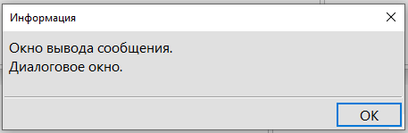
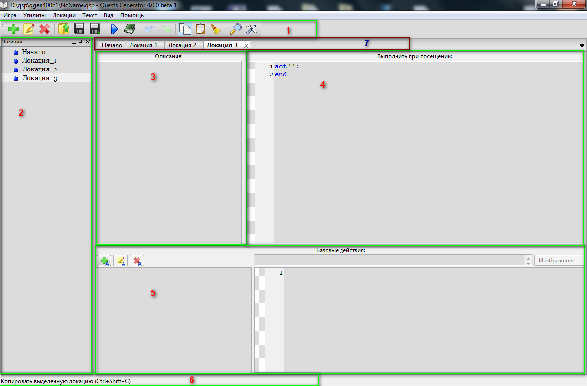
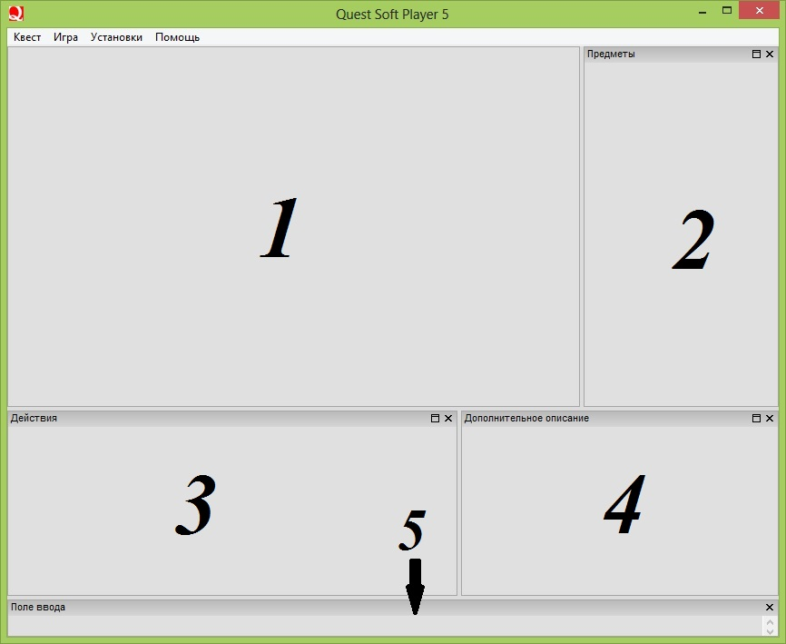
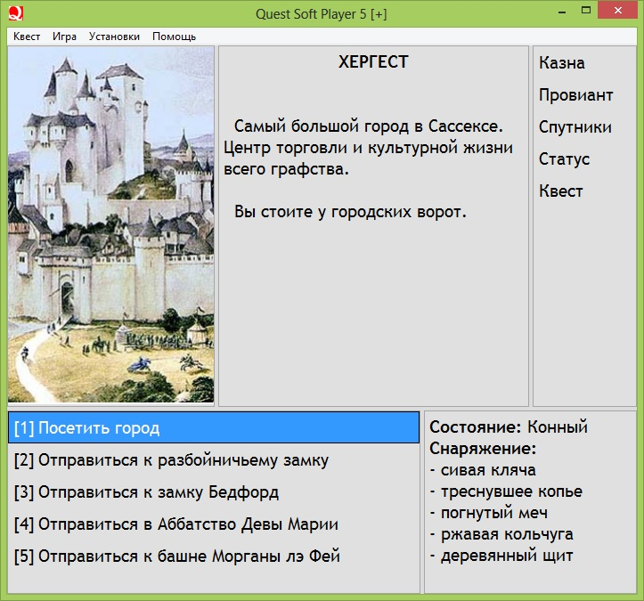
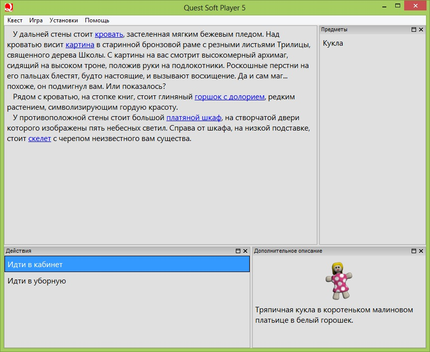
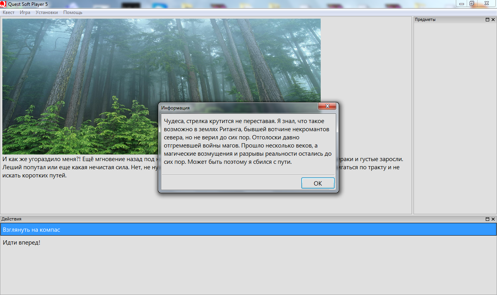
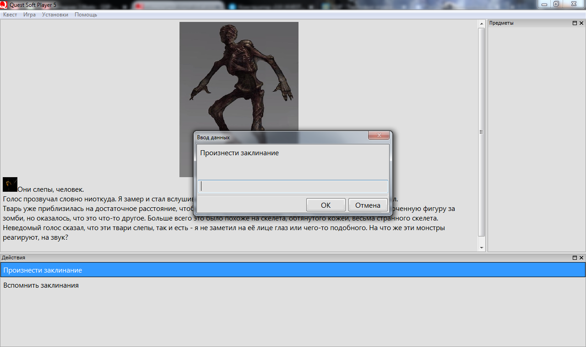
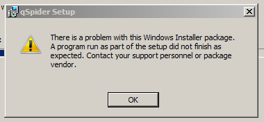

Справочная информация о платформе Quest Soft Player
Данный цикл статей - основная версия справки по QSP. Здесь собрано всё необходимое для освоения платформы.
Обратная связь принимается на форуме: Новая справка по QSP.
Текущая редакция Справки составлялась для плееров с версией библиотеки 5.9.4.
Есть желание приобщиться к текстовым играм, но пока нет идеи?
Скачайте “Набор игрока” с главной страницы сайта и просто поиграйте, чтобы проникнуться идеей таких игр.
Есть желание начать писать текстовые игры, даже есть идея, но нет опыта программирования?
Смело открывайте учебник, который специально создан для авторов, не имеющих опыта в программировании. Или заходите на канал “Пишем игры на QSP” на Ютубе, где можно ознакомиться с полным курсом видеоуроков для новичков.
Ну а остальных милости просим в эту справку.
- Список ключевых слов. Указатель
Если вам не хватает информации о какой либо команде, обратитесь к Списку ключевых слов, там вы найдёте ссылки на разделы в справочной форме с более подробными описаниями команд.
В справке встречаются следующие обозначения:
[выражение]- значение выражения, которое может быть как текстового, так и числового типа. Это может быть строка текста, число, значение переменной, результат вычисления математической операции, функции и т.п.[$выражение]- значение выражения, которое может быть только текстового (строкового) типа (но при необходимости движок автоматически переведёт число в строку).[%выражение]- значение выражения, которое может быть только кортежем (возвращать кортеж).[#выражение]- значение выражения, которое может быть только числового типа (если возможно, движок автоматически переведёт строку в число).{оператор}- любая команда или несколько команд, в зависимости от контекста
Внимание! Это просто обозначения, а не настоящий QSP-код! Символ # использован в справке только чтобы разделить выражения произвольного и числового типов. К синтаксису QSP данный символ отношения не имеет, его не нужно писать перед названиями числовых переменных.
Примеры:
*pl [выражение]
В данном случае вместо [выражение] может быть подставлено любое значение: строка, число, математическое выражение, значение функции или переменной и т.д.
addobj [$название]
В этом случае вместо [$название] может быть подставлено любое строковое значение: просто строка текста, результат строкового типа, возвращаемый функцией, значение строковой переменной и т.д.
rand([#число])
Здесь вместо [#число] может быть подставлено любое числовое значение: просто число, результат вычисления математического выражения, значение числовой переменной и т.д.
%box = [%кортеж]
Здесь вместо [%кортеж] может быть подставлен любой кортеж, или выражение или функция, возвращающие кортеж.
{оператор 1} & {оператор 2} & {оператор 3}
Здесь вместо {оператор 1}, {оператор 2} и {оператор 3} могут стоять любые команды QSP. Например, операторы вывода текста, математические выражения, присвоение значений переменным и другие.
Онлайн-Версия
Свежая версия справки доступна онлайн.
Документация по QSP вне этой вики
Поддержка платформы
Поддержите развитие платформы и плееров, пожертвовав небольшую сумму через следующие сервисы:
Баг
Баг - ошибка в программе, программный сбой. Существование бага проявляется тогда, когда программа ведёт себя не так, как следует.
Причина возникновения бага, как правило, заключается в том, что программист по невнимательности написал в программе что-то не то. Забыл вставить какую-нибудь команду, вызвал не ту функцию, опечатался в названии переменной, вместо плюса написал минус, и тому подобное.
Эта страница ещё не существует
Вы перешли по ссылке на тему, для которой ещё не создана страница. Если позволяют ваши права доступа, вы можете создать её, нажав на кнопку «Создать страницу».
Действия
"Менюшные" игры с точки зрения геймплея предоставляют игроку на выбор несколько вариантов действий, которыми он может воспользоваться. Выбрав действие, игрок двигает игру дальше по сюжету, и волне возможно, главный герой при этом совершает описанное действие: съедает кусок пирога, или проникает в чужой сад.
Обычно действия отделены от основного описания и представляют собой ряд кликабельных кнопок. В QSP для размещения действий есть отдельное окно, оно так и называется Окно действий, или Список действий (в плеере просто: Действия).
С этим окном, в зависимости от нужд вашей игры, вы можете проделывать разные манипуляции. Вы можете:
- Отключать и включать Окно действий по своему желанию
- Добавлять действия в Окно действий
- Удалять действия из Окна действий
- Полностью очищать Окно действий
В названиях действий не важен регистр букв, то есть "Пойти" и "поЙти" - одно и то же действие.
При создании действия, весь код, относящийся к действию, "прикрепляется" к этому действию, но не выполняется. Этот код будет выполнен только тогда, когда игрок нажмёт на действие (щёлкнет по нему мышью).
Команды для работы с Окном действий
Включение и выключение Окна действий
SHOWACTS [#выражение]- если значение выражения отлично от 0, то показывает Список действий, иначе скрывает его. Пример:showacts 0 & ! скрываем Окно действий showacts 1 & ! выводим Окно действий на экран
Для удобства чтения кода можно заранее определить переменныеonиoffс соответствующими значениями:on,off = 1,0 showacts on & ! включаем Окно действий showacts off & ! выключаем Окно действий
Команды для управления действиями
ACT— данная команда добавляет в Окно действий кнопку действия.- У этой команды есть две формы записи:
- Однострочная форма записи:
ACT [$название], [$путь к файлу изображения]: {оператор 1} & {оператор 2} & {оператор 3}Здесь[$название]— это надпись (название), которая будет выводиться на кнопке действия, а[$путь к файлу изображения]— путь к файлу изображения, которое так же будет выводиться на кнопке действия перед названием.- И команда
ACTи название, и операторы после двоеточия при такой форме записи должны быть записаны в одну строку. - Когда игрок нажмёт кнопку действия с указанным названием, будут выполнены перечисленные операторы.
- Параметр
[$путь к файлу изображения]может отсутствовать, при этом действие добавится без изображения.
- Многострочная форма записи:
ACT [$название], [$путь к файлу изображения]: {оператор 1} {оператор 2} {оператор 3} ENDЗдесь точно так же будет создано действие с названием[$название], перед названием будет выводиться изображение, путь к которому мы указали с помощью параметра[$путь к файлу изображения], а когда игрок нажмёт на действие, будут выполнены перечисленные операторы. Обратите внимание:- При многострочной форме записи после двоеточия в той же строке, где находится команда
ACTне должно быть ничего. - Все операторы записываются со следующей строки после двоеточия
- Многострочная форма обязательно должна завершаться командой
ENDилиEND ACT.
- Примеры:
! действие в однострочной форме записи act "Сорвать с берёзы яблоко": яблоко += 1 & *pl "Вы сорвали яблоко, спелое белое." ! действие в многострочной форме записи, с изображением act "Сорвать арбуз с куста", "img/watermelon.png": арбуз += 1 *pl "Вы сорвали арбуз с куста" end
DELACT [$название]- удаляет действие с указанным названием из списка действий на локации. Если действие с указанным названием не существует, ошибки не будет, плеер просто проигнорирует команду. Примеры:! удаляем действие с конкретным названием delact ‘Идти вперед’ ! удаляем выделенное действие delact $selact
Команды очистки Окна действий
CLA- очистка списка текущих действий (удаление всех действий из окна действий). Пример:! это действие при нажатии выведет текст act "Действие 1": *pl "Ехал Грека Через Реку" end ! это действие при нажатии выведет текст и удалится act "Действие 2": *pl "Видит Грека В Реке Рак" delact $selact end ! это действие при нажатии удалит все действия act "Очистить окно действий": cla end
* CLS - эквивалентно конструкции "CLEAR & *CLEAR & CLA & CMDCLEAR", т.е. очищает все окна кроме списка предметов.
Функции для обработки действий
$CURACTS- данная функция возвращает текущий список действий в виде QSP-кода.- Действия сохраняются в виде набора операторов
ACTс ответствующими параметрами и операциями. - Записав возвращённое функцией значение в переменную, можно восстановить действия с помощью оператора DYNAMIC. Пример:
! записываем текущие действия в переменную $actlist=$curacts ! восстанавливаем действия из переменной dynamic $actlist
$SELACT- данная функция возвращает название выделенного действия в любом месте игры. Пример:act "Съесть яблоко": *pl "Это было очень вкусное яблоко. Жаль, что червивое." здоровье=здоровье+100 delact $selact end
Событие "Выделение действия"
Когда вы наводите курсор мыши на действие, в классическом плеере это действие подсвечивается голубым цветом, и это означает, что действие выделено. При этом функция $SELACT, вызванная в любом месте игры, будет возвращать название такого выделенного действия.
Выделение действия — это событие, к которому вы можете привязать автоматическое выполнение кода. Делается это с помощью системной переменной $ONACTSEL:
$ONACTSEL— системная переменная, куда можно прописать название локации, код на которой будет выполняться при очередном выделении действия.
Более подробная информация в разделе "Служебные локации".
Локальные переменные в действии
Каждое действие в QSP вляется отдельным блоком кода, и потому для него можно назначить локальные переменные. Таким образом можно проводить различные расчёты внутри действия, не затрагивая переменные на локации.
яблоки = 245
act "Наколдовать яблоки":
local яблоки & ! объявляем локальную переменную
яблоки = val($input('Сколько вам нужно яблок?'))
яблоки_у_Миши += яблоки
*pl "Наколдовано яблок: <<яблоки>>"
end
act "Сколько яблок на локации?":
! это действие работает с глобальной переменной
*pl "Яблок на локации: <<яблоки>>"
end
Ограничения
- Максимальное количество одновременно видимых действий на локации — 50. То есть игрок не сможет увидеть больше пятидесяти действий на экране, сколько бы вы их не добавляли.
- Если в списке действий уже есть действие с указанным названием, то новое действие не создаётся, и не заменяет собой уже существующее, плеер просто игнорирует команду act. Таким образом нельзя вывести действия с одинаковыми названиями. Пример:
act "Действие 1": *pl "Старое действие." act "Действие 1": *pl "Новое действие."
Назад: Краткое руководство по TXT2GAM
Анализатор кода QSP
Эта утилита предназначена для анализа кода игры для QSP, записанного в формате TXT2GAM (QSPS).
Для работы этой программы необходимо установить .Net Framework версии не ниже 2.0.
Если при запуске появляется "Ошибка при инициализации приложения (0xc0000135)", значит у вас не установлен .Net Framework.
Анализатор выполняет проверку на двух уровнях:
- Проверка синтаксиса. Все ошибки, которые можно однозначно определить по соответствию синтаксическим правилам языка QSP.
Пример: незакрытые многострочные операторы, незакрытые скобки, неверное количество аргументов функции и т.д. - Предупреждения. Предположения об ошибках, основанные на анализе структуры игры - переменные, локации, предметы, действия.
Пример: локации, на которые нет перехода, использование неинициализированных переменных, попытка удалить предмет, который нигде не добавляется, и т.д.
Скачать анализатор со страницы релизов
Ссылка на проект, для тех, кому интересно: http://code.google.com/p/qsp-analyser/
Главная ценность проекта - исходный код, который полностью открыт. Его можно обновлять и дополнять под изменения в QSP.
Применение
При разработке игр посредством qGen
Анализатор работает только с файлами формата TXT2GAM (QSPS). Поэтому, если вы работаете в Quest Generator, вам придётся экспортировать игру в TXT2GAM для проверки в Анализаторе:
- Открываете меню "Игра → Экспорт → Текстовый файл формата TXT2GAM…"
- Выбираете место сохранения и название файла.
После этого запускаете "QSP_Analyser.exe", указываете путь к вашему файлу, и нажимаете кнопку "Перечитать".
Анализатор выводит список ошибок в следующем виде:
Ошибок: 1, предупреждений: 0 Ошибка, локация "Диалог_А", строка #220 : Многострочный IF без END
Номер строки соответствует номеру в текстовом файле, все исправления вносятся в него через любой текстовый редактор. Для быстрого переключения к нужной строке используйте сочетание клавиш Ctrl+G.
Экспорт текстовых констант в CSV-файл и перевод
Сделано для удобства перевода игры на другой язык. Работает так: открываем утилиту, выбираем исходный код квеста. Открываем вкладку "Конвертация". Жмем "Экспорт в CSV". Если в исходном файле нет ошибок, генерируется CSV-файл, в котором записана таблица из четырех колонок. В первой - номер строки таблицы и название локации, из которой взят текст. Во второй - исходный текст. В третьей - нужно вписать перевод. В четвертой можно писать любые комментарии, ее содержимое не учитывается.
CSV-файл можно редактировать во многих офисных программах. Точно он поддерживается программами OpenOffice Calc и MS Excel. Когда перевод готов, нажимаем кнопку "Сделать перевод, используя CSV". Сгенерируется файл с именем таким как у исходного квеста + указанный суффикс(пример: исходный квест "game.txt", CSV-файл "game.csv", файл перевода "game_tr.txt"). Получили переведенную игру.
Для чего это нужно?
Во-первых, наглядное представление не даст пропустить непереведенных строк.
Во-вторых, можно будет поручить перевод человеку, не знакомому с языком QSP.
Ну и еще это может служить удобным средством для проверки орфографии, до тех пор пока она не будет-таки реализована в кугене.
F.A.Q.
— Что такое "потерянные локации"?
Потерянные - те, на которые нет явно заданных переходов.
Пример:
$nextloc = 'Победа' ... GOTO $nextloc
В такой ситуации, анализатор не засчитает это за переход (обращение к локации). Но можно внести "$nextloc" в специальный список переменных в панели настроек, тогда присваивание значения будет считаться за переход.
— Зачем переводить игры?
Кроме очевидных:
- Увеличение аудитории игры.
- Хорошо оформленную игру на Aero, переведенную на английский, можно собрать в stand-alone swf и продать на рынке flash-игр. При этом весь контент в игре не должен нарушать чьих-либо авторских прав.
- Теоретически можно публиковать игры на Steam и других площадках для продажи игр.
Ссылки
Массивы
Зачем нужны массивы
Иногда нам становится неудобно хранить множество однотипных значений в разных переменных. Например, у нас есть двадцать "железных мечей" и для каждого мы прописали урон в двадцати разных переменных:
меч_железный_1 = 23 меч_железный_2 = 34 меч_железный_3 = 27 ... меч_железный_19 = 7 меч_железный_20 = 41
Даже для того, чтобы просто вывести на экран данную характеристику для каждого меча, нам придётся написать двадцать строчек кода, почти ничем не отличающихся:
*pl "Меч железный №1. Урон: "+$str(меч_железный_1) *pl "Меч железный №2. Урон: "+$str(меч_железный_2) *pl "Меч железный №3. Урон: "+$str(меч_железный_3) ... *pl "Меч железный №19. Урон: "+$str(меч_железный_19) *pl "Меч железный №20. Урон: "+$str(меч_железный_20)
Всё бы ничего, но что если нам нужно найти среди всех этих переменных ту, которая содержит максимальное число (мы ведь хотим пользоваться самым хорошим мечом)? Тут нам придётся городить огромную конструкцию условий, которая сравнивает каждую переменную со всеми остальными, и объём необходимого нам кода возрастает многократно.
Да, есть некоторые варианты решения этих двух задач без использования массивов, но они тоже весьма сложны. Куда как проще работать с однотипными данными, если они представлены в форме массива.
Если переменную мы можем вообразить в виде отдельной маленькой коробки, в которую можно положить лишь одно значение, то массив — это большой шкаф, со множеством пронумерованных ящиков (ячеек), в каждый из которых мы можем положить по одному значению.
Что такое массивы
Массив - в QSP это последовательный набор значений, записанных под одним общим именем.
Например, вместо того, чтобы помещать урон каждого железного меча в отдельную переменную, мы заводим массив, и размещаем значения уронов от разных мечей в ячейках этого массива.
Имена переменных и имена массивов записываются похожим образом. Единственное отличие в том, что когда мы обращаемся к массиву — возле его имени в квадратных скобках ставим номер одной из ячеек.
меч_железный[0] = 23 & ! нумерация ячеек массива начинается с нуля меч_железный[1] = 34 меч_железный[2] = 27 ... меч_железный[18] = 7 меч_железный[19] = 41 & ! значение для двадцатого меча лежит в ячейке под номером 19
Из этого примера видно, чтобы записать значение в отдельную ячейку массива, мы должны:
- Написать имя массива;
- затем без пробелов, не отступая от имени массива, в квадратных скобках написать номер ячейки, в которую хотим записать значение;
- затем поставить знак
=(операция присваивания); - и уже после знака равно написать нужное значение.
В нашем примере массив называется "меч_железный", а в квадратных скобках мы указываем номера ячеек этого массива.
Создание массива
Записывая значения хотя бы в одну ячейку массива, мы тем самым создаём (инициализируем) весь массив.
- Ячейки массива так же называются элементами.
- Любой массив состоит из одного или множества элементов, и у каждого элемента есть собственный номер.
- Номера элементов начинаются с нуля и не повторяются.
- Нумерация элементов массива не прерывается. То есть, например, не может в массиве существовать четвёртый элемент, но отсутствовать второй и третий. Если мы создадим только нулевой и первый, а так же четвёртый, элементы массива, второй и третий — будут созданы автоматически:
mass[0]=13 mass[1]=19 mass[4]=23 ! элементы mass[2] и mass[3] созданы автоматически и хранят значения по умолчанию (т.е. 0)
- Максимальный возможный номер ячейки массива
2147483647. - Минимально возможный номер ячейки массива
0. QSP не допускает создания ячеек с отрицательным индексом и не работает с такими ячейками. Плеер игнорирует команды присвоения, и возвращает значение по умолчанию при попытке обратиться к такой ячейке.
Типы данных в массивах
Массив можно представить себе как список значений. Если вам нужно хранить только одно значение, достаточно обычной переменной, но если вам нужно сохранить множество значений, как некий список, то обязательно используйте массив. Например, вы можете вести список имён всех встреченных персонажей:
$встреченные_неписи[0] = "Домовёнок Нафаня" $встреченные_неписи[1] = "Девочка Оля" $встреченные_неписи[2] = "Лариса Петровна" $встреченные_неписи[3] = "Баба Яга"
В данном примере мы помещали в массив строковые значения.
Чтобы поместить в ячейку массива строковое значение, нужно поставить перед именем массива символ $.
То же самое и в случае, когда мы хотим получить значение из ячейки массива:
если мы хотим получить строковое значение, нужно поставить символ $ перед именем массива.
И точно так же это работает для числовых значений и кортежей:
- Если нам нужно присвоить ячейке массива, или получить из неё, числовое значение, никаких символов мы перед именем массива не ставим.
- Если нам нужно присвоить ячейке массива, или получить из неё, кортеж, ставим символ
%перед именем массива.
Примеры:
$яблоки[0]='антоновка' $яблоки[1]='белый налив' $яблоки[2]='астраханское' $яблоки[3]='ранетка' $яблоки[4]='симиренко' сорт_яблока[0] = 1 сорт_яблока[1] = 2 сорт_яблока[2] = 4 %сорта_в_корзине[0] = [1, 4] %сорта_в_корзине[1] = [2, 4] %сорта_в_корзине[2] = [1, 2] *pl $яблоки[сорт_яблока[номер_яблока]]
В одном массиве допускается хранить значения любых типов, однако строго рекомендуем хранить в одном массиве только значения одного типа: либо строковые, либо числовые, либо кортежи, — во избежание возможных багов.
В одной ячейке массива можно хранить значение только одного типа! Если вы запишете в ячейку, которая хранит строку, числовое значение — это числовое значение "затрёт" строковое. И точно так же со значением любого другого типа.
Обработка массивов
Преимущество работы с массивами по сравнению с обычными переменными раскрывается, когда нам приходится много раз повторять одну и ту же операцию над похожими значениями.
В примере из начала статьи мы помещали наносимый железным мечом урон для двадцати разных мечей в двадцать отдельных переменных и видели, что даже такая простая операция, как вывод значений всех этих переменных на экран требует огромного количества кода. Совсем другое дело, когда мы поместили наши данные в массив, ведь мы можем перебрать весь массив с помощью простого цикла:
меч_железный[0] = 23 & ! нумерация ячеек массива начинается с нуля меч_железный[1] = 34 меч_железный[2] = 27 ... меч_железный[18] = 7 меч_железный[19] = 41 & ! значение для двадцатого меча лежит в ячейке под номером 19 ! выводим на экран список с помощью цикла loop i=0 while i<20 step i+=1: *pl "Меч железный №<<i+1>>. Урон: "+$str(меч_железный[i]) end
В этом примере для вывода на экран всех значений из всех двадцати ячеек массива нам потребовалось написать всего три строчки кода.
А вот как выглядит поиск железного меча с наибольшим значением урона:
pos = arrpos('меч_железный', max('меч_железный'))
*pl "Наибольший урон имеет Меч железный №<<pos+1>>: "+$str(меч_железный[pos])
В обоих примерах вместо указания конкретного номера ячейки массива, при получении данных из массива, мы подставляли значение переменной. Именно эта возможность позволяет так легко и быстро обрабатывать множество данных в массивах, и делает работу с ними более удобной, чем с обычными переменными.
Индексирование элементов массива
Выше мы писали, что ячейки массивов нумеруются подряд, начиная с нуля, и нумерация эта не прерывается. Номер ячейки массива называется числовым индексом ячейки массива.
! ячейки массивов индексируются через числа $любимый_сорт[3] = $яблоки[2] любимое_число[19] = 5 $item_loc[0] = 'лес'
Важно! Настоятельно не рекомендуем использовать большие числовые индексы без необходимости.
QSP позволяет создавать для элементов массивов не только числовые, но и строковые индексы. Иными словами массивы могут индексироваться через строки. Примеры:
! ячейки массивов индексируются через строки $любимый_сорт['Иван'] = $яблоки[2] любимое_число['Алексей'] = 5 $item_loc['палка'] = 'лес'
Регистр символов в строковом индексе массива значения не имеет:
$любимый_сорт['иван'] = 'Антоновка' *pl $любимый_сорт['ИВАН'] & ! выведет строку Антоновка
Есть небольшая хитрость в том, как назначаются строковые индексы ячейкам массивов. Когда вы инициализируете (создаёте, объявляете) новую ячейку массива со строковым индексом, происходит следующее:
- Плеер создаёт новую ячейку с новым числовым индексом, следующим по порядку. Например, если в массиве уже были созданы три ячейки, создаётся ячейка с числовым индексом
3. - Затем плеер "прикрепляет" указанный строковый индекс к этой ячейке.
Поэтому, если вы создаёте ячейку со строковым индексом, вы можете получать из неё значения в том числе и по числовому индексу:
яблоки['у Паши']=37 яблоки['у Даши']=19 яблоки['у Лёши']=11 *pl яблоки[0] & ! выведет на экран число 37 *pl яблоки[1] & ! выведет на экран число 19 *pl яблоки[2] & ! выведет на экран число 11
Настоятельно рекомендуется использовать для индексирования или только числовые, или только строковые индексы.
Строковые индексы позволяют обойти ограничение массивов на начало нумерации только с нуля:
$item['-2']='Палка' $item['-1']='Дрель' $item['0']='Радиоактивный пепел'
Многомерные массивы
Начиная с плееров версии 5.8.0 вы можете создавать в QSP многомерные массивы.
Упрощённый доступ к ячейкам массивов
На самом деле каждая переменная в QSP является массивом, состоящим из одной единственной ячейки:
яблоки = 0 !эквивалентно яблоки[0] = 0
то есть, если мы создаём переменную с именем "яблоко", мы тем самым создаём массив с именем "яблоко", состоящий из одной ячейки.
Таким образом вы всегда можете получить или присвоить данные нулевой ячейке массива, просто указав его имя:
! присваиваем нулевой ячейке массива '$COUNTER' строковое значение $usercom = 'строка_ввода' *pl $usercom[0] & ! проверяем ! присваиваем нулевым ячейкам массивов red, green, blue значения set red[0], green[0], blue[0] = 234,198,77 *pl "red: <<red>>, green: <<green>>, blue: <<blue>>" & ! проверяем
Существует упрощённый синтаксис чтения последнего и добавления нового элемента в массив. Для этого квадратные скобки пишутся без указания индекса:
- при записи значения в массив будет создан новый элемент сразу за последним. Например:
! Если массив был пустой, то $objs[] = 'Напильник' &! $objs[0] = 'Напильник' $objs[] = 'Топор' &! $objs[1] = 'Топор' $objs[] = 'Доска' &! $objs[2] = 'Доска'
- при получении значения из массива будет выбран последний элемент. Например:
*pl $objs[] &! 'Доска' из примера выше
Функции и операторы для работы с массивами
KILLVAR [$имя_массива], [индекс_элемента]- удаление элемента с индексом[индекс_элемента]из массива с названием[$имя_массива]. Название массива всегда нужно писать в кавычках. Пример:! удаление по числовому индексу killvar 'яблоко',3 ! удаление элемента по строковому индексу killvar '$item_loc','палка' ! удаление элемента по многомерному индексу (кортежу) killvar '$space',[0,-2,9] %map_point = [0, -2, 13] killvar '$space', %map_point
- Если индекс элемента не указан, то удаляется весь массив.
! удаляем массив $map целиком killvar '$map'
- Если оператор вызван без аргументов, то удаляются все массивы и переменные в игре!
! удаляем все массивы и переменные KILLVAR
- При удалении элемента все следующие за ним элементы сдвигаются на позицию вверх.
a[0]=4 a[1]=3 a[2]=23 a[3]=15 KILLVAR 'a',1 !теперь массив выглядит так: a[0]=4 a[1]=23 a[2]=15
KILLALL- оператор эквивалентен конструкции "KILLVAR & KILLOBJ", то есть удаляет все переменные/массивы в игре, а так же очищает Окно предметов. Обычно применяется в начале игры, чтобы при возврате в начальную локацию после неудачного прохождения какого-то этапа игры обнулить все переменные (в противном случае, может оказаться, что запертые двери уже открыты, жена похищена до свадьбы, а Баба-Яга уже отдала кому-то нужный клубочек).COPYARR [$приёмник],[$источник],[#начало],[#количество]- копирование в массив-приёмник[#количество]элементов из массива-источника начиная с элемента под номером[#начало]. Размер массива-приёмника при копировании не имеет значения.- Параметр
[#количество]является необязательным. По умолчанию - до конца массива-источника. - Параметр
[#начало]является необязательным. По умолчанию -0. - Не имеет значения, указываете ли вы
$или%перед названием массива, или нет. Копируются элементы с любыми типами значений. - Примеры:
COPYARR '$a','$b' COPYARR 'a','b' ! $arrname1, $arrname2 = 'arr', 'bar' COPYARR $arrname1,$arrname2,10,5 COPYARR 'a<<$arrname1>>','a<<$arrname2>>'
SORTARR [$имя_массива], [#порядок]— Данный оператор сортирует указанный массив. Параметр[#порядок]опционален. Если не указан или равен 0, то сортирует массив по возрастанию (от меньшего к большему). Если равен 1, то сортирует массив по убыванию (от большего к меньшему).- Может сортировать массивы любых типов (числа, строки, кортежи), но не допускается смешивать значения разных типов в одном массиве.
- Для указания типа сортируемых значений нужно указать префикс типа как часть имени массива (
$,%).
SCANSTR [$имя_массива], [$текст_для_разбора], [$регэксп], [#номер_группы]— в массив[$имя_массива]помещаются строки, соответствующие регулярному выражению[$регэксп], которые будут найдены в строке[$текст_для_разбора]. Если указан параметр[#номер_группы], в массив будет помещаться не вся строка, соответствующая регулярному выражению, а лишь часть, соответствующая указанной группе в этом регулярном выражении. Примеры:! вытаскиваем из строки все слова: $text = 'Шла Саша по шоссе, а Грека через реку.' scanstr '$words', $text, '\b\w+\b' !В массиве $words окажутся значения: 'Шла', 'Саша', 'по', 'шоссе', 'а', 'Грека', 'через', 'реку' ! разбиваем строку по разделителю: $text = 'утро|день|вечер|ночь' scanstr '$words', $text, '[^|]+' !В массиве $words окажутся значения: 'утро', 'день', 'вечер', 'ночь' ! вытаскиваем из строки все слова, помещённые в квадратные скобки, но без квадратных скобок: $text = '[first] ignoredtext [second][third] also ignored' scanstr '$words', $text, '\[(.*?)\]', 1 !В массиве $words окажутся значения: 'first', 'second', 'third'
ARRITEM([$имя_массива],[индекс_элемента])— возвращает значение элемента массива с названием[$имя_массива]по указанному индексу. То есть функция извлекает значение из указанной ячейки массива. Примеры:! выводим значение элемента с индексом 3 *pl $arritem('$mass', 3) ! выводим значение элемента с текстовым индексом *pl $arritem('$mass', 'Петя') ! выводим значение элемента с многомерным индексом *pl $arritem('$mass', [-2, 9, 0])Эта функция может быть полезна для извлечения значений, если имя массива заранее не известно. Пример:! выводим содержимое нескольких массивов без использования ''**DYNAMIC**'': $array_name[]='mass_1' $array_name[]='mass_2' $array_name[]='mass_3' $array_name[]='mass_4' $array_name[]='mass_5' ! внешний цикл перебирает имена массивов loop local j=0 while j<arrsize('$array_name') step j+=1: ! внутренний цикл выводит содержимое массивов loop local i=0 while i<arrsize($array_name[j]) step i+=1: *pl arritem($array_name[j], i) end endSETVAR [$имя_массива], [значение], [индекс]— устанавливает значение элемента массива с названием[$имя_массива]по указанному индексу. То есть оператор присваивает значение указанной ячейке массива. Префикс имени переменной указывает тип значения, которое нужно записать в элемент массива (как с обычными присваиваниями). Параметр[индекс]опционален. Если этот параметр не указан, то значение присваивается 0-му элементу. Значение и индекс могут быть любых типов. Примеры:SETVAR 'A', 65 SETVAR '$X', 'name', 4 SETVAR '$X', 'name', 'string index' SETVAR '%Q', ['пример', 'кортежа'], 3 SETVAR '%Q', ['пример', 'кортежа'], [x, y]
Данный оператор дополняет функциюARRITEMи позволяет избегать использованияDYNAMICв некоторых случаях.ARRSIZE([$имя_массива])- функция возвращает число элементов массива с названием[$имя_массива].- Не имеет значения, указываете ли вы
$или%перед названием массива или нет. Подсчитывается общее число ячеек и со значениями любых типов. - Примеры:
n = ARRSIZE('a') n = ARRSIZE('$a') !Результат будет одинаковый
$ARRTYPE([$имя_переменной], [индекс])- получает тип значения, которое хранится в массиве[$имя_переменной]под индексом[индекс].- Параметр
[индекс]может отсутствовать, при этом он принимается равным0. То есть вычисляется тип значения переменной/нулевой ячейки массива. Индекс может быть любого типа. - Функция возвращает одно из следующих значений в зависимости от типа:
''(пустая строка) - элемент массива не задан.'#'- элемент содержит число.'$'- элемент содержит строку.'%'- элемент содержит кортеж.
- Пример:
$ddd = 'text' $arrtype('ddd') & ! '$' $g = 'text' & g = 13 $arrtype('g') & ! '#' %tuple['index'] = [12, 'string'] $arrtype('tuple', 'index') & ! '%' ! $empty not exist $arrtype('$empty') & ! ''
ARRPOS([$имя_массива], [значение], [#старт])— возвращает индекс элемента массива равного указанному значению.- Поиск начинается с элемента с заданным номером
[#старт]. - Индексация элементов массива ведётся с нуля.
- Если указанное значение не найдено, функция возвращает -1.
- Другие примеры:
! поиск строки 'this' в текстовом массиве "$a" arrpos('$a', 'this', 0) ! поиск числа 65 в массиве "a" (два элемента массива игнорируются) arrpos('a', 65, 2) ! поиск строки 'test' среди значений массива "$b" arrpos('$b', 'test') - Можно искать значения любого типа, однако:
- если вы ищете среди текстовых значений массива, нужно указывать префикс типа
$перед названием массива; - если вы ищете среди кортежей в массиве, нужно указывать префикс типа
%. - Пример:
$a[0] = '12' a[1] = 12 %a[2] = [12] %a[3] = ['12'] arrpos('$a', 12) & ! 0 arrpos('a', 12) & ! 1 arrpos('%a', 12) & ! 2 arrpos('%a', '12') & ! 2 <--- arrpos('%a', [12]) & ! 2 arrpos('%a', ['12']) & ! 2 <---
MAX([выр1],[выр2], …)- возвращает максимальное из значений выражений-аргументов. Если передан один аргумент, то считается, что указано имя массива:MAX('a') &! вернёт максимальное из числовых значений элементов массива "a" MAX('$b') &! вернёт максимальное из текстовых значений элементов массива "$b" MAX('%d') &! вернёт максимальный из кортежей в массиве '%d'MIN([выр1],[выр2], …)- возвращает минимальное из значений выражений-аргументов. Если передан один аргумент, то считается, что указано имя массива:MIN('a') &! вернёт минимальное из числовых значений элементов массива "a" MIN('$b') &! вернёт минимальное из текстовых значений элементов массива "$b" MIN('%d') &! вернёт минимальный из кортежей в массиве '%d'ARRCOMP([$имя_массива],[$шаблон],[#начало])- возвращает номер элемента массива[$имя_массива], соответствующего регулярному выражению[$шаблон]. Поиск начинается с элемента с номером[#начало]; индексация элементов массива ведётся с нуля. Если указанное значение не найдено, функция возвращает-1.- Поиск работает только по текстовым массивам (символ
$в названии массива можно опустить). - Параметр
[#начало]может отсутствовать, при этом он принимается равным0. - Примеры:
!Поиск строки 'This' среди элементов массива "$A" ARRCOMP('$A','This',0) !'Поиск строки, соответствующей регулярному выражению "abc\d+" (первые два элемента массива игнорируются)' ARRCOMP('$A','abc\d+',2) !'аналогично предыдущему примеру, но поиск осуществляется по всем элементам массива' ARRCOMP('$A','.*string.*',0) ARRCOMP('$A','This') &! эквивалентно 1му варианту - Функция возвращает только числовой индекс элемента. Строковый или многомерный индекс с помощью данной функции получить нельзя.
Так же см. ARRPACK и UNPACKARR в разделе "Кортежи"
Особенности написания игр для классического плеера
В целом, весь справочный материал был написан с учётом особенностей классического плеера. Этот плеер полностью поддерживает все возможности языка QSP. Его основным отличием от других плееров является скромный набор инструментов для оформления игр, а так же собственный HTML-рендер, который существенно отличается от стандартных браузеров.
Классический плеер распространяется в виде portable-версии, т.е. вы можете создать множество копий одного и того же плеера и все они будут работать независимо друг от друга.
Эта же особенность позволяет распространять игру в виде Standalone-сборки.
Ещё одной особенностью работы с классическим плеером является возможность вручную настроить расположение окон и зафиксировать это расположение с помощью специального файла настроек qspgui.cfg.
- Краткая инструкция по настройке окошек плеера: "F.A.Q.: Как настроить окошки классического плеера?"
- Краткое описание файла
qspgui.cfg: "Конфигурационный файл классического плеера".
Мы рекомендуем использовать классический плеер в сочетании с редактором "Quest Generator", если вы только начинаете изучение QSP или для быстрых тестов.
Для более продвинутой разработки игр используйте плеер "qSpider" и сторонний редактор, например VS Code со специальным расширением.
P.S.: Данная статья будет пополняться.
Standalone-сборка игры на классическом плеере
По этому вопросу записано отдельное видео на ютубе: https://youtu.be/Ca4ynD_1BqQ
О создании файла запуска: Genryzz. #3912 21.Фев.16 21:30:40: как сделать пусковой файл?
Статья Серого Волка в теме Возможности) Помогите разобраться
Непосредственно без плеера ни одна игра QSP не запустится.
Но если вам лень объяснять всем и каждому, что игры QSP запускаются на специальном плеере, что надо отдельно качать плеер, отдельно — игры, то есть специальная инструкция по упаковке и файла плеера и файла игры в самораспаковывающийся sfx-архив, который заменит привычный для игрока установщик.
Выше есть ссылка на изначальную версию данной инструкции, мы же сейчас рассмотрим вариант распространяемой standalone-сборки, включающий как изначальную версию, так и работу с пакетным файлом .bat, который позволит игроку запускать игру одним кликом (прямо с рабочего стола).
Названия всех файлов и папок, которые вы будете использовать при сборке игры, должны быть только латинскими буквами.
Для того, чтобы проделать нижеследующие шаги, вам потребуется заранее установить на компьютер программу WinRAR. Она условно-бесплатная. После того, как установите WinRAR, выполните следующее:
Подготовка файлов для сборки
- В первую очередь необходимо завести отдельную папку, назовём её "Standalone". Можете создать её прямо на рабочем столе, это папка, в которую мы скопируем все необходимые нам файлы, чтобы затем создать sfx-архив.
- Если вы хотите добавить оригинальную иконку на сам sfx-архив и на ярлык, с которого будет запускаться игра, скопируйте файлы иконок в папку "Standalone". Далее в инструкции будет указано, что и где прописать, чтобы эти иконки задействовать.
- Скопируйте игру и все сопутствующие ей файлы и папки в папку "Standalone". Например, файл игры называется "moonlight.qsp", он должен оказаться в папке "Standalone".
- Создайте в папке "Standalone" папку "Player"
- Скачайте архив с плеером и распакуйте в папку "Player" всё содержимое архива. Таким образом в папке "Player" будет "qspgui.exe" и другие файлы и папки.
Создание bat-файла
- Создаём в папке "Standalone" текстовый файл, называем его "Start", а вместо расширения ".txt" пишем расширение ".bat"
- Открываем файл "Start.bat" с помощью любого текстового редактора. В этом файле прописываем такую команду:
start "Player/qspgui.exe" "moonlight.qsp"
- start — это команда, запускающая исполняемый файл,
- первым аргументом указываем путь к исполняемому файлу, то есть к нашему плееру,
- вторым аргументом — путь к игре.
- Поскольку плеер лежит во вложенной папке, а файл игры в той же папке, что и "start.bat" можно указывать относительные пути. Но если вы точно знаете, в какие папки будут распакованы игра и плеер, можете указать и абсолютные пути.
Упаковка подготовленных файлов в SFX-архив
- Теперь в папке "Standalone" выделяем папку "Player", выделяем игру ("moonlight.qsp") и все сопутствующие ей файлы и папки, выделяем файл "start.bat", щёлкаем правой кнопкой мыши по любому из выделенных файлов и из всплывающего контекстного меню выбираем пункт "Добавить в архив…"
- Откроется диалоговое окно по добавлению файлов в архив. Указываем имя архива. Можно написать например "moonline_setup".
- На вкладке "Дополнительно" заходим в "параметры SFX".
- На вкладке "Общие" указываем путь для распаковки. Рекомендую указывать абсолютный путь, так как неизвестно, откуда игрок запустит ваш "установщик". Например, можно прописать такой путь:
C:\QSP_Games\MoonLight
- На вкладке "Дополнительно" можно добавить ярлык:
- Нажимаем кнопку "Добавить ярлык…", откроетя диалоговое окно.
- Отмечаем в списке "Место создания ярлыка" пункт "На рабочем столе".
- В поле "Имя файла для которого будет создан ярлык" пишем:
start.bat
- В поле "Имя ярлыка" можно написать название игры ("MoonLight").
- В поле "Значок ярлыка" прописываем относительный путь к файлу иконки, которую мы хотим увидеть на ярлыке (эта иконка лежит у нас в папке "Standalone" и тоже должна быть упакована в архив).
- Нажимаем "ОК".
- На вкладке "Текст и графика" можно прописать некоторые данные. Например, вы можете установить свой логотип, написать текст приветствия для игрока и заголовок окна. Если вы подготовили оригинальный значок/иконку для своего sfx-архива, на этой вкладке можно указать путь к файлу этого значка (эта иконка опять же у нас уже лежит в папке "Standalone").
- На вкладке "Обновление" отмечаем пункты "извлечь и заменить файлы" и "перезаписывать файлы без запроса".
- Нажимаем кнопку "ОК", и снова "ОК" в основном окне.
В папке "Satndalone" должен появиться файл с расширением ".exe" ("moonline_setup.exe"). Остаётся только проверить, как данный "установщик" работает, и можно распространять игру среди друзей и знакомых.
Программный код
Выполнение кода в плеере QSP происходит последовательно, команда за командой, сверху вниз и слева направо:
*pl "Первая команда" *pl "Вторая команда" *pl "Третья команда" *pl "Четвёртая команда" & *pl "Пятая команда" & *pl "Шестая команда"
Структура команд
Все команды в QSP составляются по общим принципам:
{оператор} [значение 1], [значение 2], ..., [значение 20]
Здесь вместо {оператор} может и должен стоять любой оператор QSP из тех, что перечислены в разделе "Ключевые слова. Операторы". Если в команде нет {оператор}, значит на самом деле на этом месте подразумевается неявный оператор.
! здесь используются явные операторы:
*pl "Ехал Грека Через Реку"
addobj "Рак"
! а здесь имеет место неявный оператор:
137 + 294
func('pow', 3, 3)
В качестве значений [значение 1], [значение 2], … ,[значение 20] могут выступать строковые или числовые константы, кортежи, переменные, значения функций, или целые выражения, а число таких значений зависит от назначения оператора. Например, для оператора *PL может быть указано лишь одно значение, а для оператора ADDOBJ от одного до трёх таких значений. Сами значения перечисляются через запятую.
*pl "Три в кубе это "+func('pow',3,3)+". Да, серьёзно. А ты не верил?"
addobj "Апельсинка", "img/orange.png", 1
Если необходимо, то для удобства чтения кода значения для операторов можно (но не обязательно) помещать в круглые скобки:
pl("Строка текста")
addobj("Отвёртка","img/screwdriver.png",3)
Внимание! В одной команде не может быть более одного оператора! Равно так же не может быть команды совсем без оператора. Если в вашей команде нет оператора, то вы имеете дело с неявным оператором.
Операция присваивания предполагает, что перед именем переменной стоит оператор SET, хотя обычно этот оператор опускают, то есть его тоже можно назвать "неявным":
[имя_переменной] = [значение]
Здесь = — это операция присваивания. Не путайте с операцией сравнения равно.
Порядок записи команд
Вот несколько правил и рекомендаций для корректного написания кода:
- Каждую отдельную команду нужно записывать в отдельной строке.
- Отступы (пробелы и символы табуляции) перед командой и после неё игнорируются плеером, поэтому вы можете ставить их в нужном количестве для удобства чтения кода:
*p "<table width=240>" *p "<tr>" *p "<td>Имя:</td>" *p "<td>" *p $name *p "</td>" *p "</tr>" *p "<tr>" *p "<td>возраст:</td>" *p "<td>" *p age *p "</td>" *p "</tr>" *p "</table>" - Пустые строки так же игнорируются плеером, поэтому для лучшей читаемости кода вы можете размещать их между командами:
яблоко = 1 груша = 1 *pl 'Яблок' + яблоко *pl 'Груш' + груша
- При необходимости можно написать несколько команд в одну строку. При этом в качестве разделителя команд служит символ "&" (не путайте с операцией объединения строк):
яблоко+=1 & *pl "У меня есть <<яблоко>> яблок." & яблоко_взял=1
Без необходимости так делать не рекомендуется, поскольку это ухудшает читаемость кода, а так же повышает вероятность допустить баг. Подобное перечисление команд уместно в гиперссылках:*pl '<a href="EXEC: яблоко += 1 & GT $CURLOC">яблоко</a>'
В данном случае при нажатии на ссылку выполнится код:яблоко += 1 GT $CURLOC
- Внутреннюю часть многострочных операторов рекомендуется сдвигать вправо 2-4 пробелами (или одним символом табуляции). Это никак не влияет на выполнение, но делает код более читаемым:
IF яблоки=0 : ADDOBJ 'Яблоко' яблоки = 1 END - Крайне редко для повышения читаемости кода приходится разбивать строку на несколько. Такая строка хотя и будет в коде разбита на части, но будет восприниматься плеером, как единая (сообщения об ошибках будут выводится с учётом того, что это одна строка). Чтобы следующая строка считалась частью текущей, нужно в конце текущей строки дописать
_(пробел и символ подчёркивания):if a<5 and n-b>4+5+h/7*2 or t=4: p 'TTTTTTTTT' & cla & $f='Text Variable' & goto 'FFFF'
равнозначноif a<5 and _ n-b>4+5+h/7*2 or _ t=4: p 'TTTTTTTTT' _ & cla & $f='Text Variable' _ & goto 'FFFF'
Вместо разбиения строки рекомендуется видоизменить код так, чтобы разбивать строку не требовалось. Обратите внимание. Сочетание символов_(пробел и символ подчёркивания) при склеивании строк заменяется на пробел, поэтому такой код:t _ or _ t
будет эквивалентен такому коду:t or t
Разбивать команду на две строки внутри строковой константы нельзя:! на экране мы увидим две строки текста, а не одну: *pl "Это строка, которую я хочу разбить _ на две строки кода, но при выводе видеть одну строку"
- В квадратных и круглых скобках допустимы переносы строк для улучшения читаемости кода. Примеры:
%test = [ [ 'key1', 'value1' ], [ 'key2', 'value2' ], [ 'key3', 'value3' ], ] max( 'val1', 'val2', 'val3', 'val4' ) pl (a + (b * 2) - (c + 2) ) * 2 $arr[ 'key1', 'key2', $key3 ] = 'value' pl $arr['key1', 'key2', $key3] if ($color = "жёлтый" or $color = "красный" or $color = "зелёный"): "По-прежнему однострочное условие."
Комментарии
Оператор комментария ! служит для комментирования кода и позволяет оставлять "заметки на полях", которые помогут впоследствии ориентироваться в коде. Всё, что следует за оператором комментария, плеер игнорирует.
Поскольку ! — это оператор (не путайте с операцией не равно), если вы пишете его на одной строке с другими командами, нужно обязательно ставить разделитель & (амперсанд) между последней командой и оператором комментария:
! это комментарий в отдельной строке яблоки = 0 & ! а это комментарий в строке с командой
Исключением из этого правила является установка комментария после двоеточия в многострочном условии, цикле или действии. В этом случае амперсанд не нужен:
act "Взять яблоко": ! многострочное действие
addobj "Яблоко"
яблоко += 1
end
Так как весь текст после оператора комментария будет проигнорирован плеером, комментарий надо ставить всегда самым последним в строке из нескольких команд:
! комментарий. Следующие команды не работают: & *pl "Первая команда" & *pl "вторая команда" *pl "Эта команда работает" & ! а остальные нет & *pl "вторая команда" & *pl "третья команда" *pl "Эта команда работает" & *pl "и эта работает" & ! а последняя нет & *pl "третья команда" *pl "Все три" & *pl " команды" & *pl "работают" & ! а это комментарий
Комментарии бывают двух видов: однострочные и многострочные.
- Однострочный комментарий начинается от оператора комментария и заканчивается с концом строки:
! Однострочный комментарий ! и это однострочный комментарий яблоки = 0 & ! и это однострочный комментарий
- Многострочный комментарий так же начинается от оператора комментария и заканчивается с концом строки, однако при использовании кавычек (
" "), апострофов (' ') или фигурных скобок, он может захватывать так же и те строки, что размещены внутри кавычек, апострофов или фигурных скобок:!'Многострочный комментарий в апострофах' яблоки = 1 сыр = 5 & ! А здесь "комментарий начинается в той же строке, но" заканчивается 'сильно позже'. Во всём виноваты {кавычки и скобки } Кстати: яблоки = 0 !'Комментарии рекомендуется писать всё-таки в отдельных строках, а не как бутерброд с "сыром"'
Запись констант
Под константами в QSP подразумеваются конкретные числовые или строковые значения. Конкретный кортеж (запись значений в квадратных скобках) тоже можно назвать константой. В следующем примере для операторов вывода текста указаны конкретные значения, это и есть константы:
! вывод на экран числа 137. Можно назвать это число константой. *pl 137 ! вывод на экран строки текста. Эту строку можно назвать константой *pl "На окошке крошку-мошку ловко ловит лапой кошка" ! выводим на экран кортеж. Кортеж тоже может быть константой *pl [13, 'unit', 37]
Для записи числовых констант (чисел) используются символы цифр без дополнительных обозначений:
x = 145 & ! 145 здесь - константа (137+299*2)/11-19 & ! целое выражение из числовых констант
Для записи строковых констант (строк) используются символы, отмечающие начало и конец такой строковой константы. Можно использовать кавычки (" "), апострофы (' '), или фигурные скобки ({ }):
*pl "Это строковая константа"
*pl 'И это строковая константа'
*pl {И даже это}
Более подробно о правилах записи строк в QSP можно почитать в разделе "Строки".
Для записи кортежей используются квадратные скобки:
*pl ['это кортеж', 'если он ', "не присвоен переменной", "его можно считать константой"]
См. также "Именованные константы".
Операторы и функции
Оператор - ключевое слово (команда) языка QSP, выполняющее какое-либо действие. Оператор может иметь параметры (аргументы), которые задаются выражениями. Операторы не возвращают результат выполнения.
Как правило, операторы меняют состояние игры.
Каждая команда QSP содержит один оператор и его аргументы (параметры). Если вы написали команду без оператора, то в ней обязательно присутствует неявный оператор.
!Примеры вызовов операторов:
ADDOBJ 'ключ','pics/key.png'
ADDOBJ ('ключ','pics/key.png')
PL('текст')
CLEAR()
Функция - ключевое слово, которое используется для того, чтобы получить какое-либо значение. Например, сколько предметов игрок несёт в рюкзаке. Для этого, в коде мы указываем функцию, и необходимые для расчёта параметры (аргументы функции). Результат, "посчитанный" этой функцией, подставляется на её место в выражении. На языке программистов это звучит так: "мы вызвали функцию, и функция вернула нам значение".
Как правило, при вызове функции состояние игры не меняется. Примеры вызовов функций:
maximum = MAX(1, 2, 4) случайное_число = RAND(4) предметов_в_рюкзаке = COUNTOBJ PL $STR(43)
В одной команде может быть вызвано несколько функций:
*pl "Случайный предмет: "+$getobj(rand(1,countobj))
bcolor = rgb(func('hex_in_dec','ff'),func('hex_in_dec','34'),func('hex_in_dec','67'))
При использовании функций, возвращающих текстовое значение, настоятельно рекомендуется прописывать перед именем функции символ $ для улучшения читаемости кода.
Максимальное число аргументов для операторов и функций в QSP: 20.
Базовые функции
$QSPVER- возвращает версию библиотеки плеера в формате "X.Y.Z Player". Например, классический плеер версии 5.9.0. возвращает значение "5.9.0 (classic)", а qSpider просто "5.9.0". Пример использования:if $QSPVER<'5.9.0': *pl "Ваша версия плеера не подходит для данной игры. Установите плеер версии 5.9.0." end
Так же данная функция может возвращать различные значения при передаче ей аргументов (начиная с версии 5.8.0):platform— возвращает платформу, на которой запущена игра. Пример использования:$QSPVER('platform')player— возвращает название плеера, на котором запущена игра. Пример использования:$QSPVER('player')
Математические функции
RAND([#выр1],[#выр2],[#мода])- возвращает случайное число между числами[#выр]и[#выр2].- Параметр
[#мода]позволяет указать число, которое должно выпадать более часто, чем остальные. При этом распределение частоты выпадения будет плавно изменяться для всех остальных чисел. Подробнее о распределении читайте в статье Третий параметр RAND. - Если 3й параметр не указан, то функция возвращает случайное число в заданном диапазоне с равномерным/равновероятным распределением чисел.
- Параметр
[#выр2]может отсутствовать, при этом он принимается равным единице (1). - Примеры:
RAND(1,4) & ! вернёт случайное значение от 1 до 4 RAND(4,1) & ! вернёт случайное значение от 1 до 4 RAND(1000) & ! вернёт случайное значение от 1 до 1000 RAND 1000 & ! вернёт случайное значение от 1 до 1000 x = RAND(1, 1000, 500) & ! чаще будет выпадать 500 x = RAND(1, 1000, 1) & ! чаще будет выпадать 1 x = RAND(1, 1000, 1000) & ! чаще будет выпадать 1000 x = RAND(-1000, 0, -500) & ! чаще будет выпадать -500 x = RAND(1, 1000, 5000) & ! чаще будет выпадать 1000 x = RAND(-1000, -100, -5000) & ! чаще будет выпадать -1000
RND- возвращает случайное значение от 1 до 1000.MAX([выр1],[выр2], …)- возвращает максимальное из значений выражений-аргументов. Если передан один аргумент, то считается, что указано имя массива:MAX(1,2,5,2,0) &! вернёт 5 MAX(a,b,c) &! вернёт максимальное из значений переменных a,b,c MAX('aa','ab','zz') &! вернёт 'zz' MAX('a') &! вернёт максимальное из числовых значений элементов массива "a" MAX('$b') &! вернёт максимальное из текстовых значений элементов массива "$b"
MIN([выр1],[выр2], …)- возвращает минимальное из значений выражений-аргументов. Если передан один аргумент, то считается, что указано имя массива:MIN(1,2,5,2,0) &! вернёт 0 MIN(a,b,c) &! вернёт минимальное из значений переменных a,b,c MIN('aa','ab','zz') &! вернёт 'aa' MIN('a') &! вернёт минимальное из числовых значений элементов массива "a" MIN('$b') &! вернёт минимальное из текстовых значений элементов массива "$b"
Условия
Условия — это такие особые конструкции в QSP, которые позволят сделать вашу игру по настоящему интерактивной. Они позволяют разветвлять события, происходящие в игре в зависимости от уже сложившихся условий, и таким образом вносить разнообразие в игровой процесс. Операторы, которые используются в конструкциях условий, в программировании называются операторами ветвления.
Операторы ветвления часто используют с операциями сравнения и с логическими операциями.
Операторы условий
IF— основной оператор для записи конструкций условий. Конструкции, записываемые с помощью этого оператора (назовём их "простыми условиями"), имеют две формы: однострочную и многострочную, — и в общем виде выглядят так:! однострочная форма записи IF [#выражение]: {команда 1} & {команда 2} & … ! многострочная форма записи IF [#выражение]: {команда 1} {команда 2} … ENDВ данном случае, если верно условие[#выражение], выполняются команды{команда 1},{команда 2}и т.д. Для однострочной формы записи это будут только те команды, которые идут в той же строке, что и операторIFдо конца строки; а для многострочной формы записи это будут те команды, которые идут в последующих строках после двоеточия и до специального ключевого словаEND.- В качестве условия могут выступать операции сравнения, логические операции и иные выражения, возвращающие числовые значения.
- Ключевое слово
ENDпри многострочной форме записи должно стоять отдельной строкой. - Если условие
[#выражение]не верно, команды выполнены не будут. - Примеры однострочной формы записи условий:
! если сумма a и b равна двум, ! переменной c присваивается значение 30 if a+b=2: c=30 ! Если в инвентаре нет апельсина, выводится текст if no obj "Апельсин": pl "У Вас нет апельсина." ! это тоже простая однострочная форма if ((a+b)/c)=45+54 or (b<5 or c>45) and no obj 'лопата' and $f=$vvv+'RRRRR': p 'OK' & goto 'Next'
- Примеры многострочной формы записи условий:
if библиотека = 0: узнал_о_тусовке = 0 библиотека_вернулся = 1 gt 'библиотека' end if a+b=2: c=30 end
- Обратите внимание!!! При многострочной форме записи после двоеточия в той же строке, в какой находится оператор
IF, не должны идти никакие команды, иначе плеер посчитает такой оператор условия однострочным, и команды в последующих строках будут выполняться в любом случае, независимо от того, верным окажется условие или нет. Пример такой ошибочной записи:if библиотека = 0: узнал_о_тусовке = 0 библиотека_вернулся = 1 &! эта строчка будет выполняться в независимости от верности условия gt 'библиотека' &! и эта end &! ключевое слово end - просто игнорируется
ELSE— ключевое слово, использующееся совместно с операторомIF, и которое служит для предоставления альтернативы, если условие не выполнено. Ключевое словоELSEтак же имеет две формы записи: однострочную и многострочную. Многострочную форму записиELSEможно использовать только в многострочной конструкции оператораIF, тогда как однострочную форму записи можно использовать как в однострочной, так и в многострочной, конструкции оператораIF. Общая форма записи:! однострочная форма записи IF [#выражение]: {команда д1} & {команда д2} & … ELSE {команда н1} & {команда н2} & … ! в многострочном IF ! многострочная форма ELSE IF [#выражение]: {команда д1} {команда д2} ... ELSE {команда н1} {команда н2} ... END ! однострочная форма ELSE IF [#выражение]: {команда д1} {команда д2} ... ELSE {команда н1} & {команда н2} & ... ! команды в следующих строках ! до END игнорируются ENDЗдесь, если условие[#выражение]верно, выполняются команды от двоеточия до ключевого словаELSE, а если условие[#выражение]не верно, выполняются команды от ключевого словаELSEи до конца конструкции условия.- После
ELSEможно ставить, а можно не ставить двоеточие. - При однострочной форме записи:
- и команды и ключевое слово
ELSEдолжны быть записаны в одной строке - окончанием альтернативного списка команд является конец строки.
- если однострочная форма записи
ELSEиспользуется в многострочной форме записиIF, все команды, которые идут в последующих строках послеELSEдоENDигнорируются. - Примеры однострочной записи:
! если сумма a и b равна двум, переменной c присваивается значение 30 ! в противном случае (то есть если сумма a и b не равна двум) ! переменной c присваивается значение 10 if a+b=2: c=30 else c=10 ! в зависимости от того есть ли в инвентаре апельсин ! выводится соответствующий текст if obj "Апельсин": pl "У Вас есть апельсин." else pl "У Вас нет апельсина." ! однострочная форма else внутри многострочной if if $левая_рука = 'Великий меч': gosub 'atack', 300 gosub 'health.prove' gosub 'win.prove' else gosub 'atack', atack_power end
- При многострочной форме записи:
- все команды должны идти в последующих строках после
ELSE; - Примеры многострочной записи:
if a+b=2: c=30 else c=10 end if obj "Апельсин": pl "У Вас есть апельсин." else pl "У Вас нет апельсина." end if len($curtoken) > 0: $tokens[curtoken_num] = $curtoken tokens_count = curtoken_num + 1 else tokens_count = curtoken_num end
ELSEIF— ключевое слово, которое используется совместно с операторомIFи позволяет определять на одном уровне вложенности последовательно-исключающие условия. Ключевое словоELSEIFимеет однострочную и многострочную формы записи. Многострочную форму записи можно использовать только в многострочных конструкциях с операторомIF, а однострочную — как в многострочных, так и в однострочных конструкциях с операторомIF. Общие формы записи:! однострочная в однострочном условии IF [#выражение 1]: {набор команд 1} ELSEIF [#выражение 2]: {набор команд 2} ELSE {последний набор команд} ! многострочная в многострочном условии IF [#выражение 1]: {набор команд 1} … ELSEIF [#выражение 2]: {набор команд 2} … ELSEIF … : … ELSE {последний набор команд} … END ! однострочная в многострочном условии IF [#выражение 1]: {набор команд 1} … ELSEIF [#выражение 2]: {набор команд 2} & … ELSEIF … : … ELSE {последний набор команд} ENDРаботает это следующим образом. Если[#выражение 1]верно, выполняются команды{набор команд 1}. Если[#выражение 1]неверно, но верно[#выражение 2], выполняются команды{набор команд 2}, и т.д. И только если неверны все выражения в текущей конструкции условия, выполнятся команды послеELSE. Верность выражения[#выражение 1]не исключает верности выражения[#выражение 2], однако верность выражения[#выражение 2]исключает верность выражения[#выражение 1].
Особенности записиELSEIF:- Может использоваться вариант написания
ELSE IF. Работает точно так же. - Если в многострочной конструкции
IFпослеELSEIFоператоры идут в той же самой строке (однострочная форма), то все последующие строки игнорируются до следующегоELSEIF, либо доELSEилиEND. - В конструкции
IFcELSEIFможет как присутствовать, так и отсутствовать часть сELSE. - Примеры:
IF ОЧКИ>124: GOTO 'КОН3' ELSEIF ОЧКИ>99: GOTO 'КОН4' ELSE GOTO 'КОН5' END if money mod 10=1 and money mod 100<>11: *pl "У вас <<money>> монета." elseif money mod 10>1 and money mod 10<5 and (money mod 100<5 or money mod 100>20): *pl "У вас <<money>> монеты." elseif money mod 10=0 or money mod 10>4 or (money mod 100>10 and money mod 100<21): *pl "У вас <<money>> монет." end
Пример записиELSEIFс операторами в той же строке:if r = 0: 'Вариант 0' elseif r = 1: 'Вариант 1' elseif r = 2: 'Вариант 2' elseif r = 3: 'Вариант 3' else: 'Без вариантов' end
END— ключевое слово, которое указывает на конец многострочной конструкции условия. Допускается записьEND IF. Не используется для однострочных форм записи.
Для многострочных форм записи допускается вложенность неограниченной глубины. Каждый уровень вложения должен заканчиваться своей строкой END.
Некоторые примеры:
if a+b<3 or y=8:
p 'A+B<3 или Y=8'
nl
if j=88: nl & p 'NEXT'
if $h='ooo':
p 'loo' & jump 'lll'
end
end
if a = 0:
'abc1234'
if b = 0: '0' else '1'
if j = 88: nl & p 'NEXT'
if $h='ooo':
p 'loo' & jump 'lll'
else
p 'sample text'
v = 8
end
1234
else:
'01234'
g = 78
end
if ((a+b)/c)=45+54 or (b<5 or c>45) and no obj 'лопата' and $f=$vvv+'RRRRR': p 'OK' & goto 'Next' if был_здесь[$curloc]: exit if a<3: jump 'sss' if $имя = '': msg 'Введите имя!' & jump 'ввод' if a+b=2:c=30 & gt 'next' else c=10
Пример реализации однострочного варианта ELSEIF:
if n=0: *pl "Ноль" elseif n=1: *pl "Один" elseif n=2: *pl "Два"
Несколько примеров неверной записи:
! в этом случае, если условие не будет выполнено,
! плеер проигнорирует только команду k1=34
! поскольку посчитает, что это однострочное условие
if abcd=3: k1=34
k2=35 & ! эта команда будет выполняться всегда
k3=36 & ! эта комнада будет выполняться всегда
end & ! этот end будет проигнорирован
! данная строка выведет ошибку "неизвестное действие" ! так как однострочные формы записи не должны оканчиваться end`ом if abcd=3: k1=34 else k1=25 end
Пример использования однострочных ELSEIF и ELSE (аналог CASE на QSP):
if 0:
elseif z = 0: y = x * 100
elseif z = 1: y = x * 99
elseif z = 2: y = x * 88
elseif z = 3: y = x * 77
else: y = x * 11
end
Функции обработки условий
IIF([#выр],[выр_да],[выр_нет])- возвращает значение выражения[выр_да], если[#выр]верно, иначе возвращает значение выражения[выр_нет].- Эта функция в QSP является аналогом тернарного оператора в других языках программирования.
- Из выражений
[выр_да]и[выр_нет]будет вычислено только одно, в зависимости от того, будет ли выполнено условие. - Примеры:
!Модуль числа abs_x=iif(x>0,x,-x) !А следующая конструкция НЕ вызовет ошибку деления на ноль: set x=0 y=iif(x=0,0,1/x) ! типичное решение для вывода времени, чтобы не терять ноль на часах: $iif(hour>9,$str(hour),"0"+$str(hour))+":"+$iif(minute>9,$str(minute),"0"+$str(minute))
- Эквивалентность конструкций условия c оператором
IFи функцииIIF:if number mod 2 = 0: *pl "Число чётное" else *pl "Число нечётное" end ! эквивалентно *pl $iif(number mod 2 = 0,"Число чётное","Число не чётное")
Проблема висячего ELSE
Если вы часто пользуетесь однострочными конструкциями условий, вы неизбежно столкнётесь с "проблемой висячего ELSE". Это ситуация, когда невозможно однозначно трактовать, к какому IF относится ELSE. Вот пример подобной неоднозначности:
if first: if second: 'when true' else: 'when false'
Сложно с ходу понять, к какому из IF — первому или второму — относится ELSE.
К счастью данная неоднозначность в QSP разрешается, как и во многих других языках программирования. ELSE всегда относится к ближайшему IF без ELSE. То есть в данном случае ко второму. Вышеприведённая однострочная конструкция может быть представлена таким многострочным эквивалентом:
if first:
if second:
'when true'
else:
'when false'
end
end
Из этого правила вытекает возможность создавать вот такие конструкции, где у каждого IF есть свой ELSE:
if first: if second: 'when true' else: 'when false' else 'first false'
А вот создать эквивалент такой многострочной конструкции в однострочной форме так просто не получится:
if first:
if second:
'when true'
end
else:
'when false'
end
Хотя, если очень нужно…
if first: dynamic {if second:'when true'} else: 'when false'
if first: if second: 'when true' else: args=args else: 'when false'
Циклы
Основная информация
Циклы — это особые конструкции в программе, которые многократно выполняют определённый кусочек кода.
Например, чтобы вывести на экран числа с 1 по 15, не обязательно пятнадцать раз писать команду *P, можно использовать цикл:
loop i=1 while i<=15 step i+=1:
*p "<<i>>, "
end
Для организации циклов в QSP используется оператор loop, состоящий из трёх ключевых слов. Общая запись выглядит так:
LOOP {команды до начала цикла} WHILE [#условие] STEP {команды в конце итерации}:
{операторы тела цикла}
END
Здесь:
{команды до начала цикла}— это команды, выполняемые до того, как цикл будет запущен. Данные команды относятся к блоку цикла, но не попадают в итерации (проходы), т.е. выполняются только один раз (не являются телом цикла). Здесь можно, например, объявить счётчик цикла. И здесь можно писать множество команд, перечисляя их через разделитель&(амперсанд).[#условие]— это выражение, по значению которого проверяется условие, при котором цикл будет выполняться. Здесь могут использоваться операции сравнения и логические операции в любых связках. В случае, если значение выражения[#условие]равно нулю, цикл прерывается.{команды в конце итерации}— это команды, выполняемые в конце каждого прохода цикла. Сюда можно помещать команды, которые не относятся напрямую к телу цикла, но тем не менее должны быть выполнены на каждой итерации. Здесь можно, например, изменять значение счётчика цикла. На самом деле здесь можно писать множество команд, перечисляя их через разделитель&(амперсанд).{операторы тела цикла}— это команды, которые необходимо выполнять на каждом проходе. Они являются основными для цикла. То есть мы создаём цикл именно ради этих команд.
Цикл в QSP — это отдельный блок кода (так же как и действие ACT), и это значит, что внутри цикла мы можем объявить локальные переменные. Это очень удобно, потому что мы можем объявить локальную переменную для счётчика, что не повлияет на остальные переменные на локации:
i=99
*pl "i до цикла <<i>>"
loop local i=0 & *p "i в цикле: " while i<6 step i+=1:
*p "<<i>>, "
end
*nl "i после цикла <<i>>"
Циклы очень удобно использовать для перебора массивов. Например, с помощью цикла можно сложить все числа, хранящиеся в массиве:
summ=0 & ! сюда будем записывать сумму чисел
! наши числа лежат в массиве mass
loop local i,size = 0,arrsize('mass') while i<size step i+=1:
summ += mass[i]
end
*pl 'Сумма всех элементов массива mass: <<summ>>'
У циклов нет собственных массивов args и result, они используют args и result локации (или другого блока кода), на которой расположены.
Виды циклов
В программировании существуют три основных вида циклов:
- Цикл с предусловием
- Цикл с постусловием
- Цикл со счётчиком
Цикл с предусловием — это такой цикл, в котором сначала проверяется условие выполнения, и только если условие соблюдается, производится итерация. Именно циклы подобного вида мы и рассматривали выше. Вот ещё пример:
$text='Выводим текст в столбик'
! сначала проверяется условие
loop while len($text)>0:
! и лишь затем выполняется тело цикла
*pl $mid($text,1,1)
if len($text)=1:
$text=''
else:
$text=$mid($text,2)
end
end
Цикл с постусловием — это такой цикл, в котором сначала производится итерация (то есть выполняется тело цикла), и лишь затем проверяется условие. Такие циклы более редки, но всё же необходимы. В QSP не предусмотрена отдельная конструкция для таких циклов, поэтому приходится несколько изменять само тело цикла, чтобы цикл работал правильно.
loop local run=1 while run:
! сначала выполняется тело цикла
$name=$input('Введите ваше имя:')
! и лишь затем проверяется условие
if $name<>'': run=0
end
Данный цикл можно изменить вот так, чтобы убрать условие из тела цикла:
loop local run=1 while run step run=iif($name<>'',0,1):
! сначала выполняется тело цикла
$name=$input('Введите ваше имя:')
! и лишь затем проверяется условие (в Step)
end
Цикл со счётчиком — в циклах такого вида обязательно присутствует переменная, отвечающая за счёт: переменная-счётчик. Переменная счётчик может увеличиваться на каждом проходе, или уменьшаться, изменяться на разные величины, но в любом случае она изменяется с каждым проходом:
! выводим каждое десятое число от 230 и заканчивая 402
loop local i=230 while i<=402 step i+=10:
*p "<<i>>, "
end
! выводим в обратном порядке каждый третий элемент массива mass
loop local i=arrsize('mass') while i>0 step i-=3:
mass[i-1]
end
Выход из середины. Прерывание цикла
Чтобы в любой момент прервать выполнение цикла, нужно использовать оператор JUMP и "прыжок" на метку вне цикла:
$text='Выводим текст в столбик'
! сначала проверяется условие
loop local $s while len($text)>0:
$s=$mid($text,1,1)
if $s='к': jump 'end_of_cycle'
*pl $s
if len($text)=1:
$text=''
else
$text=$mid($text,2)
end
end
:end_of_cycle
loop while 1:
$name=$input('Введите ваше имя:')
if $name<>'': jump 'out'
end
:out
Отладчик
Здесь вы можете скачать готовый отладчик от WEREWOLF, который позволит в любое время выполнить произвольный кусок кода или просмотреть значения переменных из указанного списка:
Простейший отладчик можно сделать самому. Для этого в самой первой локации игры пишем следующие команды:
! включаем отображение строки ввода: showinput 1 ! задаём локацию-обработчик строки ввода: $usercom = "userCom"
Название локации, которую используем в качестве локации-обработчика строки ввода, может быть любым, но его необходимо обязательно присвоить переменной $USERCOM, чтобы игра поняла, какую именно локацию использовать в качестве локации-обработчика строки ввода.
Создаём локацию с именем "userCom" (либо с тем именем, что вы указали в $USERCOM), где пишем следующее:
dynamic $user_text
Вот и всё. Теперь любая команда, введённая в строку ввода, будет выполнена, как обычный код. Например, если вам потребуется получить значение переменной, вы просто вводите название этой переменной в строку ввода и нажимаете "Enter". Если необходимо срочно попасть на другую локацию во время теста игры, просто вводите в строку ввода goto "название_локации_на_которую_хотите_попасть" и нажимаете "Enter".
Динамический код
Лирическое вступление, поясняющее, для чего может пригодиться динамический код
Из-за своей линейности язык QSP лишён некоторых плюшек, которые есть в других языках программирования. Например, если вам нужно вывести на печать массив, вы делаете это с помощью цикла:
! массив mass создан заранее
loop local i,size=0,arrsize('mass') while i<size step i+=1:
*pl mass[i]
end
Но, что если вам нужно вывести на печать десять массивов? Писать на каждый массив по циклу?
Гораздо проще написать одну универсальную локацию-функцию (см. раздел "Пользовательские функции и процедуры"), передавать в неё название массива и выводить одним и тем же циклом на печать любой массив.
И вот для этого нам потребуется использовать динамический код.
(на самом деле у этой задачи есть решение и без применения оператора DYNAMIC, но сейчас нас интересует именно динамический код, поэтому продолжим в рамках нужного для примера решения).
Динамический код — это код, который мы не знаем заранее. Мы пишем лишь его составные части, а уже при выполнении программы этот код составляется из этих частей в нужные комбинации.
Прежде всего стоит спросить себя, из чего состоит любой код? И, кажется, что ответ очевиден: код состоит из команд. Это верно, но чем по сути являются команды? А вот тут ответ очевиден не для всех: команды — это строки текста.
Мы с вами прекрасно умеем работать со строками. Если не умеем, то быстренько читаем раздел "Строки" и учимся.
Строки можно склеивать, в них можно встраивать подвыражения, из них можно вырезать фрагменты. Вот и с кодом, по сути, можно делать то же самое. Так давайте запишем наш цикл в виде строки:
"loop local i,size=0,arrsize('mass') while i<size step i+=1:
*pl mass[i]
end"
Что мы тут видим? А видим мы, что в этой строке прописано название массива mass, аж целых два раза. Название массива — это значение, которое можно помещать в перемнную, а можно извлекать из переменной.
Например, мы поместили название массива в переменную $array_name. Как нам вставить значение этой переменной в наш код, записанный в виде строки? Используем подвыражения:
$array_name='mass'
"loop local i,size=0,arrsize('<<$array_name>>') while i<size step i+=1:
*pl <<$array_name>>[i]
end"
Если мы запустим получившуюся локацию, мы увидим на экране наш цикл с массивом mass. Если мы пропишем в переменную $array_name название другого массива, и снова запустим локацию, мы увидим на экране тот же цикл, но с другим массивом. Это значит, что наша строка текста формируется динамически!
Получается, и код цикла формируется динамически. Нам осталось только научиться запускать на выполнение такой код, записанный в виде строки текста.
И вот для этого, как раз, в QSP есть специальный оператор: DYNAMIC. Мы просто передаём этому оператору наш записанный в виде текста цикл, и оператор DYNAMIC легко его выполняет, как обычный код QSP:
$array_name='mass'
dynamic "loop local i,size=0,arrsize('<<$array_name>>') while i<size step i+=1:
*pl <<$array_name>>[i]
end"
Таким образом, заменяя значение в переменной $array_name, мы легко выводим на печать любой массив. А чтобы нам было ещё проще, мы создаём специальную локацию-функцию, и ей, в качестве аргументов, будем передавать названия массивов, которые хотим распечатать. Назовём эту локацию print_array:
!# print_array
dynamic "loop local i,size=0,arrsize('<<$args[0]>>') while i<size step i+=1:
*pl <<$args[0]>>[i]
end"
И теперь, как мы выведем на печать любой, какой хотим, массив? Проще простого:
@print_array('mass')
@print_array('$unit_name')
@print_array('unit_count')
Вот так возможность работы с динамическим кодом позволяет нам сделать наш код QSP более гибким и легко читаемым.
DYNAMIC
DYNAMIC — выполняет код, переданный в виде строки текста. Общая запись:
DYNAMIC [$код],[аргумент 0],[аргумент 1], ... ,[аргумент 18]
, где [$код] — это обычный код QSP, записанный в виде текста. Выполнение такого кода аналогично выполнению кода оператора GOSUB. Аргументы [аргумент 0], [аргумент 1] и т.д. могут использоваться внутри [$код], их значения автоматически помещаются в ячейки массива args: в ARGS[0], ARGS[1], и т.д. соответственно. Внутри выполняемого кода DYNAMIC используется свой собственный массив ARGS, его значения не пересекаются со значениями ARGS на локации, из которой DYNAMIC был вызван. После выполнения кода, переданного оператору DYNAMIC, продолжается выполнение кода со следующей команды после DYNAMIC.
Примеры:
! простые вызовы кода, записанного в виде текста dynamic '$a="string<<$b>>"' dynamic '$a' dynamic 'if $a="string":''text!''' ! вызов кода с передачей в него аргументов dynamic " *pl $args[0] addobj $args[1] ",'Вы взяли вилку.','Вилка'
Нижеследующая информация справедлива и для функции DYNEVAL (см. ниже).
Важно! Если код задан с помощью одинарных (' ') или двойных (" ") кавычек, подвыражения вычисляются сразу:
$args[0]='qwerty' $code = ' *pl "<<$args[0]>>" *pl $args[0] ' dynamic $code,'asdfg'
В этом случае при задании переменной $code будет вычислено подвыражение, поэтому когда DYNAMIC выполнит код, первой строкой выведется 'qwerty', второй строкой выведется 'asdfg'.
Фигурные скобки - третий вид кавычек используемый специально для написания динамического кода. Здесь поддерживается вложенность скобок, а подвыражения не вычисляются:
$args[0]='qwerty'
$code = {
*pl "<<$args[0]>>"
*pl $args[0]
}
dynamic $code,'asdfg'
В этом случае будут выведены две строки 'asdfg'. Так как подвыражение не вычисляется на момент присвоения кода переменной $code, но зато будет вычислено уже при непосредственном выполнении кода оператором DYNAMIC.
DYNEVAL
DYNEVAL — выполняет код, переданный в виде строки текста, и возвращает результат, если он есть. Общая запись:
$DYNEVAL([$код],[аргумент 0],[аргумент 1], ... ,[аргумент 18]) DYNEVAL([$код],[аргумент 0],[аргумент 1], ... ,[аргумент 18])
, где [$код] — это обычный код QSP, записанный в виде текста. Выполнение такого кода аналогично выполнению кода функции FUNC. Аргументы [аргумент 0], [аргумент 1] и т.д. могут использоваться внутри [$код], их значения автоматически помещаются в массив ARGS, в ячейки ARGS[0], ARGS[1], и т.д. соответственно. Внутри выполняемого кода DYNEVAL используется свой собственный массив ARGS, его значения не пересекаются со значениями ARGS на локации, из которой DYNEVAL была вызвана. После выполнения кода, переданного функции DYNEVAL, продолжается вычисление выражения, в котором расположена функция DYNEVAL.
Чтобы DYNEVAL возвращала результат, необходимо внутри [$код] присвоить этот результат переменной RESULT.
Примеры:
dyneval('result = 3+4')
*pl $dyneval('$result = $mid("abcd",2,1)+"qwerty"')
проход = dyneval("result = ($args[0] <> 'текст')", 'строка')
- Чтобы
DYNEVALвернула строковое значение, результат должен быть записан в$RESULT. - Чтобы
DYNEVALвернула числовое значение, результат должен быть записан вRESULT. - Чтобы
DYNEVALвернула несколько значений, результат нужно записать в%RESULTкак кортеж значений. %RESULT,$RESULTиRESULT— это одна и та же переменная, но с разными типами данных. Следует помнить, что новая запись значения затирает предыдущее, какого бы типа данных не было это значение.
Если при выполнении DYNEVAL она не возвращает значения (RESULT не инициализируется), и является единственным элементом выражения, передаваемого неявному оператору, плеер ничего не выведет на экран. Т.е. DYNEVAL будет работать, как DYNAMIC. Пример:
! неявный оператор выведет на экран 123:
123
! код в dyneval выполнится, но на экране
! мы ничего не увидим:
dyneval("code = 123 + 890")
! неявный оператор выведет на экран 1013:
code
Области применения DYNAMIC и DYNEVAL
DYNAMIC и DYNEVAL следует использовать в нескольких случаях:
- Когда нет иного способа получить необходимый функционал. Как пример, очень распространённый случай генерации действий с помощью цикла:
loop i=1 while i<=10 step i+=1: act "Действие <<i>>": *pl "Действие <<i>>" end
В данном случае будут созданы действия с названиями "Действие 1" … "Действие 10". Неопытный автор ожидает, что каждое из этих действий при щелчке по нему будет выводить собственный номер. Однако, это ожидание не верно. Переменнаяiв данном случае получит значение 10, и в момент выполнения действия именно это значение подставится в строку, выводимую на экран. То есть подвыражение, относящееся к коду действия, не будет раскрыто плеером, пока игрок не кликнет по действию.
Чтобы действительно сгенерировать действия, которые будут выводить свой правильный номер, раскрытие подвыражения должно происходить в момент создания действия. Как раз для этого и подойдёт оператор DYNAMIC:
loop i=1 while i<=10 step i+=1: dynamic 'act "Действие <<i>>": *pl "Действие <<i>>"' endВ этом случае сначала раскроются подвыражения, а затем готовый код будет передан оператору
DYNAMIC. Таким образом сформируются дейстия с уже готовым уникальным кодом действия.
- Также
DYNAMICиDYNEVALочень удобны, когда нужно выполнить некоторый многострочный код в том месте, где невозможно разместить такой многострочный код. Например, в гиперссылках:$CODE = { if no деньги<100: addobj 'Кружка имбирного эля' кружка_эля+=1 деньги-=100 *pl "Я приобрёл куржку имбирного эля." else *pl "Мне не хватает денег на эль." end } *pl "<a href='exec:dynamic $CODE'>Купить кружку имбирного эля</a>"В этом случае переменная$CODEобязательно должна быть глобальной, иначе ссылка её не "увидит". Однако, если необходимо использовать такой код в условиях или циклах, вполне можно обойтись и локальной переменной, чтобы код не висел в памяти:! этот код не имеет практической пользы. Просто для примера. local $code = { if args[0]+args[1]+args[2]+args[3]=0: result=1 elseif args[0]+args[1]+args[2]+args[3]=4: result=1 else: result=0 end } loop while dyneval($code,a,b,c,d): a = rand(0,1) b = rand(0,1) c = rand(0,1) d = rand(0,1) endВ своём роде это способ создавать анонимные функции в QSP. - Ещё
DYNAMICочень удобен для разного рода отладчиков, поскольку позволяет выполнять код QSP, введённый в строку ввода безо всяких танцев с бубном. DYNAMICпозволяет восстанавливать действия, полученные с помощью функции$CURACTS, и предметы, полученные с помощью функции$CUROBJS:$acts = $curacts cla dynamic $acts
Нет смысла использовать динамический код, если вы можете получить тот же результат без его использования. Прежде чем всюду пихать DYNAMIC хорошенько подумайте, а не целесообразнее было бы написать этот код на отдельной локации так, чтобы не приходилось использовать DYNAMIC. Динамический код сложнее читать и на него сложнее ссылаться. Он в принципе ухудшает читаемость кода.
Вполне возможно вложение динамического кода в динамический код, то есть DYNAMIC/DYNEVAL внутри DYNAMIC/DYNEVAL, однако это мало того, что ухудшает читаемость, так ещё и очень часто приводит к багам, которые трудно отловить. Банально, неверная закрытая кавычка внутри кода внутри кода может вызвать ошибку, выбиваемую вообще не понятно в какой строке локации. Тем не менее число вложений не ограничено.
Выражения
Выражение - это набор значений, констант, переменных, функций, связанных между собой различными операциями. Программа выполняет (интерпретирует) такое выражение, вычисляя его значение.
Для изменения приоритета операций в выражении могут присутствовать круглые скобки.
Обозначения
[выр]- выражение может быть как текстового, так и числового типа.[$выр]- выражение текстового (строкового) типа (но при необходимости движок автоматически переведёт число в строку).[#выр]- выражение числового типа (если возможно, движок автоматически переведёт строку в число).[%выр]- выражение возвращает кортеж.
Примечание. Символ # использован в справке только чтобы разделить выражения произвольного и числового типов. К синтаксису QSP данный символ отношения не имеет.
Приоритет операций
Операции в выражении выполняются в порядке приоритета. Операции с одинаковым приоритетом выполняются по порядку слева направо.
Вот список операций для плееров QSP версии 5.9.0 в порядке повышения приоритета (от меньшего к большему):
ORANDNO=,<,>,!,<>,<=,>=,=<,=>(операции сравнения)OBJ,LOC&(конкатенация)+,-(сложение, вычитание)MOD*,/(умножение, деление)-(унарный минус)([выр])- выражения в скобках
Выражения в QSP должны удовлетворять следующим условиям:
- Максимальная вложенность выражений - 30. Т.е. не глубже 30-ти открытых и вложенных друг в друга скобок.
- Максимальное количество операций на одном уровне вложенности - 100.
Описание операций
Правда или Ложь?
Поскольку в QSP нет булевого типа данных, истинность или ложность выражения определяется по его числовому значению. Верным считается числовое выражение, значение которого отлично от 0. При значении 0 выражение считается ложным. Для значения "верно" настоятельно рекомендуется использовать число 1, т.к. операции сравнения и логические операции возвращают именно это значение в случае истинности выражения.
Начиная с версии 5.9.4 верными так же считаются:
- строковые значения, отличные от пустой строки (
"").- Примеры:
if '': *pl 'Пустая строка. Надпись не увидим.' if 'непустая строка': *pl 'Условие выполняется. Надпись увидим.'
- непустые кортежи, в т.ч. содержащие пустые кортежи.
- Примеры:
if []: *pl 'Пустой кортеж. Надпись не увидим.' if [[]]: *pl 'Не пустой кортеж. Надпись увидим.'
Благодаря этому вы можете использовать логические операции со значениями любого типа и не проводить явного сравнения со значениями по умолчанию.
Пример со строками:
- В QSP 5.9.3 и ниже:
loop while $name = '': $name = $input('Введите имя:') end - В QSP 5.9.4 и выше:
loop while no $name: $name = $input('Введите имя:') end
Математические операции
-[#выр]- унарный минус. Можно поставить перед числовым выражением и таким образом поменять знак этого выражения на противоположный:x = -12 *pl -x & ! выведет на экран число 12 *pl -(123*12/-10) *pl -10/-5
+,-,*,/- сложение, вычитание, умножение, деление соответственно.
Операции записываются как[#выр1] [операция] [#выр2]:15+2*5 &! 15+2*5 = 15+10 = 25 15*2+5 &! 15*2+5 = 30+5 = 25 15*5/2 &! (15*5)/2 = 75/2 = 37 15/2*5 &! (15/2)*5 = 7*5 = 35
[#выр1] MOD [#выр2]- остаток от деления. Это операция, которой нас учат ещё в начальной школе. Если мы вычисляем, сколько раз число делится нацело на другое число, то в результате может остаться некая неучтённая часть. Например, если мы хотим разделить 10 на 3, то число 10 нацело делится на 3 только три раза. Но 3 умножить на 3 - это 9. Значит, от десяти осталась часть, которая не делится на 3, это 1 (10 - 9 = 1). Эта часть и называется остатком от деления. Для числа 12 остаток от деления на 3 составляет ноль, поскольку двенадцать делится на 3 ровно четыре раза. Примеры:10 mod 2 & ! 10/2 = 5 -> 2*5=10 -> 10-10 = 0 -> остаток от деления 10 на 2 равен 0 10 mod 3 & ! 10/3 = 3 -> 3*3=9 -> 10-9 = 1 -> остаток от деления 10 на 3 равен 1 10 mod 4 & ! 10/4 = 2 -> 4*2=8 -> 10-8 = 2 -> остаток от деления 10 на 4 равен 2 10 mod 5 & ! 10/5 = 2 -> 5*2=10 -> 10-10 = 0 -> остаток от деления 10 на 5 равен 0 10 mod 6 & ! 10/6 = 1 -> 6*1=6 -> 10-6 = 4 -> остаток от деления 10 на 6 равен 4 10 mod 7 & ! 10/7 = 1 -> 7*1=7 -> 10-7 = 3 -> остаток от деления 10 на 7 равен 3
Операции сравнения
Сравнивать можно данные любых типов. Подробнее о сравнении строк и кортежей читайте в соответствующих разделах.
[выр1] = [выр2]- операция равно. Верно, если значения рядом стоящих выражений равны. Данную операцию не стоит путать с операцией присваивания, хотя на первый взгляд они похожи. Чтобы операция равно корректно вернула значение, она должна быть записана после ключевого словаIF,ELSEIF,WHILEили в первом аргументе функцииIIF, или стоять после явного оператора вывода текста вроде*PL, или если используется с неявным оператором, быть заключённой в скобки. Примеры:! операция сравнения **равно** с явным указанием оператора перед ней: *pl 6+12 = 6*3 & ! 6+12 = 6*3 -> 18=18 -> на экране мы увидим число 1, что означает, что значения выражений равны *pl 226 = 15*15 & ! 226 = 15*15 -> 226=225 -> на экране увидим **0**, так как 226 не равно 225. ! операция сравнения **равно** с неявным оператором ('ab'+'cd' = 'abc'+'d') & ! на экране увидим 1, так как 'ab'+'cd' равно 'abc'+'d' (13*9 = 19*3) & ! на экране увидим 0, так как 13*9 не равно 19*3 ! операция сравнения в условии if x = y: *pl "Числа равны" else *pl "Числа не равны" end[выр1] < [выр2]- операция меньше. Верно, если значение выражения слева меньше значения выражения справа.*pl 37<56 & ! на экране будет число 1, так как 37 меньше 56 *pl 45<23 & ! на экране будет число 0, так как 45 не меньше 23 *pl 45<45 & ! на экране будет число 0, так как 45 не меньше 45 if x < y: "X меньше Y" elseif y < x: "Y меньше X" else "Числа равны" end
[выр1] > [выр2]- операция больше. Верно, если значение выражения слева больше значения выражения справа.*pl 37>56 & ! на экране будет число 0, так как 37 не больше 56 *pl 45>23 & ! на экране будет число 1, так как 45 больше 23 *pl 45>45 & ! на экране будет число 0, так как 45 не больше 45 if x > y: "X больше Y" elseif y > x: "Y больше X" else "Числа равны" end
[выр1] ! [выр2], [выр1] <> [выр2]- операция не равно. Верно, если значения рядом стоящих выражений не равны.! операция сравнения **равно** с явным указанием оператора перед ней: *pl 6+12 ! 6*3 & ! 6+12 = 6*3 -> 18=18 -> на экране мы увидим число 0, что означает, что значения выражений не равны *pl 226 ! 15*15 & ! 226 = 15*15 -> 226=225 -> на экране увидим **1**, так как **226** не равно **225**. ! операция сравнения **равно** с неявным оператором *pl 'ab'+'cd' <> 'abc'+'d' & ! на экране увидим 0, так как 'ab'+'cd' равно 'abc'+'d' *pl 13*9 <> 19*3 & ! на экране увидим 1, так как 13*9 равно 19*3 ! операция сравнения в условии if x <> y: *pl "Числа не равны" else *pl "Числа равны" end
Примечание. Во избежание путаницы с оператором комментария!лучше не использовать для записи операции не равно восклицательный знак.[выр1] <= [выр2], [выр1] =< [выр2]- операция меньше либо равно. Верно, если значение выражения слева меньше или равно значению выражения справа.*pl 37<=56 & ! на экране будет число 1, так как 37 меньше 56 *pl 45<=23 & ! на экране будет число 0, так как 45 не меньше и не равно 23 *pl 45<=45 & ! на экране будет число 1, так как 45 равно 45 if x <= y: "X меньше либо равно Y" else "Y меньше X" end
Примечание. Запись=<редко применяется в других языках программирования, поэтому рекомендуем не привыкать к её использованию, хотя в QSP это ошибкой не будет.[выр1] >= [выр2], [выр1] => [выр2]- операция больше либо равно. Верно, если значение выражения слева больше или равно значению выражения справа.*pl 37>=56 & ! на экране будет число 0, так как 37 не больше и не равно 56 *pl 45>=23 & ! на экране будет число 1, так как 45 больше 23 *pl 45>=45 & ! на экране будет число 1, так как 45 равно 45 if x >= y: "X больше либо равно Y" else "Y больше X" end
Примечание. Запись=>редко применяется в других языках программирования, поэтому рекомендуем не привыкать к её использованию, хотя в QSP это ошибкой не будет.
Логические операции
OBJ [$название]- возвращает число предметов с названием[$выр]. Подробнее в разделе Предметы (инвентарь)LOC [$выр]- операция проверки наличия локации в игре. Верно, если в игре есть локация с названием[$выр].! в игре создана локация "Густая чаща" *pl loc "Густая чаща" & ! на экране мы увидим число 1 if loc "Дом": *pl "Вы можете войти в дом." else *pl "Вы не можете войти в дом." end
NO [$выр]- операция отрицания, логическое отрицание, или логическая инверсия. Если[#выр]верно, операция возвращает 0, а если[#выр]не верно, операция возвращает 1. Примеры:*pl no 1 & ! на экране увидим 0, так как 1 соответвует верному выражению *pl no 7 & ! на экране увидим 0, так как 7 соответвует верному выражению *pl no 0 & ! на экране увидим 1, так как 0 соответствует неверному выражению addobj "Отвёртка" if no obj "Отвёртка": "У вас нет отвёртки." else "У вас есть отвёртка." end
[#выр1] OR [#выр2]- операция логического "или". Всё выражение верно, если хотя бы одна из его частей верна:[#выр1]или[#выр2]. Примеры:*pl 1 or 1 & ! на экране увидим 1, так как обе части выражения равны 1 *pl 1 or 0 & ! на экране увидим 1, так как левая часть равна 1 *pl 0 or 1 & ! на экране увидим 1, так как правая часть равна 1 *pl 0 or 0 & ! на экране увидим 0, так как обе части выражения равны 0 ! обе части выражения верны, значит и всё выражение верно: (2=2) or (3<>2) & ! выражение вернёт 1 (правда) ! одна часть выражения верна, значит всё выражение верно: (2<>2) or (3<>2) & ! выражение вернёт 1 (правда) ! обе части выражения не верны, значит и всё выражение не верно: (2<>2) or (3=2) & ! выражение вернёт 0 (ложь)
Если[#выр1]верно, значение[#выр2]не вычисляется.[#выр1] AND [#выр2]- операция логического "и". Всё выражение верно, только если обе его части верны: и[#выр1], и[#выр2]. Примеры:*pl 1 and 1 & ! на экране увидим 1, так как обе части выражения равны 1 *pl 1 and 0 & ! на экране увидим 0, так как только левая часть равна 1 *pl 0 and 1 & ! на экране увидим 0, так как только правая часть равна 1 *pl 0 and 0 & ! на экране увидим 0, так как обе части выражения равны 0 ! обе части выражения верны, значит и всё выражение верно: (2=2) and (3<>2) & ! выражение вернёт 1 (правда) ! одна часть выражения не верна, значит всё выражение неверно: (2<>2) and (3<>2) & ! выражение вернёт 0 (ложь) ! обе части выражения не верны, значит и всё выражение не верно: (2<>2) and (3=2) & ! выражение вернёт 0 (ложь)
Если[#выр1]не верно, значение[#выр2]не вычисляется.
Операции со строками
Операции сравнения строк, а так же функции для работы со строками описаны в разделе Строки.
([$выр1] & [$выр2])- операция объединения строковых выражений (конкатенация). Не путайте с символом перечисления команд. Примеры:! в данном случае на экран будут последовательно выведены строки "26" и "27" "26" & "27" ! в данном случае на экран будет выведена строка "2627" ("26" & "27")Во избежание путаницы, для объединения строк используйте операцию+, она работает точно так же. При попытке конкатенации двух числовых значений они преобразуются в строку.[$выр1] + [$выр2]- операция объединения строковых выражений. Примеры:! в данном случае на экран будет выведена строка "2627" "26" + "27"
Операции с кортежами
Другие операции и функции для работы с кортежами представлены в разделе Кортежи.
([%выр1] & [%выр2])- операция объединения кортежей (конкатенация). Не путайте с символом перечисления команд. Примеры:! в данном случае на экран будут последовательно выведены кортежи [26, 27] и [37, 48] [26, 27] & [37, 48] ! в данном случае на экран будет выведен кортеж [26, 27, 37, 48] ([26, 27] & [37, 48])
[%выр1] + [выр2]- операция увеличения значений кортежа. К каждому элементу кортежа%выр1будет прибавлен элементвыр2.выр2может быть кортежем, тогда каждый элемент%выр1будет сложен с кортежем%выр2. Примеры:%tuple = [4, 10, 16] %a = %tuple + 2 ! %a будет равно [6, 12, 18] [4, 10] + ['b', 'x'] & ! [4 + ['b', 'x'], 10 + ['b', 'x']] ! [['4b','4x'], ['10b','10x']]
[%выр1] - [#выр2]- операция уменьшения значений кортежа. Из каждого элемента кортежа%выр1будет вычтен элемент#выр2.#выр2может быть только числом. Все остальные варианты приведут к ошибке о несоответствии типов данных. Примеры:%tuple = [4, 10, 16] %a = %tuple - 2 ! %a будет равно [2, 8, 14] [4, 10] - ['b', 'x'] & ! ошибка о несоответствии типов данных
[%выр1] * [#выр2]- операция увеличения значений кортежа. Каждый элемент кортежа%выр1будет умножен на значение элемента#выр2.#выр2может быть только числом. Все остальные варианты приведут к ошибке о несоответствии типов данных. Примеры:%tuple = [4, 10, 16] %a = %tuple * 2 ! %a будет равно [8, 20, 32] [4, 10] * 'b' & ! ошибка о несоответствии типов данных
[%выр1] / [#выр2]- операция сокращения значений кортежа. Каждый элемент кортежа%выр1будет поделён на значение элемента#выр2.#выр2может быть только числом. Все остальные варианты приведут к ошибке о несоответствии типов данных. Примеры:%tuple = [4, 10, 16] %a = %tuple / 2 ! %a будет равно [2, 5, 8] [4, 10] / 'b' & ! ошибка о несоответствии типов данных
Операции с присваиванием
Помимо обыкновенной операции присваивания в QSP существуют так же совмещённые математические операции с присваиванием.
+=— операция "сложение с присваиванием", сочетающая в себе операции присваивания и сложения. Прибавляет к текущему значению переменной указанное значение. Общая запись:имя_переменной += [выражение]
Эквивалентно конструкции:имя_переменной = имя имя_переменной + [выражение]
Пример:! мы заменяем две операции: присвоения и сложения warrior = warrior+15 ! на одну (действие аналогично) warrior += 15
Примечание: данную операцию можно использовать и для склейки строк. При этом строка "приклеивается в конец уже существующей строки":$text = 'Вечное слово в остывшей' $text += ' золе...'
-=— операция "вычитание с присваиванием", сочетающая в себе операции присваивания и вычитания. Вычитает из текущего значения переменной указанное значение. Общая запись:имя_переменной -= [#выражение]
Эквивалентно конструкции:имя_переменной = имя имя_переменной - [#выражение]
Пример:! мы заменяем две операции: присвоения и вычитания warrior = warrior - 15 ! на одну (действие аналогично) warrior -= 15
/=— операция "деление с присваиванием", сочетающая в себе операции присваивания и деления. Делит текущее значение переменной на указанное значение. Общая запись:имя_переменной /= [#выражение]
Эквивалентно конструкции:имя_переменной = имя имя_переменной / [#выражение]
Пример:! мы заменяем две операции: присвоения и деления warrior = warrior / 2 ! на одну (действие аналогично) warrior /= 2
*=— операция "умножение с присваиванием", сочетающая в себе операции присваивания и умножения. Умножает текущее значение переменной на указанное значение. Общая запись:имя_переменной *= [#выражение]
Эквивалентно конструкции:имя_переменной = имя имя_переменной * [#выражение]
Пример:! мы заменяем две операции: присвоения и умножения warrior = warrior * 2 ! на одну (действие аналогично) warrior *= 2
Операции с присваиванием применимы и к кортежам. В этом случае кортежи изменяются по такому же принципу, как в операциях +, -, /, *.
Другие примеры
x = 5 y = 6 (x ! y) OR (x <> y) &! Результат 1 x OR y &! Результат 1 x AND y &! Результат 1 y MOD x &! 6/5 -> остаток 1 Результат 1 OBJ 'стул' &! Если в инвентаре есть предмет 'стул', то результат 1, если нет, то 0 LOC 'дом' &! Если в игре есть локация 'дом', то результат 1, если нет, то 0 res = x*y + y*-x/2 &! (5*6) + (6*(-5)/2)=15 -> в res запишется число 15 res = NO x = y &! NO 5 = 6 -> NO 0 -> в res запишется число 1
Словарь терминов
Если словарю не хватает какого-либо слова или в голову приходят более удобные формулировки, чем в статье, просьба обратиться на форум в тему Новая справка по QSP.
Словарь взят из обычной справки практически без изменений. Само собой его нужно сильно переработать
QSP = Quest Soft Player - это проигрыватель (интерпретатор) текстовых игр (одно из направлений - текстовые квесты / адвентюры), преимущественно с менюшным вводом, для проигрывания файлов в формате QSP. Кроме программы-проигрывателя также существует программа-редактор QGen, в которой можно самостоятельно создавать подобные игры.
Выражение - набор констант, переменных, функций, связанных различными операциями. См. Выражения.
Интерпретатор (языка программирования) - программа для непосредственного исполнения программ (производства вычислений, предписываемых этими программами) из исходного кода на определённом языке.
Константа - фиксированное значение. Это может быть текстовая константа (заключается в кавычки - апострофы (') или прямые кавычки ("): 'Text constant', "Text constant"), а может и числовая (записывается числом: 1234). QSP поддерживает только целочисленные константы.
Локация - одно из базовых понятий текстовых игр. Локация - элементарная единица игрового мира. Это может быть комната, пещера, её часть, дом… Как правило, игрок исследует игровой мир посредством перемещений между локациями. См. также "Служебная локация".
Локация-счётчик - служебная локация, название которой записано в переменной "$COUNTER". Выполнение операторов на ней, по умолчанию, происходит 2 раза в секунду (можно изменить с помощью оператора "SETTIMER").
Локация-обработчик строки ввода - служебная локация, название которой записано в переменной "$USERCOM". Выполнение операторов на ней происходит после нажатия пользователем клавиши "Enter" в строке ввода.
Локации-обработчики событий загрузки и сохранения игры - служебные локации, названия которых хранятся в переменных "$ONGLOAD" (для события загрузки) и "$ONGSAVE" (для события сохранения). Выполнение операторов на этих локациях происходит после загрузки состояния (для "$ONGLOAD") и перед сохранением состояния (для "$ONGSAVE").
Локация-обработчик перехода на новую локацию - служебная локация, название которой хранится в переменной "$ONNEWLOC". Выполнение операторов на этой локации происходит при переходе на новую локацию посредством операторов "GOTO / XGOTO" (при серии "GOTO / XGOTO" - переходов, событие возникает только один раз для последней локации переходов).
Локации-обработчики событий выбора действий и предметов - служебные локации, названия которых хранятся в переменных "$ONACTSEL" (для события выбора действия) и "$ONOBJSEL" (для события выбора предмета). Выполнение операторов на этих локациях происходит при выборе игроком действия / предмета в соответствующих списках.
Локация-обработчик события добавления предмета - служебная локация, название которой хранится в переменной "$ONOBJADD". Выполнение операторов на ней происходит после добавления предмета в рюкзак (оператор "ADDOBJ").
Локация-обработчик события удаления предмета - служебная локация, название которой хранится в переменной "$ONOBJDEL". Выполнение операторов на ней происходит после удаления предмета из рюкзака (операторы "DELOBJ / KILLOBJ / KILLALL").
Массив - именованный типизированный список значений.
Оператор - ключевое слово языка программирования, выполняющее какое-либо действие. Часто операторы имеют аргументы (параметры). Например, оператор "SET" имеет 2 аргумента: название переменной и её значение.
Переменная - именованная "ячейка памяти". Переменная в QSP имеет название и 2 значения - текстовое и числовое. Для использования текстового значения переменной нужно перед её названием ставить символ "$". Для использования числового значения переменной достаточно указать её название. Все переменные в QSP одновременно являются массивами. Имена переменных не должны совпадать с зарезервированными именами (См. список ключевых слов).
Синтаксис - правила языка, по которым происходит составление текста программы.
Системные переменные - переменные, заранее зарезервированные системой. Могут быть использованы пользователем для установки различных системных параметров (цвет текста, включение HTML-режима и т.п.).
Служебная локация - локация, не предназначенная для явного перехода на неё. Т.е. она используется лишь как контейнер для группы операторов. Обработка служебных локаций по переменным-указателям просходит лишь в случае, если строковое значение переменной отлично от '' (не пустая строка).
Текстовый квест / адвентюра - жанр игр, являющийся разновидностью Интерактивной Литературы (ИЛ).
В самом широком понимании термина, ИЛ - это любая разновидность художественных произведений, сюжет которых не является фиксированным, а способен меняться в зависимости от действий читателя (в "компьютерном" варианте - пользователя). Например, популярные некогда книжки с нелинейным или "ветвящимся" сюжетом - это тоже вариант ИЛ.
Здесь, однако, мы рассматриваем исключительно компьютерную разновидность ИЛ. К ней относятся любые интерактивные программы, которые преподносят пользователю информацию преимущественно в текстовом виде (не в виде графики, анимации, звука и т.п.), а часто (хотя это и не обязательно) также получают инструкции от пользователя в виде текстовых команд (составленных на языке, близком к естественному). Конечно, также обычно предполагается, что у произведения ИЛ имеется сюжет - чаще всего, это приключение какого-нибудь рода, в котором пользователь обычно участвует в качестве главного героя (протагониста). Наиболее известная и популярная разновидность ИЛ - это текстовые игры (они же "текстовые квесты", "игры с текстовым вводом" и т.п.), но нужно заметить, что понятие ИЛ все-таки несколько шире, и не ограничивается исключительно ими.
Довольно близкими родственниками ИЛ можно считать разнообразные текстовые ролевые игры, MUDы и пр. (хотя в данном случае, конечно, упор обычно делается на интерактивность - а "литературность", в лучшем случае, является зачаточной).
© Материал из "Wiki о русской интерактивной литературе (текстовых играх)"
Функции - используются наравне с переменными и часто служат для их преобразований (например, из текстового значения переменной, содержащего набор цифр, получить число, т.е. преобразовать строку в число).
Переходы
Игрок исследует игровой мир, или следует по сюжету игры, перемещаясь по локациям. Задача автора игры — правильно прописать эти перемещения.
Для перемещения между локациями в QSP предусмотрены специальные команды. Эти команды можно использовать в любом месте игры, но как правило, их размещают в действиях, чтобы позволить игроку самому решать, куда он хочет переместиться.
Команды для перемещения между локациями
GOTO [$локация]— переход на локацию с названием[$локация].- Пример:
! переход на локацию "Тронный зал" goto 'Тронный зал'
- При переходе на указанную локацию с помощью команды GOTO происходит следующее:
- Очистка Окна основного описания и очистка Окна действий.
- Вывод в Окно основного описания текста из поля "Базовое описание" локации (поле "Описание" в QGen).
- Вывод в Окно действий действий из поля "Базовые действия"
- Выполнение кода из поля Выполнить при посещении
- Команда
GOTOимеет краткую записьGT. Пример:goto "тёмный_лес" ! эквивалентно gt "тёмный_лес"
- При переходе, на локацию можно передавать до девятнадцати значений вместе с командой
GOTO. Значения перечисляются по порядку через запятую после названия локации:GOTO [$локация],[аргумент 0],[аргумент 1], ... ,[аргумент 18]
Передаваемые на локацию значения называются аргументами или параметрами. Эти значения плеер автоматически помещает в специальный массивARGS[]в ячейки с нулевой по восемнадцатую. Пример:# начало ! это код локации начало act "Начать игру": ! при нажатии на действие игрок перейдёт на локацию "комната" goto "комната","начало" & ! на локацию комната будет передана строка со словом "начало" end --- начало --- # комната ! это код локации комната $откуда_пришли=$args[0] & ! из $args[0] получаем значение, переданное с командой goto if $откуда_пришли="начало": ! если пришли с локации "начало", выводим душещипательную катсцену pl "Здесь начинается наша история" else ! если пришли не с локации "начало", просто выводим описание комнаты pl "Описание комнаты" end --- комната ---
XGOTO [$локация]- переход на локацию с названием[$локация]БЕЗ очистки Окна основного описания.- Пример:
! переход на локацию "разговор с начальником" xgoto 'разговор с начальником'
- При переходе на указанную локацию с помощью команды
XGOTOпроисходит следующее:- Очистка Окна действий.
- Вывод в Окно основного описания текста из поля Базовое описание локации (поле Описание в QGen). Новое описание дополняет уже имеющееся.
- Вывод в Окно действий действий из поля Базовые действия
- Выполнение кода из поля Выполнить при посещении
- Команда
XGOTOимеет краткую записьXGT. Пример:xgoto "дремучая_чаща" ! эквивалентно xgt "дремучая_чаща"
- При переходе, на локацию можно передавать до девятнадцати значений вместе с командой
XGOTO. Значения перечисляются по порядку через запятую после названия локации:XGOTO [$локация],[аргумент 0],[аргумент 1], ... ,[аргумент 18]
Передаваемые на локацию значения называются аргументами или параметрами. Эти значения плеер автоматически помещает в специальный массивARGS[]в ячейки с нулевой по восемнадцатую. Пример:! локация "разговор с начальником" $вариант = $args[0] & ! первое значение помещаем в переменную вариант счётчик = args[1] & ! второе значение — в переменную счётчик act "— Можно задать вам вопрос?": *pl 'Я: — Можно задать вам вопрос?' xgoto 'разговор с начальником', 'можно?', счётчик + 1 end if $вариант = 'можно?': if счётчик = 1: 'Начальник: — Задавайте.' else: 'Начальник: — Вы это уже спрашивали.' end else: 'Начальник: — С чем пожаловали?' end
Использование массива ARGS для действий и гиперссылок
Вы можете использовать значения из массива ARGS не только в коде локации, на которую был осуществлён переход, но так же и в гиперссылках, выведенных на экран и в действиях. Примеры:
args[0] = 12 act 'Show args[0]': *pl args[0] & ! на экране увидим 12 end ! щелчки по гиперссылке будут увеличивать значение args[1] '<a href="EXEC:args[1] += 1">Прибавить число</a>' ! а если щёлкнуть по этой гиперссылке, ! значение args[1] появится в дополнительном описании: '<a href="EXEC:pl args[1]">Узнать число</a>'
Точно так же, как и для любой другой локации, массив ARGS уникален для текущей локации, и будет полностью уничтожаться при переходе на новую локацию.
Это позволяет хранить и использовать необходимые данные только на одной локации. Например, можно записывать в ARGS многострочный код QSP и выполнять его из гиперссылок с помощью dynamic.
$args[21] = {
if no деньги<100:
addobj 'Кружка имбирного эля'
кружка_эля += 1
деньги -= 100
*pl "Я приобрёл кружку имбирного эля."
else
*pl "Мне не хватает денег на эль."
end
}
*pl "<a href='exec:dynamic $args[21]'>Купить кружку имбирного эля</a>"
Команды посещения локаций
Иногда нам нужно прервать выполнение определённого кода, выполнить код на другой локации, а затем вернуться и продолжить выполнять прерванный код. В таких случаях операторы GOTO и XGOTO нам не подходят, ведь они осуществляют переход на локацию и оставляют нас на ней.
В QSP есть более подходящие для таких ситуаций команды, они подробно описаны в разделе "Пользовательские функции и процедуры".
Графика
Возможности работы с графическими элементами в QSP существенно отличаются для разных версий плееров. В данном разделе будут перечислены основные возможности, реализованные в классическом плеере и qSpider. Внимательно читайте документацию к плееру, чтобы узнать, какие возможности он предоставляет.
Список основных возможностей
Установка картинки фоном в окно основного описания.
Чтобы установить изображение фоном в окно основного описания, воспользуйтесь системной переменной $BACKIMAGE:
$backimage = 'image/picture.png'
Подробнее об использовании системной переменной $BACKIMAGE можно почитать в разделе "Окно основного описания".
Вывод изображения в отдельном окне.
Чтобы вывести изображение в отдельном окне, которое называется "Окно предпросмотра", используйте оператор VIEW:
view 'content/monster.png'
Подробнее об операторе VIEW можно прочитать в разделе "Операторы для работы с графической частью" на данной странице ниже.
Добавление иконки в пункт всплывающего меню.
Чтобы добавить иконку к пункту всплывающего меню, необходимо прописать путь к файлу иконки при заполнении массива, отвечающего за формирование пунктов меню:
- Для массива кортежей третьим значением в кортеже:
! нет иконки %usr_menu[0] = ['Взять предмет','take_item'] ! иконка задана gif-файлом %usr_menu[1] = ['Положить предмет','put_item','images/put_item.gif']
- Для массива строк — через двоеточие после названия локации-обработчика пункта меню:
! нет иконки $usr_menu[0] = 'Взять предмет:take_item' ! иконка задана gif-файлом $usr_menu[1] = 'Положить предмет:put_item:images/put_item.gif'
Подробнее о добавлении иконок к пунктам меню можно почитать в разделе "Меню".
Добавление картинки к действиям
Чтобы добавить картинку к действию, не изменяя фактического названия действия, нужно прописать путь к изображению вторым параметром к оператору ACT.
! действие в многострочной форме записи, с изображением act "Сорвать арбуз с куста", "img/watermelon.png": арбуз += 1 *pl "Вы сорвали арбуз с куста" end
Подробнее об операторе ACT можно прочитать в разделе "Действия".
Добавление картинки к предмету в инвентаре
Чтобы добавить картинку к предмету в инвентаре, не изменяя фактического названия предмета, нужно прописать путь к изображению вторым параметром к оператору ADDOBJ.
! добавляем предмет с картинкой в конец списка addobj 'Гаечный ключ','image/wrench.png'
Подробнее об операторе ADDOBJ можно прочитать в разделе "Предметы (инвентарь)".
Вставка картинок в любую часть текста с помощью HTML
Вы можете вставлять изображения в любую часть текста, используя HTML-тег <img> при включённом режиме распознавания HTML.
Примеры:
! включаем режим распознавания HTML usehtml=1 ! вывод изображения в окно основного описания: *p '<img src="images/pic_01.png">' ! вывод изображения в окне дополнительного описания: p '<img src="icons/note_btn.ico">'
Так же есть возможность вставлять изображения в названия действий и предметов с помощью HTML.
! добавляем предмет с картинкой в названии addobj '<img src="res/ico/back_arrow.png"> Назад...' ! добавляем действие с картинкой в названии act "Улыбнуться <img src=""res/emoji/smile.gif"">": goto 'smile'
Обратите внимание! При этом фактически изменяются названия действий и предметов. Например, при выборе действия "Назад…" в окне предметов $SELOBJ будет возвращать не только слово "Назад...",а всю строку "<img src="res/ico/back_arrow.png"> Назад...".
С помощью HTML можно вставлять изображения в модальные окошки MSG и $INPUT. Следует учитывать, что при этом окошко выводится в определённом размере, и если изображение окажется по размеру больше окошка, то появятся полосы прокрутки.
! выводим изображение в окне сообщения
msg '<img src="res/message/error.png">'
! выводим изображение в окне ввода
$name = $input('Введите своё имя? <img src="res/face/elph.jpg">')
Более подробно о возможностях HTML читайте в соответствующем разделе.
Операторы для работы с изображениями
VIEW— выводит на экран указанное изображение. В классическом плеере изображение выводися в отдельном окошке (окно предпросмотра). Общая запись:VIEW [$путь к графическому файлу]
, где[$путь к графическому файлу]— путь к файлу картинки. Если параметр[$путь к графическому файлу]отсутствует, или задан как""(пустая строка), окно предпросмотра закрывается. Примеры:! выводим изображение в окне предпросмотра view 'content/monster.png' ! закрываем окно предпросмотра view '' ! закрыть окно предпросмотра можно и так view
Пути к графическим файлам
Пути к графическим файлам указываются относительно файла игры. Например, если файл игры лежит по адресу "D:\QSP\game\game.qsp", а картинка - по адресу "D:\QSP\game\content\picture.jpg", то путь нужно указывать, как "content/picture.jpg".
Это не зависит от того, где именно вы хотите вывести изображение:
*p "<img src=""content/picture.jpg"">" addobj "Контент","content/picture.jpg" view 'content/monster.gif'
Поддерживаемые форматы изображений
- Классический плеер поддерживает большинство распространнных форматов:
.jpg,.png,.bmp,.gif,.ico. - qSpider поддерживает все форматы изображений, которые поддерживает современный браузер, в т.ч. и "
svg".
HTML
При использовании HTML мы можем более гибко управлять внешним видом нашей игры, встраивать в неё изображения и использовать гиперссылки. Это позволяет разгрузить интерфейс от ненужных текстовых элементов, уменьшить число кнопок, и сделать управление игрой более гибким.
Иными словами HTML помогает нам сделать игру внешне привлекательной и удобной для игрока.
Включение режима распознавания HTML
Чтобы мы могли использовать HTML в нашей игре, необходимо включить режим раcпознавания HTML. Это делается с помощью системной переменной USEHTML.
USEHTML — если значение данной переменной отлично от 0, включает возможность использования HTML в окне основного описания, в окне дополнительного описания, в списках действий и предметов, а также в диалоговых окнах, вызываемых функцией $INPUT и оператором MSG. Выводимый текст распознаётся как HTML.
usehtml = 1 & ! включаем режим распознавания HTML
По умолчанию в любом плеере QSP отключено распознавание HTML, поскольку на старте игры все переменные равны нулю, в т.ч. и USEHTML. Из-за этого все HTML-теги, выводимые в тексте с помощью соответствующих команд, или в названиях предметов, действий или диалоговых окон $INPUT и MSG, будут отображены на экране, как есть. 1).
При изменении значения USEHTML на число, отличное от нуля, распознавание HTML включится, и сами теги будут скрыты от игрока, а к тексту, выводимому на экран, будет применено форматирование, соответствующее этим тегам.
Код в гиперссылках
В QSP есть возможность запускать код по щелчку на гиперссылке. Для этого мы должны изменить содержимое атрибута href.
В этом атрибуте мы прописываем ключевое слово EXEC, затем без пробелов ставим двоеточие, а после двоеточия в одну строку пишем обычный код QSP. Вот пример вставленной в текст гиперссылки, которая ведёт игрока на другую локацию:
usehtml=1 *pl 'В тени сумрачного леса приютился маленький <a href="EXEC: goto ''пряничный_домик'' ">пряничный домик</a>.'
Обратите внимание на используемые в строке кавычки. Поскольку для записи строки мы использовали одинарные кавычки (апострофы), а двойные кавычки использовали для атрибута href, пришлось экранировать одинарные кавычки в строке дублированием, чтобы название локации пряничный_домик так же было заключено в кавычки. Сравните эту запись со следующей:
*pl "В тени сумрачного леса приютился маленький <a href=""EXEC: goto 'пряничный_домик' "">пряничный домик</a>."
В гиперссылках нельзя размещать многострочный код, поскольку это нарушает чтение гиперссылок в плеерах, поддерживающих полноценный HTML. Записывайте все команды в одну строку:
if был_здесь = 0:
яблоки = 10
был_здесь = 1
end
*pl "<a href=""EXEC: if яблоки > 0: яблоки-=1 & gt $curloc else: pl 'Яблок больше нет.' "">Яблоки (<<яблоки>> шт.)</a>"
Если нужно выполнить из гиперссылки сложный многострочный код, разместите этот код на отдельной локации, а затем уже вызывайте локацию с помощью GOSUB из гиперссылки:
*pl "<a href=""EXEC: gosub ''взять_яблоко'' "">Яблоки (<<яблоки>> шт.)</a>"
Или поместите код в текстовую переменную, а потом выполняйте из гиперссылки с помощью оператора DYNAMIC:
$code = {
if яблоки > 0:
яблоки -= 1
pl 'Вы взяли одно яблоко.'
gt $curloc
else:
pl 'Яблок больше нет.'
end
}
*pl "<a href='EXEC: dynamic $code '>Яблоки (<<яблоки>> шт.)</a>"
Особенности работы HTML в разных плеерах
- Классический плеер поддерживает лишь некоторые HTML-теги. Полный список можно посмотреть на странице HTML-теги поддерживаемые Классическим плеером.
- Плеер qSpider работает с полноценным браузером, а значит поддерживает все HTML-теги современного стандарта. В том числе и HTML-теги для встраивания видео.
- Плеер Quest Navigator имеет устаревший браузерный движок, который не соответствует современным стандартам, но поддерживает большинство HTML-тегов.
- Устаревший плеер AeroQSP поддерживает почти все HTML-теги, но поддерживает не все атрибуты, в основном только атрибут
style.
usehtmlПоддерживаемые классическим плеером HTML-теги и атрибуты
(для более подробной информации смотрите справочники по HTML)
!!! Внимание !!! Атрибут align применительно к тегу table в QSP выравнивает текст внутри таблицы. Это поведение отличается от поведения в браузере. В браузере данный атрибут выравнивает таблицу по левому или правому краю родительского элемента.
| тег | назначение | атрибуты |
| A | гиперссылка | NAME=[строка] |
| HREF="EXEC:[строка_кода]" | ||
| HREF="[ссылка кода]" | ||
| class="plain" (отключает подчёркивание ссылки) | ||
| ADDRESS | информация об авторе | |
| AREA | активные области изображения, которые являются ссылками. Используется вместе с тегом MAP | SHAPE=POLY |
| SHAPE=CIRCLE | ||
| SHAPE=RECT | ||
| COORDS=[координаты] | ||
| HREF=[ссылка] | ||
| HREF="EXEC:[строка_кода]" | ||
| B | делает текст жирнее | |
| BIG | делает текст чуть больше | |
| BLOCKQUOTE | цитаты | |
| BR | перевод строки без разрыва абзаца | ALIGN=[выравнивание] |
| CENTER | выравнивание по центру | |
| CITE | цитата или сноска на другой метериал | |
| CODE | выделение программного кода | |
| DD | определение. Тег используется вместе с тегами DT и DL для создания списка определений | |
| DIV | выделение блока в документе | ALIGN=[выравнивание] |
| DL | список определений. Тег используется вместе с тегами DT и DD для создания списка определений | |
| DT | термин. Тег используется вместе с тегами DD и DL для создания списка определений | |
| EM | акцентирование | |
| FONT | изменение шрифта | COLOR=[цвет] |
| SIZE=[-2,-1,+0,+1,+2,+3,+4 или 1,2,3,4,5,6,7] | ||
| FACE=[список названий шрифтов] | ||
| HR | горизонтальная линия | ALIGN=[выравнивание] |
| SIZE=[пиксели] | ||
| WIDTH=[проценты|пиксели] | ||
| NOSHADE | ||
| H1, H2, H3 | заголовки | |
| H4, H5, H6 | ||
| I | выделение текста курсивом | |
| IMG | вставка изображения | SRC=[ссылка] |
| WIDTH=[пиксели] | ||
| HEIGHT=[пиксели] | ||
| ALIGN=TEXTTOP | ||
| ALIGN=CENTER | ||
| ALIGN=ABSCENTER | ||
| ALIGN=BOTTOM | ||
| USEMAP=[ссылка] | ||
| KBD | текст на клавиатуре | |
| LI | элемент маркированного списка. Используется совместно с тегами UL или OL | |
| MAP | контейнер для элементов AREA | NAME=[строка] |
| OL | нумерованный список. Пункты списка устанавливаются тегами LI | |
| P | абзац, параграф | ALIGN=[выравнивание] |
| PRE | предварительно отформатированный текст | |
| SAMP | результат вывода программы | |
| SMALL | немного уменьшает шрифт | |
| SPAN | форматирование части текста | STYLE=[свойства CSS] (Работают лишь некоторые свойства, например font-weight и color) |
| STRIKE | перечёркнутый текст (В классическом плеере текст не перечёркивается, а подчёркивается) | |
| STRONG | акцентирование текста. Жирный шрифт | |
| SUB | нижний индекс | |
| SUP | верхний индекс | |
| TABLE | таблица | ALIGN=[выравнивание] |
| WIDTH=[проценты|пиксели] | ||
| BORDER=[пиксели] | ||
| VALIGN=[выравнивание] | ||
| BGCOLOR=[цвет] | ||
| CELLSPACING=[пиксели] | ||
| CELLPADDING=[пиксели] | ||
| TD | ячейка таблицы | ALIGN=[выравнивание] |
| VALIGN=[выравнивание] | ||
| BGCOLOR=[цвет] | ||
| WIDTH=[проценты|пиксели] | ||
| COLSPAN=[количество] | ||
| ROWSPAN=[количество] | ||
| NOWRAP | ||
| TH | заголовок таблицы | ALIGN=[выравнивание] |
| VALIGN=[выравнивание] | ||
| BGCOLOR=[цвет] | ||
| WIDTH=[проценты|пиксели] | ||
| COLSPAN=[количество] | ||
| ROWSPAN=[количество] | ||
| TR | строка таблицы | ALIGN=[выравнивание] |
| VALIGN=[выравнивание] | ||
| BGCOLOR=[цвет] | ||
| TT | моноширинный текст | |
| U | подчёркивание текста | |
| UL | маркированный список. Пункты списка устанавливаются тегами LI |
Ввод текста игроком
Ввод текста игроком можно сделать двумя способами: использовать строку ввода текста, либо диалоговое окно для ввода.
Рекомендуется использовать диалоговое окно, кроме тех случаев, в которых требуется вводить текст много раз подряд, например, при реализации парсерной игры - в таких случаях рекомендуется использовать строку ввода.
Операторы и функции для работы со строкой ввода
SHOWINPUT— данный оператор управляет отображением строки ввода на экране. Общая запись:SHOWINPUT [#выражение]
, где[#выражение]— это число. Обычно используются значения 0 и 1. Если значение выражения[#выражение]отлично от нуля, строка ввода отображается. Если значение выражения[#выражение]равно нулю, строка ввода скрыта. Примеры:showinput 1 & ! показывает строку ввода showinput 0 & ! скрывает строку ввода
Для удобства чтения кода можно заранее определить переменныеonиoffи использовать их:on, off = 1, 0 showinput on & ! показывает строку ввода showinput off & ! скрывает строку ввода
CMDCLEAR— оператор очистки строки ввода. Имеет краткую формуCMDCLR. Удаляет весь текст из строки ввода.cmdclear
$USER_TEXT— данная функция в ЛЮБОМ месте игры возвращает текст, который находится в строке ввода (поле ввода). Имеет краткую форму$USRTXT. Пример использования совместно с обработчиком строки ввода можно посмотреть в разделе "Служебные локации". Пример действия, по нажатию на которое в окно дополнительного описания будет выводиться текст, введённый в строку ввода:act "Что я написал?": pl 'Я написал: "<<$user_text>>".'
Диалоговое окно
$INPUT — данная функция выводит на экран диалоговое окно с указанным текстом, а затем возвращает интерпретатору введённый игроком текст, либо "" (пустая строка), если была нажата кнопка "Отмена". Общая запись:
$INPUT([$текст])
, где [$текст] — это приглашение в диалоговом окне, которое видит игрок. Например:
$name = $input('Как звать тебя, герой?')
При выполнении данной команды на экране появится диалоговое окно с текстом "Как звать тебя, герой?", а выполнение остального кода приостановится, пока игрок не провзаимодействует с диалоговым окном.
Игрок может ввести или не ввести текст, и нажать кнопки "ОК" или "Отмена". Если игрок ввёл текст и нажал кнопку "ОК", функция $INPUT вернёт переменной $name введённый игроком текст. Во всех остальных случаях после закрытия диалогового окна функция вернёт пустую строку ("").
Другие примеры:
! Вопрос с одним правильным ответом.
if $input('Что приходит после тьмы?')='свет':
msg 'Все верно.'
else
msg 'Ответ не верный.'
end
! Пример реализации вопроса с несколькими вариантами ответа из которых любой будет правильным.
$answer=$trim($lcase($input('Ответить')))
if instr($answer,'красный') or instr($answer,'желтый') or instr($answer,'зеленый'): gt 'win'
! Введя красный или зеленый ил желтый произойдет переход на локацию 'win'
Допустимо, но не одобряется, использовать функцию для возвращения числовых значений:
INPUT([$приглашение])
Это может привести к различным ошибкам в игре, если игрок введёт в диалоговом окне не только цифры. Например:
age=input('Сколько вам лет?')
Если игрок введёт вместо числа строку "24 года", плеер выдаст ошибку 101 "Несоответствие типов данных". Подобные ситуации должен предусматривать автор игры, а значит правильно будет озаботиться проверкой введённого значения уже после того, как функция $INPUT будет выполнена.
loop while 1:
! предлагаем игроку ответить на вопрос
! и присваиваем введённый текст переменной:
$text=$input('Сколько вам лет?')
! если во введённом тексте содержатся не только
! цифры, либо игрок не ввёл ответ:
if $text="" or no isnum($text):
! предлагаем игроку снова ответить на вопрос.
! Повторное выполнение тела цикла
else:
! игрок ввёл только цифры, преобразуем текст в число
age = val($text)
! прерываем цикл
jump 'break'
end
end
:break
Настройки интерфейса
Возможности работы с интерфейсом отличаются для различных версий плееров. В данном разделе будет рассказано об основных возможностях, реализованных в классическом плеере и qSpider.
Функция кодирования цвета
Прежде всего следует ознакомиться с функцией кодирования цвета RGB, поскольку именно она используется при работе с переменными, задающими основные цвета интерфейса.
RGB— возвращает числовой код цвета на основе четырёх числовых аргументов, каждый из которых соответствует составляющей требуемого цвета и составляющей прозрачности. Общая запись:RGB([#красный],[#зелёный],[#синий],[#альфа])
, где[#красный],[#зелёный]и[#синий]— числовое выражение трёх составляющих цвета соответственно красной, зелёной и синей;[#альфа]— составляющая прозрачности; должны принимать значения от 0 до 255.
Данная функция обычно используется совместно с системными переменнымиBCOLOR,FCOLOR,LCOLOR. Пример:! гиперссылки светло-жёлтого цвета lcolor = rgb(255,255,100) ! фон тёмно-серого цвета bcolor = rgb(25,25,25) ! текст светло-зелёного цвета fcolor = rgb(100,255,100)
Пример полупрозрачного цвета ссылок:lcolor = rgb(0,255,255,128)
Прозрачность (альфа-канал) может не работать в классическом плеере.
Общие настройки отображения текста
Для того, чтобы задавать общие настройки отображения текста в QSP используется ряд системных переменных.
Переменные, задающие цвета
BCOLOR— содержит цвет текущего фона. Если равна 0, то используется цвет, заданный в настройках программы. Примеры:! чёрный цвет фона bcolor=-16777216 ! красный цвет фона bcolor=-16776961 ! белый цвет фона bcolor=-1
Поскольку цвет фона кодируется специальным числом, а вычислять это число самостоятельно неудобно, следует пользоваться функциейRGB, которой в качестве аргументов передаются три составляющие цвета:! задаём цвет фона через функцию rgb(red,green,blue) ! фон синего цвета bcolor=rgb(0,0,255) ! фон жёлтого цвета bcolor=rgb(255,255,0) ! фон оранжевого цвета bcolor=rgb(255,130,0) ! фон голубого цвета bcolor=rgb(0,255,255) ! фон малинового цвета bcolor=rgb(255,0,255)
FCOLOR— содержит цвет используемого в данный момент шрифта. Если равна 0, то используется цвет, заданный в настройках программы. Изменение значения переменной меняет цвет всего текста игры, кроме гиперссылок и текста, цвет которого переназначен через HTML. Пример:! чёрный цвет текста fcolor=-16777216 ! красный цвет текста fcolor=-16776961 ! белый цвет текста fcolor=-1
Поскольку цвет шрифта кодируется специальным числом, а вычислять это число самостоятельно неудобно, следует пользоваться функциейRGB, которой в качестве аргументов передаются три составляющие цвета:! задаём цвет текста через функцию rgb(red,green,blue) ! текст чёрного цвета fcolor=rgb(0,0,0) ! текст белого цвета fcolor=rgb(255,255,255) ! текст красного цвета fcolor=rgb(255,0,0) ! текст зелёного цвета fcolor=rgb(0,255,0)
LCOLOR— содержит текущий цвет шрифта гиперссылок. Если равна 0, то используется цвет, заданный в настройках программы. Изменение значения переменной меняет цвет текста всех гиперссылок, кроме тех, цвет которых переназначен через HTML. Пример:! чёрный цвет гиперссылок lcolor=-16777216 ! красный цвет гиперссылок lcolor=-16776961 ! белый цвет гиперссылок lcolor=-1
Поскольку цвет в QSP кодируется специальным числом, а вычислять это число самостоятельно неудобно, следует пользоваться функциейRGB, которой в качестве аргументов передаются три составляющие цвета:! задаём цвет гиперссылок через функцию rgb(red,green,blue) ! гиперссылки синего цвета lcolor=rgb(0,0,255) ! гиперссылки жёлтого цвета lcolor=rgb(255,255,0) ! гиперссылки оранжевого цвета lcolor=rgb(255,130,0) ! гиперссылки голубого цвета lcolor=rgb(0,255,255) ! гиперссылки малинового цвета lcolor=rgb(255,0,255)
Переменные, задающие шрифт
FSIZE— содержит размер используемого в данный момент шрифта. Если равна 0, то используется размер, заданный в настройках программы. Относительно данного значения в HTML-режиме вычисляются размеры шрифтов тега<font>. Пример:fsize=18
Размер шрифта устанавливается для всего текста в игре, кроме текста, размер которого переназначен через HTML.$FNAME— содержит название используемого в данный момент шрифта во всей игре. Если равна""(пустая строка), то используется шрифт, заданный в настройках программы. Пример:! устанавливаем для всей игры шрифт Courier New $fname = "Courier New"
Настройки отображения окон
SHOWSTAT [#выражение]- если значение выражения отлично от 0, то показывает Окно дополнительного описания, иначе скрывает его. Пример:showstat 0 & ! скрываем окно дополнительного описания showstat 1 & ! окно дополнительного описания снова отображается
Для удобства чтения кода можно заранее определить переменныеonиoffс соответствующими значениями:on, off = 1, 0 showstat on & ! включаем окно дополнительного описания showstat off & ! выключаем окно дополнительного описания
SHOWACTS [#выражение]- если значение выражения отлично от 0, то показывает Список действий, иначе скрывает его.
Пример:
showacts 0 & ! скрываем Окно действий showacts 1 & ! выводим Окно действий на экранДля удобства чтения кода можно заранее определить переменные
on и off с соответствующими значениями: on, off = 1, 0 showacts on & ! включаем окно дополнительного описания showacts off & ! выключаем окно дополнительного описания
SHOWOBJS [#выражение]- если значение выражения отлично от 0, то показывает Список предметов, иначе скрывает его.
Пример:
showobjs 0 & ! скрываем Окно предметов showobjs 1 & ! выводим Окно предметов на экранДля удобства чтения кода можно заранее определить переменные
on и off с соответствующими значениями: on, off = 1, 0 showobjs on & ! включаем окно дополнительного описания showobjs off & ! выключаем окно дополнительного описания
SHOWINPUT— управляет отображением строки ввода на экране. Общая запись:SHOWINPUT [#выражение]
, где[#выражение]— это число. Обычно используются значения 0 и 1. Если значение выражения[#выражение]отлично от нуля, строка ввода отображается. Если значение выражения[#выражение]равно нулю, строка ввода скрыта. Примеры:showinput 1 & ! показывает строку ввода showinput 0 & ! скрывает строку ввода
Для удобства чтения кода можно заранее определить переменныеonиoffи использовать их:on, off = 1, 0 showinput on & ! показывает строку ввода showinput off & ! скрывает строку ввода
Обновление настроек интерфейса
REFINT— принудительное обновление интерфейса (в т.ч. смена цветов, шрифтов, назначенных с помощью системных переменных). По умолчанию обновление интерфейса происходит 2 раза в секунду (каждые 500 мс). Также см. оператор SETTIMER.
Назад: Пользовательские функции и процедуры
Переходы внутри локации
Иногда нам требуется пропустить выполнение определённого участка кода на локации, или вернуться к выполнению уже выполненного участка кода. Для таких случаев в QSP предусмотрен механизм переходов по локальным меткам.
В общем виде метки выглядят так:
:[название метки]
, где [название метки] — теоретически любое сочетание символов, однако на практике желательно использовать лишь буквы, цифры, символы подчёркивания и пробелы. Перед двоеточием могут стоять символы пробелов и табуляции в любом количестве. Так же игнорируются прилегающие к названию метки символы пробелов и табуляций (однако ставить их не рекомендуется для удобства чтения кода).
Иными словами, чтобы поставить метку, вам нужно на отдельной строке поставить двоеточие и после двоеточия написать названия метки.
! пример метки :cycle_end
После названия метки можно поставить & и написать какие-нибудь операторы, однако делать так не рекомендуется.
! допустимо, но не рекомендуется :метка & *pl "Строка текста"
Метки не должны повторяться внутри отдельного блока кода. Если внутри блока кода будут стоять одинаковые метки, плеер будет работать только с самой первой меткой, все остальные повторяющиеся метки он проигнорирует.
Названия меток не чувствительны к регистру. То есть метки с названиями "конец" и "КОНЕЦ" — это повторяющиеся метки.
Метки локальны для отдельных блоков кода. То есть вы можете использовать одинаковые метки в разных блоках кода; например, на разных локациях.
Отдельными блоками кода считаются:
- Код "Выполнить при посещении" любой локации. Каждая локация - это отдельный блок кода.
- Код действия, даже если действие добавлено с помощью оператора
ACT. - Код в html-ссылке (см. подраздел "Код в гиперссылках" раздела HTML).
- Код
DYNAMIC/DYNEVAL
Для перемещения ("прыжка") к меткам используется оператор JUMP:
JUMP [$метка] - переход в текущем блоке кода на метку с названием [$метка].
Пример:
jump 'КонеЦ' p 'Это сообщение не будет выведено' :конец p 'А это сообщение пользователь увидит'
Обратите внимание! Код действия, добавленного с помощью оператора ACT, является отдельным блоком кода, и выполняется, только когда мы нажимаем на действие. Мы не можем прыгнуть из действия в код локации.
Из локации, на которой размещено создаваемое с помощью оператора ACT действие, мы по прежнему можем "прыгнуть" на метку внутри этого действия.
Пример:
:метка_на_локации
jump 'метка_в_действии' & ! отсюда мы можем прыгнуть в код действия
act "Действие":
! а из действия мы не можем прыгнуть на локацию
jump 'метка_на_локации'
:метка_в_действии
end
Циклы
В плеерах с версией библиотеки ниже 5.8.0 с помощью меток были организованы циклы. Сейчас эта практика устарела, потому что есть специальный оператор LOOP, предназначенный для создания циклов. Тем не менее в старых играх вы можете столкнуться с подобными конструкциями, поэтому здесь мы приводим примеры таких устаревших циклов, и примеры новых циклов, которые следует использовать.
Устаревший цикл для вывода чисел с 1 по 9:
s=0
:loop
if s<9:
s=s+1
pl s
jump 'loop'
end
p 'Всё!'
Тот же цикл с использованием оператора LOOP:
loop s=0 while s<9:
s+=1
pl s
end
p 'Всё!'
Устаревший двойной цикл с одной меткой:
:loop
if y<y0:
if x<x0:
! тело цикла, код
x=x+1
jump 'loop'
end
y=y+1
x=0
jump 'loop'
end
Тот же двойной цикл с оператором LOOP:
loop y=0 while y<y0 step y+=1:
loop x=0 while x<x0 step x+=1:
! тело цикла, код
end
end
Несмотря на то, что метки больше не используются для написания циклов, они могут быть очень полезны, если вам нужно досрочно прервать выполнение цикла. Например, вот цикл, проверяющий, присутствуют ли в двух массивах $a и $b одинаковые элементы:
loop local i,size=0,arrsize('$a') while i<size step i+=1:
if arrpos('$b',$a[i])<>-1:
*pl 'В массивах есть одинаковые элементы'
jump 'cycle_end' & ! ранний выход из цикла
end
end
*pl 'В массивах нет одинаковых элементов'
:cycle_end
Ключевые слова
Список наполняется по мере написания статей.
| ключевое слово | назначение |
| ACT | Создать действие |
| x ADDLIB | больше не поддерживается |
| ADDOBJ | Добавить предмет |
| x ADDQST | больше не поддерживается |
| AND | логическое И |
| ARRCOMP | поиск в массиве по регулярному выражению |
| ARRPOS | поиск значения в массиве |
| %ARRPACK | упаковать массив в кортеж |
| ARRSIZE | размер массива |
| ARRTYPE | тип значения в массиве |
| $BACKIMAGE | фоновый рисунок |
| BCOLOR | цвет фона |
| CLA | очистить окно действий |
| CLEAR или CLR | очистить окно доп.описания |
| *CLEAR или *CLR | очистить окно основного описания |
| CLOSE | закрыть звуковой файл |
| CLS | очистить все окна, кроме списка предметов |
| CMDCLEAR или CMDCLR | очистить строку ввода |
| COPYARR | скопировать массив или часть массива |
| $COUNTER | локация-счётчик |
| COUNTOBJ | число предметов в окне предметов |
| $CURACTS | текущие действия |
| $CUROBJS | текущие предметы |
| $CURLOC | текущая локация |
| DEBUG | режим отладки |
| DELACT | удалить действие |
| x DELLIB | больше не поддерживается |
| DELOBJ | удалить предмет |
| DESC | базовое описание локации |
| DISABLESCROLL | отключить прокручивание |
| x DISABLESUBEX | больше не поддерживается |
| DYNAMIC | выполнить строку кода |
| DYNEVAL | выполнить строку кода и вернуть результат |
| ELSE | альтернативная ветка конструкции условия |
| ELSEIF | альтернативная ветка с условием |
| END (END ACT) | конец многострочного действия |
| END (END IF) | конец многострочного условия |
| EXIT | выходи из подпрограммы |
| FCOLOR | цвет шрифта |
| $FNAME | название шрифта |
| FREELIB | удалить локации, добавленные с помощью inclib |
| FSIZE | размер шрифта |
| FUNC | вызов локации, как функции |
| GETOBJ | получить название предмета |
| GOSUB или GS | вызов локации, как процедуры |
| GOTO или GT | переход на локацию |
| IF | оператор условия |
| IIF | тернарная функция |
| INCLIB | подключить игру/модуль |
| INPUT | окно-приглашение ввода |
| INSTR | поиск вхождения в строке |
| ISNUM | является ли строка числом |
| ISPLAY | проигрывается ли мелодия |
| JUMP | переход к метке |
| KILLALL | удаление переменных и предметов |
| KILLOBJ | удаление предметов |
| x KILLQST | больше не поддерживается |
| KILLVAR | удаление переменных |
| LCASE | в нижний регистр |
| LCOLOR | цвет ссылок |
| LEN | длина строки или кортежа |
| LOC | существует ли локация |
| LOCAL | объявление локальных переменных |
| LOOP | объявление цикла |
| $MAINTXT | текст из окна основного описания |
| MAX | наибольшее значение |
| MENU | вызов всплывающего меню |
| MID | вырезать подстроку из строки |
| MIN | наименьшее значение |
| MOD | остаток от деления |
| MODOBJ | замена описания и иконки предмета |
| MSECSCOUNT | время с начала игры |
| MSG | окно сообщения |
| NL | текст в окне доп.описания с новой строки |
| *NL | текст в окне осн.описания с новой строки |
| NO | логическое НЕ |
| NOSAVE | запрет сохранений |
| OBJ | число предметов с одинаковыми названиями |
| $ONACTSEL | обработчик выделения действия |
| $ONGLOAD | обработчик загрузки состояния |
| $ONGSAVE | обработчик сохранения состояния |
| $ONNEWLOC | обработчик перехода на локацию |
| $ONOBJADD | обработчик добавления предмета |
| $ONOBJDEL | обработчик удаления предмета |
| $ONOBJSEL | обработчик выделения предмета |
| OPENGAME | загрузить сохранённое состояние игры |
| OPENQST | открыть игру |
| OR | логическое ИЛИ |
| P | вывод текста в окно доп.описания |
| *P | вывод текста в окно осн.описания |
| PL | вывод текста в окно доп.описания с переходом на новую строку |
| *PL | вывод текста в окно осн.описания с переходом на новую строку |
| PLAY | воспроизвести звуковой файл |
| $QSPVER | версия плеера |
| RAND | случаное число в указанном промежутке |
| REFINT | обновить интерфейс |
| REPLACE | замена текста в строке |
| RESETOBJ | сброс описания и иконки предмета |
| RGB | числовой код цвета |
| RND | случайное число от 1 до 1000 |
| SAVEGAME | сохранить состояние игры |
| SCANSTR | фрагменты строки в массив |
| $SELACT | выделенное действие |
| $SELOBJ | выделенный предмет |
| SET и LET | объявление переменной/массива |
| SETTIMER | период обращения к локации-счётчику |
| SETVAR | установить значение переменной |
| SHOWACTS | показать/скрыть окно действий |
| SHOWINPUT | показать/скрыть окно ввода |
| SHOWOBJS | показать/скрыть окно предметов |
| SHOWSTAT | показать/скрыть окно доп.описания |
| SORTARR | сортировать данные в массиве |
| $STATTXT | текст из окна доп.описания |
| STEP | шаг цикла |
| STR | приведение к строке |
| STRCOMP | сравнение строки с регуляркой |
| STRFIND | поиск в строке по регулярке |
| STRPOS | поиск вхождения подстроки, соответствующей регулярке |
| TRIM | обрезать прилегающие пробелы |
| UCASE | в верхний регистр |
| UNPACKARR | распаковать кортеж в массив |
| UNSELECT или UNSEL | снять выделение с предмета |
| USEHTML | включить поддержку html |
| $USERCOM | обработчик строки ввода |
| USER_TEXT или USERTXT | текст, введённый в строку ввода |
| VAL | привести к числу |
| VIEW | вывести изображение |
| WAIT | приостановить выполнение кода |
| WHILE | условие выполнения цикла |
| XGOTO или XGT | переход на локацию без очистки окна основного описания |
Операторы
На этой странице будут собраны и описаны операторы.
Ограничения QSP
Актуализировано для плеера версии 5.9.0
При написании игр на QSP необходимо учитывать следующие ограничения:
- Максимальное число одновременно видимых действий на локации: 50
- Максимальное число подключаемых файлов QSP (модулей): 100
- Максимальное число передаваемых функции аргументов: 20
Например, функции MAX можно передать 20 чисел:
max(1,2,3,4,5,6,7,8,9,10,11,12,13,14,15,16,17,18,19,20)
Нужно помнить, что при работе с локациями, имя локации так же является аргументом, поэтому при использовании таких операторов и функций, как GOTO, GOSUB, FUNC, на локацию можно передавать только девятнадцать аргументов.При работе с оператором
DYNAMIC одним из аргументов является код, передаваемый оператору, поэтому в код тоже можно передавать не больше 19 аргументов. То же касается и функции DYNEVAL.
- Максимальная вложенность выражений (открытые скобки): 30
- Максимальное число операций в выражении (на одном уровне вложенности): 100
- Максимальное число пунктов всплывающего пользовательского меню: 100
- Максимальное число предметов в инвентаре: 1000
- Максимальное число одновременно проигрываемых звуков: 500
Длина строки теоретически ограничена только объемом доступной оперативной памяти, либо размером типа "int": 2 гигабайта текста.
Как и в строках, предел объёмов данных для кортежа 2 Гигабайта или 2147483648 элементов. Величина кортежа не может превысить объём оперативной памяти.
Числовые переменные принимают значения от -2147483647 до 2147483647. Превышение предела уводит число к противоположному знаку.
*pl (2147483647+22)
Количество переменных ограничено 12800, при этом не допускается более 50 переменных с одинаковым хэшем имени. Если вы используете массив любого объёма, его имя считается как одно имя переменной.
Количество элементов массива ограничено размерностью "int", в зависимости от того, как собрана библиотека, 32768 или 2147483648 соответственно (то есть максимальный возможный номер ячейки массива 2147483647.).
Количество локаций ограничено размером типа "int". В зависимости от того, как собрана библиотека, "int" будет ограничивать либо 32768, либо 2147483648 локаций.
F.A.Q. по ограничениям
Локации
Локация - элементарная единица игрового мира. Это может быть пещера, дом, комната, улица, большой город или даже целая планета.
С точки зрения игрока он исследует игровой мир, перемещаясь по локациям. Но с точки зрения создателя игры понятие “локация” гораздо шире. В QSP локации — это отдельные блоки кода, и они могут использоваться не только для описания различных мест.
Возможные назначения локаций:
- Игровые локации - локации, по которым ходит игрок, основа игрового мира. Такие локации можно разделить по назначению:
- локации мест - локации, в которых описывается некоторый кусочек игрового мира. Комнаты, дома, города, пещеры, подземелья и т.д.
- информационные локации - локации, на которых размещается информация об игре, своего рода страницы. Это могут быть: стартовый экран, страницы главного меню, страницы информации об авторе и об игре.
- локации главы, параграфы, или разделы - локации, составляющие основу книг-игр. В книгах-играх игрок перемещается не столько по игровому миру, сколько между страницами интерактивной истории. Вот в такой роли и могут в данном случае выступать локации.
- Служебные локации - локации, на которые игрок не может попасть, но которые необходимы для работы игры:
- Локации-обработчики - локации, обрабатывающие определенные события в игре (переходы между локациями, таймер, выбор предмета и т.п.).
- Локации-данные - иногда удобно хранить игровые тексты в отдельных переменных, а переменные - в отдельной локации, чтобы не захламлять код.
- Локации-функции - в QSP есть возможность сделать локацию-функцию.
- Локации с кодом - иногда удобно вынести часть кода в отдельную локацию. Чаще всего это код, который используется в нескольких локациях.
Вы сами определяете назначение локации. Для плеера абсолютно все локации равнозначны.
Любая локация может состоять из трёх полей:
- Базовое описание локации
- Базовые действия локации
- Код “Выполнить при посещении”
Вы можете заполнять эти поля по своему усмотрению. Можно заполнить их все, или одно из них, или не заполнять ни одного, — всё зависит от того, какое назначение вы выбрали для вашей локации, и как вам удобнее воплощать вашу идею.
Поля Базовое описание локации и Базовые действия локации доступны для заполнения только в редакторе Quest Generator, если вы работаете в обычном текстовом редакторе, весь код пишется только для поля Выполнить при посещении.
Именование локаций
Имя локации в процессе игры не отображается и может быть любым. Вы сами решаете, как назвать вашу локацию и какие символы использовать для названия. Но есть общие рекомендации:
- Имя локации должно соответствовать её смыслу - если локация описывает дом, то это может быть “Дом”, “House”, но никак не “Пещера”.
- Можно пользоваться префиксами в названии:
!названиеили$название- служебная локация (не с базой данных)#название- служебная локация с базой данных^название- локация, вложенная в предыдущую. Например, названия локаций через запятую:Северная площадь,^Магазин игрушек,^^Продавец игрушек,^Магазин оружия,^^Мечи,^^Булавы,^^Оружейник.
Подобная маркировка префиксами была актуальна для старых версий Quest Generator, в которых не было возможности распределять локации по папкам. Сейчас такая маркировка менее актуальна, так как названия без префиксов использовать намного удобнее, а в Quest Generator есть возможность размещать локации в отдельных папках.
- Названия локаций из нескольких слов можно писать любым удобным способом, например:
Дом с трубойДом_с_трубойДомСТрубой
- Регистр букв не важен: “домструбой”, “ДОМСТРУБОЙ” и “ДомСТрубой” - одна и та же локация.
- Если вы пишете локацию-функцию, рекомендуется использовать в названии только буквы, цифры, символ подчёркивания и точку. Остальные символы могут поломать работу кода при упрощённом (неявном) вызове таких локаций-функций.
- Рекомендуется выбирать названия локаций не совпадающие с ключевыми словами QSP.
Команды для работы с локациями
Функции для обработки локаций
$CURLOC— данная функция возвращает название текущей (“активной”) локации, т.е. локации на которой “находится” игрок. Пример:
*pl $curloc & ! выводим название текущей локации в Окно основного описания *pl "Сколько раз перезашли: <<перезашёл>>" act "Перезайти на текущую локацию": перезашёл += 1 goto $curloc end
Порядок воспроизведения локаций
При запуске игры автоматически воспроизводится только самая первая локация, на все остальные локации нужно делать переходы, или вызывать их иным образом.
Так же, автоматически может выполняться код локации-счётчика и служебных локаций, отвечающих за обработку разных событий.
Подробнее о порядке воспроизведения локаций смотри статью “Порядок работы интерпретатора”.
Окно основного описания
Это то самое окно, которое используется чаще всего. В него выводятся практически все тексты игры, и оно не отключается.
Окно основного описания очищается автоматически, при переходе на локацию с помощью оператора GOTO (GT).
Чтобы вывести текст в Окно основного описания, нужно воспользоваться одним из следующих способов:
- Написать текст в поле “Описание” локации (Базовое описание локации) в Quest Generator. Тогда весь текст из этого поля автоматически будет выведен в Окно основного описания при переходе на локацию.
- Воспользоваться одной из команд для вывода текста, прописав эту команду в поле Выполнить при посещении локации в Quest Generator. При работе в текстовом редакторе у вас есть только этот способ.
Команды для работы с Окном основного описания
Под обозначением [$текст] ниже на странице понимается любая строка текста, число, значение выражения, переменной или функции.
Команды для вывода текста в Окно основного описания
*P [$текст]- простой вывод текста. Выводит текст в Окно основного описания без перехода на новую строку. Пример:*p 'Шла' *p 'Саша' *p 'По' *p 'Шоссе'
После выполнения кода (если запустим игру) — в Окне основного описания мы увидим:ШлаСашаПоШоссе
*PL [$текст]- вывод текста, затем переход на новую строку. Пример:*p 'Шла' & ! здесь выводим текст без перехода на новую строку *p 'Саша' & ! и здесь тоже *pl 'По' *pl 'Шоссе'
После выполнения кода — в Окне основного описания мы увидим:ШлаСашаПо Шоссе
- Если не указать
[$текст], то команда просто создаст переход на новую строку:*p 'Шла Саша' *pl *p 'По шоссе'
В Окне основного описания мы увидим:Шла Саша По Шоссе
- Если не указать
*pl, а указать только[$текст], работа такой команды почти не будет отличаться от работы команды с операторм*pl. Это называется неявный оператор:'Во поле' 'берёзка' 'стояла' ! эквивалентно *pl 'Во поле' *pl 'берёзка' *pl 'стояла'
*NL [$текст]- переход на новую строку, а затем вывод текста. Пример:*p 'Шла' & ! здесь выводим текст без перехода на новую строку *p 'Саша' & ! и здесь тоже *nl 'По' *nl 'Шоссе'
После выполнения кода — в Окне основного описания мы увидим:ШлаСаша По Шоссе
- Если не указать
[$текст], то команда просто совершит переход на новую строку:*p 'Шла Саша' *nl *p 'По Шоссе'
В Окне основного описания мы увидим:Шла Саша По Шоссе
Команды для очистки Окна основного описания
*CLEARили*CLR- очищает Окно основного описания. Пример:*p 'Шла' & ! выводим текст без перехода на новую строку *pl 'Саша' & ! выводим текст и переходим на новую строку *nl 'По' & ! переходим на новую строку и выводим текст *nl 'Шоссе' & ! переходим на новую строку и выводим текст *clear & ! очищаем окно основного описания от всего текста
В результате работы этого кода Окно основного описания окажется пустым.CLS- эквивалентно конструкции “CLEAR & *CLEAR & CLA & CMDCLEAR”, т.е. очищает все окна, кроме списка предметов.
Функции для работы с Окном основного описания
$MAINTXT- возвращает текст, выведенный в окно основного описания. Пример:*p 'Ехал Грека Через Реку' *nl 'Видит Грека В Реке Рак' $text = $maintxt
В данном случае в переменную$textзапишутся две строки текста:Ехал Грека Через Реку Видит Грека В Реке Рак
$DESC([$локация])- возвращает текст базового описания локации с названием[$локация].- Обратите внимание! Функция возвращает текст, написанный только в поле “Описание” (Базовое описание) редактора Quest Generator. При работе в текстовом редакторе данное поле преобразуется в команды
*pмежду тегами! BASEи! END BASE. Функция всегда будет возвращать сумму строк этих команд. - В Базовом описании можно использовать подвыражения, функция
$DESCавтоматически “раскроет” их.
Системные переменные для управления Окном основного описания
DISABLESCROLL- если значение переменной не равно0, то запрещает автопрокрутку текста при его выводе в окно основного или дополнительное описания. Что это значит. Предположим, мы вывели на экран большой объём текста, а затем при нажатии на действие у нас выводится ещё один фрагментик текста. ЕслиDISABLESCROLL = 0, этот фрагментик текста при выводе заставит экран прокрутиться вниз. Если мы не хотим, чтобы экран прокручивался вниз в этом случае, мы присваиваем переменнойDISABLESCROLLединицу.$BACKIMAGE- содержит путь к файлу фонового изображения для Окна основного описания.- Фон в окне основного описания отображается в том случае, если значение данной переменной отлично от
""(пустая строка) и файл изображения удалось загрузить. - Необходимо указывать путь к изображению относительно файла игры:
! файл игры лежит в папке C:\QSP\myCoolGame ! файл изображения лежит в папке C:\QSP\myCoolGame\image и называется picture.png ! значит установить изображение фоном в окно основного описания мы можем так: $backimage='image\picture.png'
- При этом фон вписывается в границы Окна основного описания, и управлять им в классическом плеере нельзя.
- Если вы хотите убрать фон, присвойте переменной
$BACKIMAGEпустую строку:$backimage = ''
Другие примеры
*P '1' *PL '23' *NL '456' '78'
После выполнения кода в Окно основного описания будет выведено:
123 45678
Можно выводить не только строки, но и числа, и значения переменных, функций и результаты вычисления выражений:
*pl 'I ♥ QSP!' *pl 256 / 12 * 9 137 + (2 * 9) $curloc *nl rand(999) x = 15 *nl x
Работа с файлами игр, использование модулей
QSP позволяет загружать в выполняемую игру другие файлы игр. Это можно сделать двумя способами:
- Добавить локации из другой игры к списку локаций текущей игры.
- Заменить локации текущей игры локациями из другой игры.
Первый способ обычно используется для того, чтобы разбить игру на несколько частей и работать над каждой частью отдельно, а затем объединять эти части уже при запуске основного файла игры. Так, например, можно создать различные наборы пользовательских функций и процедур и повторно использовать их в разных играх.
Конечно, такие наборы уже не являются самостоятельными играми, хотя и представляют собой обычные QSP-файлы. Подобные, многократно используемые QSP-файлы принято называть модулями или библиотеками.
(Ниже по тексту слово библиотека означает движок плеера QSP, а не подключаемые файлы QSP)
Второй способ используется достаточно редко, и он позволяет объединить запуск различных игр из одного сеанса работы плеера. При этом во время сеанса сохраняются значения всех переменных, предметов и состояния всех окон, т.е. игрок не замечает, как одна игра подменяется другой.
Для примера представьте, что вы пишете симулятор казино на QSP. В казино есть множество различных игр: рулетка, покер, блэкджек, кости и другие. И каждая такая игра у вас смоделирована в отдельном QSP-файле. И есть главный файл, из которого вы можете запустить любую из этих игр. Пока работает плеер, деньги, заработанные в любой из этих игр, могут использоваться также и в любой другой, благодаря тому, что во всех отдельных играх они описываются одной и той же переменной money.
Ознакомьтесь с операторами, управляющими подключением файлов к игре, чтобы узнать, как на практике использовать оба способа.
Операторы для работы с модулями
INCLIB— из указанного файла игры добавляет все локации, названия которых отсутствуют среди текущих игровых локаций. Загруженные локации полностью эквивалентны локациям из основного файла игры. Общая запись:INCLIB [$путь к файлу игры]
Пример:inclib "lib/easy.math.qsp" inclib "lib/easy.title.qsp" inclib "res/drive.qsp" inclib "res/base.qsp" inclib "res/intro.qsp"
Обратите внимание! Несмотря на то, что с применением оператораINCLIBувеличивается список доступных для использования локаций, сама запущенная игра не изменяется и не заменяется. Это позволяет запускать сохранения при отключенном режиме отладки (см.DEBUG) даже в тех случаях, когда вы изменяете подключаемые к игре модули. То есть вы можете написать основной файл игры, включающий всего одну локацию, на которой подключаются все прочие модули, и сохранения от вашей игры будет невозможно запустить в других играх; однако при этом вы спокойно можете изменять все подключаемые к игре модули (например, если выпускаете патчи на игру), не боясь, что старые сохранения не запустятся с новыми версиями модулей.FREELIB— удаляет все локации, добавленные с помощью оператораINCLIB.! удаляем все добавленные локации freelib
OPENQST— открывает и запускает указанный файл игры. То есть в сеансе плеера полностью очищается весь список локаций, затем добавляются локации из указанной игры, и на самую первую из них осуществляется переход, как если бы этот переход осуществлялся с помощью оператораGOTO. Общая запись:OPENQST [$путь]
, где[$путь]— путь к файлу игры, которую требуется запустить. Пример:openqst "gamespool/cubesgame.qsp"
При использовании данного оператора, не происходит удаления переменных, удаления предметов инвентаря, очистки дополнительного описания и строки ввода, а также остановки проигрываемых файлов. Если вам нужно очистить экран и значения всех переменных, можно прописать в начале загружаемого файла игры такие команды:killall & cls & close all
Обратите внимание! Загружаемая с помощьюOPENQSTигра — это совершенно другая игра, не та, из которой она была вызвана. Поэтому если вы из игры "1" запустили игру "2" и в игре "2" сделали сохранение, это сохранение не получится запустить из игры "1" при отключенном режиме отладки (см.DEBUG).
Внимание! Не путайте операторыOPENQSTи ''OPENGAME''.
Список готовых авторских модулей
Olegus
- QSP:Экран — модуль для управления отдельными HTML-областями на экране.
- Модуль для работы с меню — облегчает работу со всплывающими меню.
- QSP:Типограф — модуль для форматирования текста.
- QSP:Таймер — модуль для управления событиями по таймеру.
Werewolf
Ntropy
Aleks Versus
- Easy.Math — математический модуль, расширяющий возможности работы с числами. Вещественные числа, работа со строками и массивами и другие полезные функции.
Назад: Окно дополнительного описания
Окно сообщений
Окно сообщений — это всплывающее окошко, в котором вы можете вывести своё сообщение для игрока. Данное окошко необходимо исключительно для информирования, вы не сможете получить из него никаких данных, узнать нажал ли игрок на кнопку “OK” или на крестик в углу. Никакие варианты для этого окошка не предусмотрены.
При выводе на экран Окна сообщения выполнение всего остального кода игры приостанавливается, пока игрок не нажмёт кнопку “OK”, или не закроет Окно сообщения.

Команда для вывода Окна сообщения
MSG [$текст] - вывод сообщения [$текст] в диалоговом окне.
Примеры
! простой вывод сообщения. msg 'Много спелых груш.' ! получим окно с сообщением 'Много спелых груш'
! Пример сообщения в действии ACT. act 'Поесть груш': msg 'Ммм груши очень вкусные.' end ! Получим вывод сообщения при клике по действию "Поесть груш"
!Пример с условием. if hlebgotov = 1: msg 'Похоже хлеб уже готов.' end ! Получаем вывод сообщения когда условие hlebgotov = 1 выполняется
Многомерные массивы
Для чего нужны многомерные массивы
Обычно для текстовых игр многомерные массивы не нужны, однако авторы, пишущие на QSP, порой внедряют в свои проекты элементы RPG, стратегий, и игр других жанров. Вот тогда-то многомерные массивы бывают очень полезны.
Если вы не знаете, зачем в вашей игре может понадобиться многомерный массив, скорее всего он вам не нужен. Пропустите данную тему — вернётесь к ней, когда возникнет необходимость.
Ну, а если вы всё-таки подозреваете, что многомерный массив вам может понадобиться, то вот несколько примеров использования:
- Координатная сетка или карта местности.
- Это самая распространённая механика, требующая многомерных массивов. Мы живём в трёхмерном пространстве, а карты рисуем в двумерном.
$map[1,2]='лес' & ! в строке 1, столбце 2 находится лес $map[1,3]='лес' & ! в строке 1, столбце 3 находится лес $map[2,2]='лес' & ! в строке 2, столбце 2 находится лес $map[4,0]='река' & ! в строке 4, столбце 0 находится река
- Таблицы данных, которые позволяют представить что-то в виде табличек в игре. В этом случае одним из измерений может быть номер или название столбца, а вторым номер или иной индекс строки.
- Например, так легко составить список товаров в магазине, где будут записаны не только названия, но и другие характеристики.
$cell['Полка 1', 'Название'] = 'Апельсин' & cell['Полка 1', 'Цена'] = 12 & $cell['Полка 1', 'Вес'] = 1 $cell['Полка 2', 'Название'] = 'Отвёртка' & cell['Полка 2', 'Цена'] = 79 & $cell['Полка 2', 'Вес'] = 2 $cell['Полка 3', 'Название'] = 'Камень' & cell['Полка 3', 'Цена'] = 1 & $cell['Полка 3', 'Вес'] = 153
- Многоуровневый инвентарь и тому подобные механики хранения предметов в игре. Чаще всего реализация похожа на предыдущий пример.
Как делать многомерные массивы
В QSP есть возможность создавать многомерные массивы, используя для этого специальные индексы:
$map[1,2]='лес' $map[1,3]='лес' $map[2,2]='лес' $map[4,0]='река'
В данном примере в квадратных скобках вместо номера ячейки мы указываем числа, перечисляемые через запятую. Таким образом мы создаём ячейки двумерного массива.
Числа в квадратных скобках — это кортеж.
Используя для индексации ячеек кортежи, мы можем создавать трёхмерные, четырёхмерные, и вообще сколькиугодно-мерные массивы:
$space[0,-2,9] = 'космический корабль' value_time[12,33,1,366] = 137 макрокосмос_миллиардов_микрокосм[12,34,12,98,76,30,11,19,137,90] = 991112
Для многомерных индексов можно использовать не только числовые значения, но и строковые:
данные['таблица_данных',0,1]=73 яблоки['Паша','левый карман']=91 яблоки['Миша','правый карман']=10 $map[12,14,'слой_подземелья']="стена"
Есть небольшая хитрость в том, как назначаются многомерные индексы ячейкам массивов. Когда вы инициализируете (создаёте; объявляете) новую ячейку массива с многомерным индексом, происходит следующее:
- Плеер создаёт новую ячейку с новым числовым индексом, следующим по порядку. Например, если в массиве уже были созданы семь ячеек, создаётся ячейка с числовым индексом
7. - Затем плеер "прикрепляет" указанный многомерный индекс к ячейке.
Поэтому, если вы создаёте ячейку с многомерным индексом, вы можете получать из неё значения в том числе и по числовому индексу:
яблоки['у Паши','левый карман']=37 яблоки['у Паши','правый карман']=5 яблоки['у Лёши','левый карман']=11 яблоки['у Лёши','правый карман']=19 *pl яблоки[0] & ! выведет на экран число 37 *pl яблоки[1] & ! выведет на экран число 5 *pl яблоки[2] & ! выведет на экран число 11 *pl яблоки[3] & ! выведет на экран число 19
Настоятельно рекомендуется использовать для индексирования или только числовые индексы, или только многомерные индексы.
Поскольку многомерные индексы - это кортежи: - можно использовать переменные типа кортеж для подстановок в индексах таких массивов:
%coords = [120, 450, -37] $map[%coords] = 'Alien'
- Запись с дополнительным набором скобок эквивалентна записи с одним набором скобок, если вы указываете индекс ячейки массива:
$array[1, 2, 137] ! эквивалентно $array[[1, 2, 137]]
Примеры использования
Заполняем карту 10x10 случайными объектами:
local $tile
$tile[] = 'река'
$tile[] = 'горы'
$tile[] = 'лес'
$tile[] = 'дорога'
! нумерация строк, т.е. координата Y
loop local y while y < 10 step y+=1:
! нумерация столбцов, т.е. координата X
loop local x while x < 10 step x+=1:
$map[y, x] = $tile[rand(0, 3, 3)]
end
end
Предметы (инвентарь)
Очень часто главному герою даётся возможность носить с собой разные предметы, которые можно по разному применять в различных ситуациях. Например, на деньги можно купить оружие, оружием кого-нибудь победить, ключом открыть дверь, и так далее. Герой может нести предметы в руках, в карманах, в заплечном мешке, даже катить, но в общем случае говорят, что предметы помещаются в "инвентарь".
Иными словами, инвентарь - это список всех предметов, что есть у героя в данный момент.
В QSP предусмотрено отдельное окно для вывода списка предметов, которое так и называется Окно предметов (в плеере — Предметы). Иногда его называют Списком предметов, Инвентарём или Рюкзаком. С этим окном, в зависимости от нужд вашей игры, вы можете проделывать разные манипуляции. Вы можете:
- Отключать и включать Окно предметов по своему желанию
- Добавлять предметы в Окно предметов
- Удалять предметы из Окна предметов
- Полностью очищать Окно предметов
Команды для работы с Окном предметов
Включение и выключение Окна предметов
SHOWOBJS [#выражение]- если значение выражения отлично от 0, то показывает Список предметов, иначе скрывает его. Пример:showobjs 0 & ! скрываем Окно предметов showobjs 1 & ! выводим Окно предметов на экран
Для удобства чтения кода можно заранее определить переменныеonиoffс соответствующими значениями:on,off = 1,0 showobjs on & ! включаем Окно предметов showobjs off & ! выключаем Окно предметов
Команды для управления предметами
ADDOBJ [$название],[$путь к файлу изображения],[#индекс]- добавление предмета с названием[$название]и изображением[$путь к файлу изображения]в Инвентарь, на место с номером[#индекс]. Пример:! добавляем в четвёртую позицию предмет с названием "Апельсин" и картинкой addobj 'Апельсин','image/orange.png',4
- Предметы можно добавлять только в уже существующие позиции, либо в конец списка. Например, если вы уже добавили три предмета в список, вы можете указать для добавляения четвёртого предмета только позиции 1, 2, 3 и 4; если вы укажете больший номер позиции, то предмет просто не добавится.
- Параметр
[#индекс]может отсутствовать. По умолчанию предметы добавляются в конец списка.! в конец списка добавляем предмет "Отвёртка" addobj 'Отвёртка'
- Индексация (нумерация) предметов в Окне предметов начинается с 1:
! добавляем предмет с картинкой в начало списка addobj 'Гаечный ключ','image/wrench.png',1
- Параметр
[$путь к файлу изображения]может отсутствовать, значение по умолчанию -""(пустая строка).! добавляем предмет без картинки в конец списка addobj 'Радиоактивный пепел' ! добавляем предмет без картинки в начало списка addobj 'Светящийся шар','',1
- В названиях предметов не важен регистр букв, т.е. "ДеньГи" и "деньги" - один и тот же предмет.
- Обратите внимание - для использования одинаковых предметов инвентаря, например денег, патронов и т.п., лучше использовать дополнительную переменную, обозначающую количество этих предметов, чтобы не загромождать инвентарь списком из 137 предметов Рубль/Патрон.
! действие, которое добавляет предмет "Патроны" лишь в том случае, ! если у героя нет ещё ни одного патрона act "Взять десять патронов": if no obj("Патроны"): addobj "Патроны" end патроны += 10 & ! увеличиваем число патронов у героя endДля хранения числа предметов можно использовать массивы, индексируемые через строки:! так мы добавляем сами предметы addobj "Деньги" addobj "Патроны" ! так мы помещаем число этих предметов в массив OBJECTS['деньги'] = 12 OBJECTS['патроны'] = 137 ! а так мы выводим предметы и их количество на экран: loop i=1 while i < countobj+1 step i += 1: *pl $getobj(i)+' (<<OBJECTS[$lcase($getobj(i))]>> шт.)' end
DELOBJ [$название], [#количество]- удаление предмета из Окна предметов по названию. Если существует предмет с названием[$название], он будет удалён. Если указан аргумент[#количество], удалится только указанное количество одноимённых предметов. Если аргумент не указан, удалится один самый первый предмет с указанным названием.delobj "Апельсин" & ! удаляем предмет с названием "Апельсин" delobj "Яблоко", 7 & ! удаляем семь предметов с названием "Яблоко"
KILLOBJ [#номер]- удаление предмета по номеру в Списке предметов. Если параметр[#номер]не указан, то полная очистка Окна предметов.killobj 3 & ! удаляем предмет из третьей позиции, не важно, как он называется
- Индексация (нумерация) предметов в Окне предметов начинается с 1.
MODOBJ [$название], [$описание], [$изображение]- замена описания (текста) предмета с названием[$название]и его изображения на указанные.- Данная операция помогает легко заменять отображаемое наименование предмета и его иконку в окне предметов. При этом название предмета не меняется, то есть
$selobjпродолжает возвращать название предмета, которое было использовано при создании предмета командойADDOBJ. Пример:addobj "Апельсин" & ! создаём предмет "Апельсин" modobj "Апельсин", "Апельсин (1 шт.)" & ! заменяем отображаемое наименование ! на экране видим "Апельсин (1 шт.)", но когда кликаем по этому предмету: *pl $selobj & ! $selobj возвращает "Апельсин"
- Обратите внимание!!! Если вы добавили в окно предметов несколько предметов с одинаковыми названиями, при использовании
modobjотображаемое наименование поменяется у всех предметов. - Практический смысл данного оператора заключается в том, чтобы не проводить поиск, получение позиции, удаление старого предмета и замену его новым, если вы делаете "стакающиеся" предметы. Достаточно просто заменить отображаемое наименование (title) предмета на нужный с помощью данного оператора.
RESETOBJ [$название]— сбрасывает отображаемое наименование и иконку предметов с названием[$название]до состояния на момент добавления с помощьюADDOBJ.
Команды очистки Окна предметов
KILLOBJ- данная команда без указания параметров удаляет все предметы из Окна предметов.killobj & ! очищаем Окно предметов
- Можно указать номер предмета, тогда данная команда удалит предмет в указанной позиции:
killobj 5 & ! удаляем из списка пятый предмет
KILLALL- данная команда эквивалентна конструкции "KILLVAR & KILLOBJ", т.е. очищает Окно предметов и уничтожает все переменные игры.
Функции для обработки предметов
$SELOBJ- возвращает название выделенного предмета в любом месте игры. Выделение предмета происходит в момент нажатия (щелчка мышью по предмету) и не снимается до применения командыUNSELECT.COUNTOBJ- функция возвращает количество предметов в рюкзаке.$GETOBJ([#номер])- возвращает название предмета в рюкзаке, расположенного в заданной позиции.- Индексация предметов рюкзака ведётся с 1.
- Если предмета с заданным индексом не существует, возвращается пустая строка (
""). - Примеры:
$getobj(1) & ! вернёт название первого предмета в рюкзаке $getobj(countobj) & ! вернёт название последнего добавленного предмета
$CUROBJS- данная функция возвращает список выведенных на экран предметов в виде QSP-кода.- Предметы сохраняются в виде набора операторов
ADDOBJс ответствующими параметрами и операциями. - Записав возвращённое функцией значение в переменную, можно восстановить предметы с помощью оператора DYNAMIC. Пример:
! сохраняем список предметов как код QSP: $old_objects = $CUROBJS ! удаляем все предметы из окна предметов: KILLOBJ ! восстанавливаем все предметы в окне предметов: DYNAMIC $old_objects
OBJ [$название]- возвращает число одинаковых предметов с названием[$название]в Инвентаре.addobj "Отвёртка" *pl obj "Отвёртка" & ! на экране будет число 1, так как предмет **Отвёртка** есть в окне предметов *pl obj "Апельсин" &! на экране будет число 0, так как предмета **Апельсин** нет в окне предметов if obj "Отвёртка": *pl "У вас есть отвёртка." else *pl "У вас нет отвёртки." end
Снять выделение с предмета
Предметы в QSP выделяются с помощью нажатия (щелчка "мышью" по предмету), и выделение не снимается до применения специальной команды:
Другие примеры:
Код, подсчитывающий в массиве OBJECTS число предметов с одинаковыми названиями:
local i = 1 loop while i <= countobj step i += 1: OBJECTS[$GETOBJ(i)] += 1 end
Событие "Выделение предмета"
Когда вы щёлкаете мышью по предмету, в классическом плеере этот предмет подсвечивается голубым цветом, и это означает, что предмет становится выделенным. При этом функция $SELOBJ, вызванная в любом месте игры, будет возвращать название такого выделенного предмета.
Выделение предмета — это событие, которое происходит в момент нажатия на предмет, и к этому событию вы можете привязать автоматическое выполнение кода. Делается это с помощью системной переменной $ONOBJSEL:
$ONOBJSEL— системная переменная, куда можно прописать название локации, код на которой будет выполняться при очередном выделении предмета.
Более подробная информация в разделе "Служебные локации".
Если предмет уже выделен, повторное выделение при нажатии не происходит. Чтобы повторно выделить предмет, нужно предварительно снять с него выделение с помощью команды UNSELECT.
Пользовательские функции и процедуры
Общая информация о GOSUB и FUNC
Сам принцип написания игр на QSP предполагает, что игра будет состоять из отдельных блоков кода — локаций. Эти локации могут быть связаны между собой переходами с помощью операторов GOTO и XGOTO. Таким образом в QSP реализуется перемещение по игре, например, перемещение с места на место, или по главам интерактивной истории.
Однако иногда нам необходимо использовать локации не как локации мест, не как главы или страницы, а для того, чтобы иметь возможность выполнять повторяющиеся фрагменты кода. Например, мы пишем на нескольких разных локациях действие подъёма яблок. И нам нужно, чтобы это действие увеличивало число яблок у нас в рюкзаке, уменьшало на соответствующей локации и добавляло предмет "Яблоки", если мы не поднимали ещё ни одного яблока.
В принципе мы это можем сделать, просто копируя на каждую локацию вот такое действие:
act "Взять яблоко":
if яблоки['рюкзак']=0:
addobj "Яблоки"
end
яблоки['рюкзак'] += 1
яблоки[$curloc] -= 1
end
Но посмотрите, сколько строчек кода это действие занимает. Семь. Если мы скопируем такое действие два или три раза, это ещё ничего, но что, если нам придётся копировать действие сто раз? Это семь сотен строчек кода. Это попросту увеличивает объём нашей игры в десятки раз. А ведь у нас может быть не одно такое действие.
Чтобы нам не приходилось писать одинаковый код множество и множество раз, в QSP предусмотрены специальный оператор GOSUB и специальная функция FUNC, которые позволяют нам превращать любые локации в собственные процедуры и функции. В данном случае мы можем вынести код действия в отдельную локацию, назвать эту локацию "поднять_яблоко", а затем вызывать эту локацию из действия с помощью GOSUB.
Локация "поднять_яблоко":
!# поднять_яблоко if яблоки['рюкзак']=0: addobj "Яблоки" end яблоки['рюкзак']+=1 яблоки[$curloc]-=1
Действие, которое мы пишем на любой другой локации:
act "Взять яблоко": gosub "поднять_яблоко" end
Как видите, всё наше действие сократилось до трёх строчек кода, а сам код подъёма яблока написан нами всего один раз!
(Подробнее о том, как работает оператор GOSUB вы можете прочитать в разделе ниже).
Ну а если, предположим, нам нужно написать сразу три действия по подъёму яблок? И все три эти действия отличаются только числом яблок, которые мы поднимаем:
act "Взять одно яблоко":
if яблоки['рюкзак']=0:
addobj "Яблоки"
end
яблоки['рюкзак']+=1
яблоки[$curloc]-=1
end
act "Взять два яблока":
if яблоки['рюкзак']=0:
addobj "Яблоки"
end
яблоки['рюкзак']+=2
яблоки[$curloc]-=2
end
act "Взять пять яблок":
if яблоки['рюкзак']=0:
addobj "Яблоки"
end
яблоки['рюкзак']+=5
яблоки[$curloc]-=5
end
Вроде бы код здесь тоже повторяется, но не совсем. Что же делать?
И для таких ситуаций в QSP уже предусмотрен специальный механизм. Дело в том, что оператор GOSUB позволяет передавать на локацию, которую мы с его помощью вызываем, различные значения. В данном случае нам нужно передавать на локацию "поднять_яблоко", которую мы писали в предыдущем примере, число яблок. В действиях это будет выглядеть вот так:
act "Взять одно яблоко": gosub "поднять_яблоко",1 end act "Взять два яблока": gosub "поднять_яблоко",2 end act "Взять пять яблок": gosub "поднять_яблоко",5 end
Через запятую после названия локации мы можем перечислять различные значения (строковые, числовые, кортежи), и эти значения будут переданы на указанную локацию. Однако где на локации "поднять_яблоко" нам искать эти переданные значения?
Всё просто. Значения, которые мы передаём на локацию таким образом, автоматически помещаются в массив ARGS, в ячейки, начиная с нулевой. И получается, что нам надо искать наше значение в ARGS[0]:
!# поднять_яблоко if яблоки['рюкзак'] = 0: addobj "Яблоки" end яблоки['рюкзак'] += args[0] яблоки[$curloc] -= args[0]
Можно передавать до девятнадцати любых значений на локацию и искать их на этой локации в массиве ARGS соответственно в ячейках с нулевой по восемнадцатую. Вот ещё пример передачи аргументов:
Локация "Приготовить":
!# приготовить *pl "Я должен приготовить <<$args[0]>>, но не просто <<$args[0]>>, а <<$args[0]>> <<$args[1]>>, чтобы съесть <<$args[2]>>."
А вот пример вызова этой локации из действий:
act "Завтрак": gosub "Приготовить","яичницу","с луком","на завтрак" end act "Обед": gosub "Приготовить","гуляш","с овощами","в обед" end act "Ужин": gosub "Приготовить","салат","с креветками","на ужин" end
Иногда нам нужно не только передать данные на локацию, но и получить с неё какие-то данные назад. Для этого случая нужно воспользоваться специальной функцией FUNC.
Как и GOSUB, эта функция вызывает локацию, чтобы выполнить на ней какой-то код, однако, в отличие от GOSUB, FUNC может вернуть значение из локации.
Чтобы локация, вызванная с помощью FUNC, вернула какое-то значение, мы должны на этой локации присвоить это значение переменной RESULT. Например, мы хотим написать локацию, на которую будем передавать число, и чтобы эта локация возвращала нам квадрат переданного числа (то есть число умноженное на само себя). Назовём эту локацию "sqr":
!# sqr result = args[0]*args[0]
Как видите, на локации "sqr" мы умножаем число из ARGS[0] само на себя, а затем результат присваиваем переменной RESULT. Именно значение из переменной RESULT локация "sqr" вернёт с помощью функции FUNC на любой другой локации:
*pl func('sqr',2) & ! на экране будет 4
*pl func('sqr',3) & ! на экране будет 9
*pl func('sqr',4) & ! на экране будет 16
Во всех приведённых примерах функцией является FUNC, а оператором — GOSUB, однако для удобства допустимо называть функциями именно локации, которые мы вызываем с помощью GOSUB или FUNC. Например: «Я написал функцию "поднять_яблоко"».
Описание GOSUB
GOSUB — выполнение кода указанной локации без непосредственного перехода на неё.
Общая запись:
GOSUB [$локация],[аргумент 0],[аргумент 1], ... ,[аргумент 18]
, где [$локация] — это название локации, код которой мы хотим выполнить без непосредственного перехода на неё. Значения [аргумент 0], [аргумент 1] и т.д. могут использоваться на этой локации, их значения автоматически помещаются в ячейки массива ARGS[0], ARGS[1], и т.д. соответственно. Использование аргументов не обязательно.
Оператор имеет краткую форму GS:
GS [$локация],[аргумент 0],[аргумент 1], ... ,[аргумент 18]
Допустимо помещать название локации и аргументы в скобки:
GOSUB([$локация],[аргумент 0],[аргумент 1], ... ,[аргумент 18])
При вызове указанной локации с помощью GOSUB происходит следующее:
- Плеер прерывает выполнение текущего кода (например, кода текущей локации), и обращается к указанной локации
- Базовое описание и список действий указанной локации добавляются к описанию и действиям текущей локации.
- Выполненяется код из поля Выполнить при посещении
- Затем плеер возвращается к выполнению кода, который прервал, к команде сразу после оператора
GOSUB.
На каждой локации автоматически создаётся собственный уникальный массив ARGS, поэтому значения в этом массиве для каждой локации будут свои собственные. После выполнения кода локации, вызванной по GOSUB, массив ARGS этой локации уничтожается.
Обратите внимание! Значения из массива ARGS с локации, вызванной через GOSUB, не транслируются в блоки ACT и гиперссылки. В блоки ACT и гиперссылки транслируются значения ARGS из текущей локации, т.е. локации, на которую был осуществлён переход с помощью операторов GOTO/XGOTO.
#начало $args[0] = 'локация начало' gosub 'переход', 'локация переход' - #переход *pl $args[0] &! На экран выведется 'локация переход' act 'Перейти': goto $args[0] &! если нажмётё действие, увидите текст 'локация начало' end -
Другие примеры:
! обработка локации "ход" ! На локацию не переадются аргументы ! массив ARGS пуст GS 'ход' !обработка локации с названием из переменной $location !Передаётся один параметр - args[0] равен 1. GS $location, 1 !обработка локации "ход" с передачей 3-х параметров. ! $args[0] = $var (значению), args[1] = 2, ! $args[2] = "данные". Обратите внимание на символы '$'. GS 'ход',$var,2,'данные'
Неявный вызов оператора GOSUB
Вы можете не прописывать всякий раз оператор GOSUB явно. Можно использовать более простую запись. Вот как это выглядит в общем виде:
@@[$локация] [аргумент 0],[аргумент 1], ... ,[аргумент 18]
Здесь [$локация] — это название локации, код которой мы хотим выполнить без непосредственного перехода на неё. Аргументы [аргумент 0], [аргумент 1] и т.д. могут использоваться на этой локации, их значения автоматически помещаются в ячейки массива ARGS[0], ARGS[1], и т.д. соответственно.
То есть: пишем @@, затем без пробелов название локации, потом ставим пробел и через запятую перечисляем аргументы.
При такой записи необходимо соблюдать несколько правил:
- Название локации не должно содержать пробелов, символов математических операций и специальных символов (за исключением точки)
- Название локации не должно совпадать с ключевыми словами QSP, в том числе с названиями системных переменных.
- Аргументы, передаваемые на локацию, можно заключать в скобки, но можно и не заключать.
- Нельзя подставить вместо названия локации значение переменной!
Пример локации для подъёма яблока:
!# поднять_яблоко if яблоки['рюкзак']=0: addobj "Яблоки" end яблоки['рюкзак']+=1 яблоки[$curloc]-=1
Действие, которое мы пишем на любой другой локации:
act "Взять яблоко": @@поднять_яблоко end
Допустимо помещать аргументы в скобки:
@@inventory.add('ScrewDriver', 12)
@@reset_screen('black-green')
Другие примеры:
@@sys.init @@hero.init @@loc.type 'page' @@map_set_cell [0,12], 'дерево'
Описание FUNC
FUNC — выполнение кода указанной локации без непосредственного перехода на неё с возвращением значения.
FUNC([$локация],[аргумент 0],[аргумент 1], ... ,[аргумент 18]) $FUNC([$локация],[аргумент 0],[аргумент 1], ... ,[аргумент 18]) %FUNC([$локация],[аргумент 0],[аргумент 1], ... ,[аргумент 18])
, где [$локация] — это название локации, код которой мы хотим выполнить без непосредственного перехода на неё. Аргументы [аргумент 0], [аргумент 1] и т.д. могут использоваться на этой локации, их значения автоматически помещаются в ячейки массива ARGS[0], ARGS[1], и т.д. соответственно. Название локации и аргументы должны обязательно заключаться в скобки.
Чтобы FUNC вернула строковый результат, на указанной локации нужно присвоить этот результат переменной $RESULT.
Для возвращения числового результата, он должен быть присвоен переменной RESULT.
Если нужно вернуть несколько значений, используется кортеж %RESULT.
Следует помнить, что %RESULT, $RESULT и RESULT — это одна и та же переменная, но разных типов, поэтому если вы определили на локации и %RESULT, $RESULT и RESULT, функция вернёт то значение, которое было записано в эту переменную последним.
Если переменной RESULT не было присвоено никакое значение, функция ничего не вернёт. И тут есть два варианта поведения плеера.
- Если функция
FUNCстоит в каком либо выражении, вместо функции будет подставлено значение по умолчанию (пустая строка или ноль в зависимости от типа самого выражения). - Если функция
FUNCстоит сразу после неявного оператора, такой оператор будет проигнорирован, и на экран ничего выводиться не будет. Пример:
!# локация_Н N = 23 * 13 ! ни одно значение не присваивается переменной result
'строка 1'
func('локация_Н') &! ничего не выведется на экран
'строка 2'
56 + func('локация_Н') &! функция стоит в выражении. Её значение = 0. На экране будет 56
Не обязательно, но рекомендуется, записывать ключевое слово FUNC с символом $, если функция должна вернуть текстовое значение, и с символом %, если функция должна вернуть кортеж. Это улучшит читаемость кода:
$func('срез_строки','Мы вышли из дома, когда во всех окнах погасли огни.',3,7)
func('возвести_в_степень',3,3)
$name, age, %coords = %func('get_pers', 'mjolnir')
При вызове указанной локации с помощью FUNC происходит следующее:
- Плеер прерывает выполнение текущего кода (например, кода текущей локации), и обращается к указанной локации
- Базовое описание и список действий указанной локации добавляются к описанию и действиям текущей локации.
- Выполненяется код из поля Выполнить при посещении
- Затем плеер возвращается к выполнению кода, который прервал. То есть к вычислению выражения, в котором стоит данная функция.
На каждой локации автоматически создаются свои собственные уникальные массивы ARGS и RESULT, поэтому значения в этих массивах для каждой локации будут свои собственные. После выполнения кода локации, вызванной по FUNC, массивы ARGS и RESULT этой локации уничтожаются.
Обратите внимание! Значения из массивов ARGS и RESULT с локации, вызванной через FUNC, не транслируются в блоки ACT и гиперссылки. В блоки ACT и гиперссылкитранслируются значения ARGS и RESULT из текущей локации, т.е. локации, на которую был осуществлён переход с помощью операторов GOTO/XGOTO.
Примеры:
!Обработка локации "поднять_яблоко" как функции.
!Массив ARGS пуст.
!Результат передается через RESULT
!и записывается в переменную яблоки
яблоки = FUNC('поднять_яблоко')
!обработка локации с названием в $name как функции. ARGS[0] равен 1.
PL FUNC($name, 1) * 78
!обработка локации с названием в $name как функции.
!$ARGS[0] содержит строку "строка", ARGS[1] равен 2.
MSG "text" + FUNC($name, "строка", 2)
Неявный вызов функции FUNC
Вы можете не прописывать всякий раз функцию FUNC явно. Можно использовать более простую запись. Вот как это выглядит в общем виде:
@[$локация]([аргумент 0],[аргумент 1], ... ,[аргумент 18])
Здесь [$локация] — это название локации, код которой мы хотим выполнить без непосредственного перехода на неё. Аргументы [аргумент 0], [аргумент 1] и т.д. могут использоваться на этой локации, их значения автоматически помещаются в ячейки массива ARGS[0], ARGS[1], и т.д. соответственно.
То есть: пишем символ @, затем без пробелов название локации, и сразу за названием локации в скобках через запятую перечисляем аргументы.
При такой записи необходимо соблюдать несколько правил:
- Название локации не должно содержать пробелов, символов математических операций и специальных символов (за исключением точки)
- Название локации не должно совпадать с ключевыми словами QSP, в том числе с названиями системных переменных.
- Аргументы, передаваемые на локацию, всегда должны заключаться в скобки
- Если на локацию не нужно передавать аргументы, после её названия можно поставить пустые скобки, а можно не ставить совсем.
- Нельзя подставить вместо названия локации значение переменной!
Примеры:
*pl @sqr(2) & ! на экране будет 4
*pl @sqr(3) & ! на экране будет 9
*pl @sqr(4) & ! на экране будет 16
! функция не принимает аргументов
*pl @PI() &! можно указать пустые скобки
*pl @PI &! можно не указывать пустые скобки
степень = @возвести_в_степень(3,3)
! пример вложения функций и участие их в выражениях
point = @queue.addPoint($next[i],new_cost+@hevr.est($next[i],$args[0]))
! пример генерации гиперссылки с помощью локации-функции:
@html.link('Информация об игре', {goto 'game_info'}) + @BR
! локация-функция BR не принимает аргументов...........^^^
Если подобный неявный вызов сочетается с использованием неявного оператора, а на локации при этом НЕ присваивается значение переменной RESULT, неявный вызов функции будет работать как GOSUB:
Локация "поднять_яблоко":
!# поднять_яблоко if яблоки['рюкзак']=0: addobj "Яблоки" end яблоки['рюкзак']+=1 яблоки[$curloc]-=1
Действие, которое мы пишем на любой другой локации:
act "Взять яблоко": @поднять_яблоко & ! в данном случае поведение функции будет идентично поведению GOSUB end
Ранний выход. Оператор EXIT
Чтобы прервать выполнение текущего кода и выйти из вызванной с помощью GOSUB или FUNC локации, используйте оператор EXIT.
EXIT - завершение выполнения текущего кода (преждевременный выход из подпрограммы/обработчика какого-либо события).
Пример:
if args[0] = 0: exit
Локальные переменные
На любой локации вы можете назначать локальные переменные, которые будут существовать только в момент выполнения кода этих локаций, а после — автоматически уничтожатся. Значения в этих локальных переменных не пересекаются со значениями одноимённых переменных в других локациях.
См. раздел "Локальные переменные" в разделе Переменные.
Заключение
Таким образом вы можете разбивать свой код на множество более мелких блоков, дабы избегать повторения одинаковых фрагментов. Это позволяет не только лучше структурировать код, но и улучшает его читаемость и позволяет разрабатывать его модульно, т.е. отдельными независимыми фрагментами. Это, в свою очередь, ускоряет отладку и написание больших и сложных механик для ваших игр.
Так же см. большую статью по операторам, функциям и аргументам.
Порядок работы интерпретатора
Несмотря на то, что эта статья обросла некоторыми подробностями, она всё ещё требует серьёзной редактуры, упрощения и расширения. Так что пока что это всё ещё черновой вариант.
Эта статья подробно рассказывает о порядке работы интерпретатора (плеера) QSP. Она может показаться вам довольно сложной, но читать её всю не обязательно. Вернитесь к ней, когда у вас возникнут сложности в понимании того, как ведёт себя плеер. А пока достаточно ознакомиться с общими принципами:
- При запуске игры автоматически воспроизводится только самая первая в игре локация. На остальные локации нужно осуществлять переходы с помощью
GOTOилиXGOTO, или вызывать их с помощьюGOSUB,FUNC, или иным предусмотренным плеером способом. - Код действий "прикрепляется" к действию и не выполняется, пока игрок не нажмёт на действие.
- Все команды выполняются последовательно одна за другой, и никогда не выполняются одновременно.
Ниже по тексту будут использоваться следующие определения:
- Переход на локацию — это событие в игре, которое происходит при обращении к локации с помощью операторов
GOTOилиXGOTO. При этом локация становится "активной", или "текущей". Функция$CURLOCвозвращает название локации, на которую был совершён переход, а массивARGS[]этой локации сохраняет свои значения, пока снова не будет осуществлён переход на локацию (другую, или ту же самую). После добавления текста из поля "Базовое описание" в Окно основного описания, действий из поля "Базовые действия" в Окно действий, и выполнения кода из поля "Выполнить при посещении", плеер "останавливается" и ожидает участия игрока, при этом локация, на которую был осуществлён переход, остаётся "активной" ("текущей"), т.е. функция$CURLOCв любой момент может вернуть название этой локации, а массивARGS[]сохраняет значения.
Для переходов существуют только два оператора (подробнее см. статью "Переходы"):GOTO— осуществляет переход на указанную локацию с автоматической очисткой Окна основного описания и Окна действий.XGOTO— осуществляет переход на указанную локацию с автоматической очисткой Окна действий. Окно основного описания НЕ очищается.
- Вызов локации — это событие в игре, которое происходит при обращении к локации с помощью оператора
GOSUB, функцииFUNC, или в связи с выполнением другого события (например, "Выделение предмета", "Загрузка сохранения", "Ввод в поле ввода", "Выбор пункта меню"). В отличие от перехода на локацию, при вызове локация не становится "активной" ("текущей"), т.е. функция$CURLOCне возвращает название этой локации, а массивARGS[]сохраняет свои значения только пока выполняется код локации. После выполнения кода локации, продолжается выполнение того блока кода, который выполнялся до вызова. Например, если локация была вызвана из действия, то после выполнения её кода, продолжится выполнение кода действия, при этом в массивARGS[]внутри действия не попадут значения массиваARGS[]из вызванной локации. При вызове локации в Окно основного описания добавляется текст из поля "Базовое описание" локации, в Окно действий добавляются действия из поля "Базовые действия" локации, и выполняется код из поля "Выполнить при посещении" локации. Очистка окон при вызове локации НЕ ПРОИСХОДИТ.act "Действие с вызовом локации": *pl "Выводим текст до вызова" gosub 'foo' & ! вызываем локацию foo *pl "Продолжаем выполнять код после вызова локации foo" end
Вызвать локацию можно разными способами:- Оператор
GOSUBвызывает локацию без возвращения результата (подробнее в статье "Пользовательские функции и процедуры"). - Оператор FUNC вызывает локацию с возвращением результата (подробнее в статье "Пользовательские функции и процедуры").
- Нажатием пункта всплывающего меню (см. статью "Всплывающее меню")
- Выполнением какого-либо события в игре, как то: "Выделение предмета", "Выделение действия", "Загрузка сохранения", "Ввод текста в поле ввода" и т.д. (подробнее в статье "Служебные локации").
- Блок кода — это выделенный в отдельное целое фрагмент кода игры. Отдельными блоками кода в QSP являются:
Запуск игры
Каждая игра на QSP структурно представляет собой набор локаций, последовательно записанных в файл.
Когда мы открываем игру в плеере (интерпретаторе), автоматически запускается чтение самой первой локации в файле (далее Стартовая локация), как если бы на неё был совершён переход с помощью оператора GOTO. То есть:
- В Окно основного описания добавляется текст из поля "Базовое описание" локации (поле "Описание" в Quest Generator).
- В Окно действий добавляются действия из поля "Базовые действия" локации (поле "Базовые действия" в Quest Generator).
- Выполняется код из поля "Выполнить при посещении" локации.
- Если на Стартовой локации в переменную
$ONNEWLOCбыло помещено название локации-обработчика события "Переход на новую локацию", произойдёт автоматический вызов этой самой локации-обработчика события "Переход на новую локацию" (см. "Служебные локации"). - После того, как Стартовая локация была прочитана, плеер "останавливается" и ожидает действий от игрока. При этом локация остаётся "активной", т.е. функция
$CURLOCв любой момент может вернуть её название, а в массивеARGS[]данной локации сохраняются значения, которые на ней были выставлены, и эти значения могут использоваться, например, в действиях, выведенных в Окно действий.
Если на Стартовой локации в переменную $COUNTER было помещено название локации-счётчика, примерно через равные промежутки времени (по умолчанию раз в пол секунды) плеер будет вызывать локацию-счётчик (см. "Служебные локации").
Выполнение кода
Код в QSP всегда выполняется последовательно, команда за командой. Чтение команд происходит сверху вниз и справа налево:
*pl "Первая команда" *pl "Вторая команда" *pl "Третья команда" *pl "Четвёртая команда" & *pl "Пятая команда" & *pl "Шестая команда"
QSP не способен выполнить две команды одновременно, или случайно выполнить вторую команду раньше первой. Поэтому в большинстве случаев, если вам кажется, что плеер "забывает" выполнить какую-либо команду, скорее всего эта команда написана в таком месте, где плеер просто не может до неё добраться.
Например, если написано невыполнимое условие, команда никогда не будет выполнена:
if 5>6: *pl "Данная команда никогда не будет выполнена" end
Команды, стоящие после GOTO или XGOTO, так же никогда не будут выполнены:
*pl "Текст на локации" & ! этот текст будет виден на локации всегда act "Переход по XGOTO": *pl "Этот текст виден благодаря тому, что вы перешли с помощью XGOTO" xgoto $curloc & ! переходим на текущую локацию *pl "А эта команда никогда не будет выполнена" end act "Переход по GOTO": *pl "Эта команда будет выполнена" ! но при переходе по GOTO Окно основного описания очистится, ! так что эту строчку вы всё равно не увидите. goto $curloc & ! переходим на текущую локацию *pl "А эта команда никогда не будет выполнена" end
Код действий (ACT) не выполняется сразу, а "прикрепляется" к этим действиям. Он будет выполнен только тогда, когда игрок нажмёт на соответствующее действие.
example=12 & ! присваиваем переменной число 12 ! создаём действие act "Вывести значение переменной example": *pl example end example=37 & ! меняем значение в переменной
То же самое происходит с кодом в гиперссылках. Он не выполняется сразу, когда мы создаём гиперссылку, он выполняется только тогда, когда мы на гиперссылку нажимаем:
usehtml=1 & ! включаем режим распознавание HTML example=12 ! выводим на экран гиперссылку с кодом *pl "<a href='EXEC:*pl example'>Вывести значение переменной example</a>" example=37
При выполнении команды, которая содержит строки с вложенными выражениями, сначала раскрываются вложенные выражения, и только затем происходит работа со строкой, например, передача её оператору для вывода на экран:
яблоки = 23 ! Сначала в строку подставится значение, ! потом строка выведется на экран: *pl "Яблок в кармане: <<яблоки>>."
Переход на новую локацию
Переход на новую локацию может осуществляться с помощью двух операторов GOTO и XGOTO. Различие в их работе заключается в следующем:
- При переходе с помощью оператора
GOTOочищаются Окно основного описания и Окно действий. - При переходе с помощью оператора
XGOTOочищается только Окно действий. Окно основного описания не очищается.
В остальном работа этих операторов схожа:
- В Окно основного описания добавляется текст из поля "Базовое описание" локации (поле "Описание" в Quest Generator).
- В Окно действий добавляются действия из поля "Базовые действия" локации (поле "Базовые действия" в Quest Generator).
- Выполняется код из поля "Выполнить при посещении" локации.
- Если в переменную
$ONNEWLOCбыло помещено название локации-обработчика события "Переход на новую локацию", произойдёт автоматический вызов этой самой локации-обработчика события "Переход на новую локацию" (см. "Служебные локации"). - После этого плеер "останавливается" и ожидает действий от игрока. При этом локация остаётся "активной", т.е. функция
$CURLOCв любой момент может вернуть её название, а в массивеARGS[]данной локации сохраняются значения, которые на ней были выставлены, и эти значения могут использоваться, например, в действиях, выведенных в Окно действий.
Если в переменную $COUNTER было помещено название локации-счётчика, примерно через равные промежутки времени (по умолчанию раз в пол секунды) плеер будет вызывать локацию-счётчик (см. "Служебные локации").
P.S.: "Переход на новую локацию" — это устоявшееся название события. Технически более правильно называть такие переходы просто "Переход на локацию", поскольку мы можем переходить не только на новые, но и на текущую локацию:
"Счёт: <<count>>" act "Обновить": count+=1 goto $curloc & ! перезаходим на текущую локацию end
Поэтому, столкнувшись с выражением "Переход на новую локацию" помните, что оно может значить в том числе и переход на текущую локацию.
Вызов локации
Вызов локации может быть выполнен напрямую через оператор **GOSUB** или функцию **FUNC** или в привязке к какому-либо событию.
При вызове:
- В Окно основного описания добавляется текст из поля "Базовое описание" локации (поле "Описание" в Quest Generator).
- В Окно действий добавляются действия из поля "Базовые действия" локации (поле "Базовые действия" в Quest Generator).
- Выполняется код из поля "Выполнить при посещении" локации.
Дополнительно, при вызове с помощью оператора GOSUB, или функции FUNC, а так же с помощью оператора **MENU**, осуществляется возврат к тому коду, из которого был осуществлён вызов, и продолжается выполнение этого кода. Например, если локация была вызвана из действия, то произойдёт возврат к выполнению кода действия.
act "Действие с вызовом локации": *pl "Выводим текст до вызова" gosub 'foo' & ! вызываем локацию foo *pl "Продолжаем выполнять код после вызова локации foo" end
Более подробно работа оператора GOSUB и функции FUNC освещена в разделе "Пользовтальские функции и процедуры".
О работе оператора MENU более подробно можно почитать в разделе "Меню".
Обработка событий
События, если смотреть на это понятие с точки зрения работы плеера, — это некое изменение состояния в написанной нами игре. Например, у нас все предметы были не выделены, и вот игрок щёлкает мышью по одному из предметов, и предмет оказывается выделен. То есть предмет изменил своё состояние с "не выделен", на "выделен". Это и есть событие выделения предмета.
Конечно, мы могли бы и сами отслеживать некоторые события, например, с помощью локации-счётчика постоянно проверять, какое значение возвращает нам функция $SELOBJ, и в момент, когда функция изменяет своё значение с одного на другое, мы точно знаем, что произошло выделение нового предмета, или иными словами: событие "Выделение предмета". Однако, для нас это, во-первых, лишний код, а, во-вторых, очень неудобный и неточный инструмент по отслеживанию событий, поскольку локация-счётчик имеет ряд ограничений и на скорость выполнения, и на очерёдность. Мы хотим, чтобы миллисекунда в миллисекунду мы знали, что какое-то событие произошло, и чтобы при этом мы могли выполнить какой-либо код.
Именно для этого в QSP введены специальные служебные локации: локации-обработчики событий (и локация-счётчик).
Любая локация, названная как угодно, и написанная каким угодно образом, может быть назначена обработчиком-события или локацией-счётчиком. Для этого название этой локации нужно прописать в специальную системную переменную. Например:
$counter = 'счётчик' & ! назначаем локацию-счётчик $onobjsel = 'onClick' & ! назначаем локацию-обработчик события "Выделение предмета" $usercom = 'debugger' & ! назначаем локацию-обработчик события "Нажатие клавиши ввода в Поле ввода"
Как видите, название локации может быть совершенно любым, главное, чтобы она была прописана в нужную системную переменную. И как только это происходит, как только мы прописываем имя локации в нужную переменную, эта локация становится связана с указанным событием. Это значит, что как только это событие случится, будет выполнен код на указанной локации.
Подробнее о том, какая системная переменная за связку с каким событием отвечает, вы можете прочитать в статье "Служебные локации".
Чтобы отвязать локацию от события, достаточно в нужную системную переменную прописать пустое значение:
$counter = '' & ! отключаем локацию-счётчик $onobjsel = '' & ! отключаем локацию-обработчик события "Выделение предмета"
Процессы в настоящем времени
Если была назначена локация-счётчик, то с приблизительно равной периодичностью будет происходить вызов указанной локации-счётчика. По умолчанию локация-счётчик вызывается 2 раза в секунду, то есть каждые 500 миллисекунд — это значение можно изменять с помощью оператора SETTIMER.
settimer 100 & ! устанавливаем период обращения к локации-счётчику в 100 мс $counter = 'отсчёт_времени' & ! плеер будет вызывать локацию **отсчёт времени** примерно 10 раз в секунду
Так же с заданной периодичностью (по умолчанию 2 раза в секунду) происходит полное обновление интерфейса: шрифт и цвета, заданные с помощью системных переменных.
Подробнее о локации-счётчике и создании игровых событий в реальном времени читайте в статье "Реальное время".
Quest Generator
Статья актуализирована для Quest Generator версии 4.0.0 Beta.
Что такое QGen?
QGen, он же Quest Generator, — является основным средством разработки текстовых игр и квестов на платформе QSP.
Если вы новичок в написании игр на QSP или в принципе новичок в программировании, рекомендуем для начала научиться работать в Quest Generator и лишь затем, если это будет необходимо, переходить на работу в текстовом редакторе с использованием утилиты TXT2GAM.
Возможности
- Автосохранение через определенные промежутки времени (по умолчанию отключено).
- Возможность сконвертировать игру в текстовый и TXT2GAM форматы для альтернативной разработки, а так же отладки кода (см.Анализатор).
- Гибкие настройки подсветки кода (подсветки синтакса).
- Гибкие настройки интерфейса.
- Поддержка макросов (сниппетов).
- Простая работа с локациями (локация — как отдельный блок кода).
Интерфейс

- Панель инструментов — дает вам возможность не запоминать комбинации клавиш для тех или иных действий. Если автору удобней работать горячими клавишами с клавиатуры, то панель можно отключить за ненадобностью. Меню "Вид → Список окон → Панель инструментов".
- Список локаций — здесь можно создавать папки для удобной сортировки локаций. Так же отключается через "Вид → Список окон → Окно списка локаций", или нажатием на крестик на самом окне.
- Окно "Описание". Оно же "Базовое описание локации", или просто "Описание локации". Использовать не обязательно, можно отключить в меню "Настройки → Основные", где нужно убрать галочку с "Показывать базовые описания локаций."
- Окно "Выполнить при посещении". Основное окно QGenа. В нём пишется весь код игры. Некоторые авторы предпочитают пользоваться только этим окном, так как использование окон "Описание локаций" и "Базовые действия" не обязательно, а более гибкое управление выводом текста и действий (например, действие по условию) возможно только через окно "Выполнить при посещении".
- Окно "Базовые действия". Позволяет быстро создавать, удалять, редактировать действия доступные игроку. Использовать не обязательно. Можно закрыть через меню "Настройки → Основные", где нужно убрать галочку с пункта "Показывать базовые действия локаций".
- Строка состояния показывает описание последнего оператора введенного автором. Отключить можно через меню "Вид → Список окон → Строка состояния".
- Вкладки локаций — появляются только после открытия тех или иных локаций. Позволяют быстро перемещаться между редактируемыми локациям. Вкладки можно редактировать в режиме разделённого экрана. Для этого откройте хотя бы две локации, ухватите одну из вкладок курсором мыши и перетащите в нужную часть экрана. Когда увидите синий прямоугольник, показывающий, где будет располагаться новая секция экрана, отпустите вкладку. Две локации окажутся открыты одновременно на одном экране. Вновь открытые локации будут добавляться на экран к активной вкладке.
Какие из окон редактора использовать, решает сам автор. По факту можно отключить все окна и писать игру только в окне "Выполнить при посещении", и переключаться между локациями с помощью "Списка локаций". Кроме этого есть возможность регулировать размеры всех окон через меню "Настройки → Размеры".
Основные горячие клавиши
Нет необходимости запоминать все горячие клавиши, тем более некоторые из них дублирует "Панель инструментов", однако их использование существенно упрощает и ускоряет работу в редакторе.
- Ctrl+Z - отмена последнего действия.
- Ctrl+F - поиск текста по всем локациям.
- Ctrl+S - сохранение игры.
- F5 - быстрый запуск игры в плеере.
Не дублируются "Панелью инструментов":
- Ctrl + Spacebar - вставка ключевого слова. Работает, если введён хотя бы один символ. Например, если ввести
tи нажать данное сочетание клавиш, вставитсяTRIM. - TAB - сдвиг выделенных строк кода на один отступ вправо.
- Shift + TAB - сдвиг выделенных строк кода на один отступ влево.
- Home - перемещение в начало строки.
- End - перемещение в конец строки.
- PgUp - перемещение курсора к первому абзацу.
- PgDn - перемещение курсора к последнему абзацу.
Вы можете настроить полезное сочетание клавиш самостоятельно для вставки повторяющихся фрагментов кода. Для этого зайдите в "Настройки (Ctrl+P) → Комбинации клавиш → Добавить".
Ответы на вопросы по QGen
Для чего нужен файл с расширением .qproj в папке с игрой?
Он хранит информацию о папках локаций. Если вы его удалите, с самой игрой ничего не случится, но в Quest Generator вам придётся снова создавать папки и рассортировывать по ним локации.
Как запустить справку по QSP?
Скачать → ПКМ → Разблокировать, в QGen Помощь → указать путь к файлу справки.
Не подсвечиваются некоторые операторы и функции, что делать?
Скачайте свежую таблицу ключевых слов с гитхаба: keywords.xml, — и замените файл в папке с QGen.
Другие вопросы
Что такое QSP?
Платформа QSP — набор программ, с помощью которых можно создавать текстовые игры и играть в них. Расшифровывается как Quest Soft Player.
В основном платформа QSP ориентирована на создание так называемых “менюшных” игр, то есть игр, где управление осуществляется при помощи нажатия различных кнопок и пунктов меню. Однако на QSP можно писать и парсерные игры — игры, управление которыми осуществляется с помощью вводимых в строку ввода команд.
Подробная Справка, простой синтаксис, множество примеров и отзывчивое сообщество позволят Вам освоить QSP максимально быстро.
Стандартный классический плеер QSP воспроизводит файлы игр с расширением “.qsp”. Эти файлы можно создавать в редакторе Quest Generator, а так же конвертируя обычные текстовые файлы, написанные в специальном формате, с помощью утилиты TXT2GAM.
Большинство статей ориентированы на использование классического плеера QSP версии 5.9.4 и редактора игр Quest Generator версии 4.0.0 Beta. Отдельные разделы посвящены новому плееру qSpider и написанию игр в текстовом редакторе с использованием утилиты TXT2GAM. Большой разницы в написании игр для разных плееров и в разных редакторах нет; о существенных отличиях будет упомянуто в соответствующих статьях.
Возможности QSP
Базовый функционал QSP1):
- Два окна для вывода текста: основное и дополнительное
- Окно Действий
- Окно Предметов (Инвентаря)
- Строка ввода (для реализации парсерных игр и отладки)
- Всплывающие сообщения пользователю, картинки
- Всплывающее окно для ввода текста пользователем
- Возможность создания всплывающего меню для предметов (и не только)
- Проигрывание музыки и звуков
- Поддержка HTML
- Возможность сохранения и загрузки игрового прогресса
- Встроенный язык программирования со следующими особенностями:
- Целочисленные и строковые переменные, кортежи
- Поддержка массивов
- Продвинутая обработка строк и массивов (поддержка регулярных выражений)
- Условные выражения
- Циклы
- Метки и переходы по меткам
- Возможность привязки к реальному времени
- Возможность выполнения определенных действий при каждом переходе на новую локацию, при создании и удалении предметов, при выборе пункта меню и других событиях
- Возможность выносить часть кода в подключаемые файлы
Стандартный экран QSP
На представленном ниже изображении вы можете видеть пять основных областей классического плеера QSP, которые так же могут называться окнами.

- Окно основного описания
- Окно предметов (инвентаря)
- Окно действий
- Окно дополнительного описания
- Поле ввода, или Строка ввода
Интерфейс QSP отличается гибкостью. Все окна, кроме основного окна описания могут отключаться.
Ниже для примера приведены скриншоты игр “Куртуазная баллада” и “Мировое сознание, 13 уровень” (картинки кликабельны).


Примеры всплывающих окон и меню
Примеры использования вывода сообщения в диалоговом окне посредством MSG, и ввода текста в диалоговом окне игроком посредством INPUT


!!! Здесь должны быть → Скриншот VIEW; Три скриншота MENU (предмет, действие, ссылка)
Версии плеера QSP
Существуют различные версии плееров для разных операционных систем, в том числе и для устройств на Андроид. Вы можете скачать подходящий плеер здесь.
Исходный код
qSpider — плеер с поддержкой HTML
Статья актуализирована для qSpider версии 1.3.1.
Общие сведения
qSpider — это QSP-плеер с поддержкой полноценной браузерной HTML-вёрстки, то есть в нём можно использовать такой же HTML-код, как в обычном браузере.
Обучиться писать HTML-разметку можно, например, здесь:
- Справочник актуальных HTML-тегов, CSS-свойств, самоучители и прочее: htmlbook.ru
Cуществует два варианта плеера:
- десктопный вариант (для стационарных компьютеров, запускается без браузера);
- браузерный вариант (запускается непосредственно в браузере, и потому данный вариант можно использовать, например, для публикации игр на QSP в интернете).
Релиз последней версии плеера qSpider вы всегда можете найти по этой ссылке:
https://github.com/qspfoundation/qspider/releases
qSpider использует последнюю версию библиотеки qsplib, а значит игры, написанные на классический плеер с той же версией библиотеки, полностью совместимы с qSpider.
Демонстрацию работы плеера можно посмотреть здесь:
- Поиграть в QSP-игры без установки плеера: qspfoundation.github.io/qspider. qSpider откроется в браузере и прямо в нём вы сможете просмотреть каталог игр, представленных на сайте qsp.org, добавить любую из них на полку и поиграть.
- "Вереница миров" — стандалон сборка игры онлайн на плеере qSpider.
Отличия qSpider от Классического плеера:
- Полноценная поддержка HTML, как в браузере, в том числе встраивание видео(!);
- Есть доступ к панели разработчика, позволяющей контролировать корректность HTML-вёрстки;
- Пути к ресурсам (картинкам/аудио файлам) регистрозависимы — то есть, если файл называется "
image.jpg", а в файле игры записано "Image.jpg" или "image.JPG", то плеер не сможет показать такую картинку; - Для проигрывания аудио используются встроенные средства браузера, поэтому рекомендованный формат для плеера —
.mp3как самый поддерживаемый (хорошая альтернатива —.webm, у него меньше размер при том же качестве, но чуть хуже с поддержкой браузеров); - Есть возможность пропуска
wait(кликом по странице); - Сохранения хранятся в браузере;
- Можно открывать игры, упакованные в rar-архив, zip-архив или в aqsp-архив;
- Можно открывать коллекции игр, упакованных в один архив (в корне архива должен находиться файл
game.cfgс описанием всех игр). - Можно открывать игры в виде текстового файла формата TXT2GAM (QSPS) (см. ниже раздел "Запуск игр в формате текстовых файлов").
- Можно создавать собственные темы оформления и переключаться между ними из кода QSP.
- Расширенные возможности взаимодействия с интерфейсом и HTML-разметкой.
- Возможность связать вызов кода QSP с событиями браузера (клик, двойной клик и т.п.).
Обратите внимание: чтобы запустить игру из архива, QSP-файл игры должен находится в корне архива (не в подпапке), а так же в корне должен быть только один QSP-файл (если используются дополнительные QSP-файлы, то они должны быть расположены в подпапках).
Десктопная версия
Основные отличия desktop-версии от web-версии:
- открытие игры через drag-n-drop — перетаскивание файла игры на окно плеера;
- открытие игры через консоль;
game.cfgподключается, даже если игра не упакована в архив;- дополнительная секция в файле конфига для настройки окна desktop-плеера;
- автоматическое обновление desktop-плеера при выходе новой версии.
Установка и запуск
Установка десктопного варианта будет несколько отличаться для разных операционных систем, но проблем у вас не возникнет, если вы хоть раз устанавливали программы на свой компьютер.
После установки запуск плеера ничем не отличается от запуска любой другой программы.
У пользователей устаревших операционных систем при установке могут возникнуть ошибки, похожие на эту:

В этом случае попробуйте установить webview2 вручную (скачать можно с этой страницы), а затем вновь запустите установку плеера.
Если ошибка не исправилась, воспользуйтесь браузерной версией плеера.
Запуск плеера из Quest Generator
Десктопный qSpider запускается из Quest Generator точно так же, как и классический плеер. Достаточно прописать путь к qSpider в настройках QGen. Это делается через меню "Утилиты → Настройки" на вкладке "Пути" в поле "Путь к плееру".
Браузерная версия, или web-версия
Данная версия плеера может быть использована вами для размещения игр онлайн, то есть в интернете. Однако так же её можно запускать и на компьютере.
Основные отличия web-версии от desktop-версии:
- запуск QSP-файлов и текстовых qsps-файлов с компьютера возможен, но к игре не подключаются ресурсы и файлы конфигурации;
- игры могут иметь общий файл конфигурации, который загружается из папки "
game"; приоритет у индивидуальных файлов конфигураций; - можно открыть файл со списком игр или отдельную игру по ссылке (см. раздел "Запуск игр по ссылке").
Установка и запуск плеера на компьютере
Стандалон-сборка
Прежде всего вам необходимо скачать архив "qspider-player-standalone.zip" с web-версией плеера со страницы релизов. Содержимое архива распакуйте в любую папку, эта папка и будет местом расположения плеера.
Из-за ограничений безопасности плеер нельзя запустить просто открыв файл "index.html" в браузере.
Поэтому для запуска необходим локально запущенный сервер — можно использовать один из списка.
Более простой способ запустить веб-версию — использовать VS Code с расширением Live Server:
- Скачайте и установите бесплатный VS Code.
- Запустите его по окончании установки.
- Установите на него расширение Live Server. Для этого:
- Откройте меню и выберите пункты
File → Preferences → Extensions, или нажмите сочетание клавишCtrl + Shift + X - Слева появится поисковая строка для расширений, введите в неё текст: "
Live Server". - В списке найденных расширений будет расширение "Live Server", установите его, нажав кнопку
Install. - Когда расширение установится, в правом нижнем углу VS Code появится кнопка "
Go Live"
- В VS Code откройте папку с распакованной браузерной версией плеера. Меню "
File → Open Folder..." - Выберите из списка файлов в папке файл
index.html. - Нажмите кнопку
Go Live.
Если вы всё сделали правильно, в браузере откроется qSpider.
Поскольку ни одна игра в qSpider не добавлена, в окне браузера будет проигрываться бесконечная анимация.
Для того, чтобы игра проигрывалась в браузерной версии плеера, нужно добавить игру и файл game.cfg в папку game, расположенную в папке с плеером.
Плеер с полкой игр
Порядок установки веб-версии плеера с полкой игр мало чем отличается от установки стандалон варианта для веб-версии. Единственное отличие заключается в том, что вам нужно скачать архив "qspider-player.zip" с web-версией плеера со страницы релизов.
Далее всё делаем точно так же, как в выше изложенной инструкции.
После запуска сервера в браузере откроется qSpider с полкой игр. Эта версия qSpider ничем не будет отличаться от версии, доступной по ссылке qspfoundation.github.io/qspider.
Установка плеера на github
- Ознакомьтесь с порядком установки плеера на компьютер. Лучше выделить отдельную папку и распаковать браузерную версию плеера туда. Затем открыть подпапку "
game" и добавить в неё свою игру, которую хотите разместить на гитхабе. - Отредактируйте файл "
game.cfg" так, чтобы в нём присутствовали все необходимые секции настроек (см. статью "Конфигурационный файл"). - Откройте github в браузере, зайдите в свой профиль и создайте новый публичный репозиторий с любым именем, для примера: "
qspider-game". - В разделе "Code" нажмите кнопку "Main".
- В открывшемся окошке в поле "Find or create branch…" введите название новой ветки "gh-pages", а затем нажмите на кнопку "Create branch: gh-pages from main".
- Обязательно переключитесь на ветку "gh-pages", если это не произошло автоматически. Вместо кнопки "main" у вас должна появиться кнопка "gh-pages".
- В этом же разделе найдите и нажмите кнопку "Add file" и выберите пункт "Upload files", откроется страница загрузки файлов на github.
- Перетащите все распакованные файлы браузерной версии плеера в соответствующее поле на странице. В т.ч. пять папок: "
aero", "assets", "game", "locales", "themes". - Теперь по адресу "
https://username.github.io/qspider-game" станет доступна страничка с вашей игрой. (Соответственно вместо "username" будет ваш ник на гитхабе, а вместо "qspider-game" — название репозитория, который вы только что создали).
Есть видео на тему: Размещение игры онлайн с использованием GitHub, однако там создание страницы производится другим способом, без создания ветки "gh-pages".
Запуск игр по ссылке
ВНИМАНИЕ!!! Возможность запуска игр по ссылке ограничена — на сервере, на котором лежит игра, должна быть включена поддержка CORS.
Важно! Запускать сторонние игры может только версия плеера со встроенным каталогом игр.
В чём смысл.
Нам не нужно, чтобы все игры, которые мы хотим запускать с нашего сайта, лежали прямо у нас на сайте. Мы можем запускать игры, которые лежат на других сайтах.
Например, qSpider у нас установлен по адресу "https://qspfoundation.github.io/qspider", а игра лежит по адресу "https://aleksversus.github.io/merphy_law/game/merphy_law.qsp".
Мы можем ввести в адресную строку, или вставить в атрибут href гиперссылки следующий адрес, и он откроет нашу игру в указанном "плеере" qSpider:
https://qspfoundation.github.io/qspider/?game=https://aleksversus.github.io/merphy_law/game/merphy_law.qsp
При этом игра будет загружена на полку игр.
Открыть таким же образом игру в онлайн-плеере, в котором нет полки игр (то есть в плеере для стандалон-сборки), не получится.
Таким же образом можно загружать игры целым пакетом, сославшись на один конфигурационный файл (конфиг), в котором описаны сразу несколько игр:
https://qspfoundation.github.io/qspider/?config=https://aleksversus.github.io/QSP-storage/game/game.cfg
После загрузки всех игр на полку, самая первая игра в конфиге будет запущена автоматически.
А ещё можно упаковать несколько игр в zip-архив, поместить в корень архива конфигурационный файл, и сделать ссылку на архив — все игры из архива тоже будут загружены на полку.
Запуск игр из каталога по ссылке
Игру, опубликованную в каталоге игр qsp.org, можно запускать по прямой ссылке. Она автоматически добавится на полку и запустится. Чтобы получить такую ссылку:
- откройте страницу с игрой на сайте qsp.org
- скопируйте адрес из адресной строки. Должно получиться что-то вроде этого:
https://qsp.org/index.php?option=com_sobi2&sobi2Task=sobi2Details&catid=6&sobi2Id=84&Itemid=55
- Найдите в этом адресе часть, начинающуюся с sobi2Id. Число после знака равенства является идентификатором игры в каталоге. Например, для ссылки выше это число 84.
- Теперь возьмите полную ссылку к онлайн-версии плеера, и укажите через вопросительный знак параметр catalogId и идентификатор игры в каталоге. Получится вот такая ссылка:
https://qspfoundation.github.io/qspider/?catalogId=84
Запуск игр в формате текстовых файлов
Для того, чтобы писать игры QSP в текстовом редакторе, был разработан специальный формат для текстовых файлов под названием TXT2GAM. Ещё его можно называть "формат QSPS" по названию общепринятого расширения ".qsps", которое таким файлам назначается. Подробное описание формата вы найдёте в статье "TXT2GAM. Краткое руководство".
Обычно игры, написанные в этом формате, требуется сконвертировать в файл игр QSP с помощью специальной утилиты TXT2GAM. Однако qSpider позволяет запускать такие игры прямо из qsps-файлов, не конвертируя их.
Требования к играм, написанным в виде текстовых файлов:
- Игра обязательно должна быть написана в формате TXT2GAM (QSPS);
- Файл должен иметь расширение "
.qsps"; - Файл должен быть сохранён в кодировке utf-8 (рекомендуется), или utf-16le.
Quest Generator позволяет экспортировать игру в qsps-файл именно в кодировке utf-16le, однако предпочтительнее использовать кодировку utf-8, поскольку в этом случае файл будет гораздо меньше по объёму.
Стандартные горячие клавиши
ctrl+r- перезапуск игры (Заново)ctrl+s- меню сохраненияctrl+o- меню загрузкиf5- quicksave (быстрое сохранение)f9- quickload (быстрая загрузка)PageUp- увеличить громкостьPageDown- уменьшить громкостьHome- выключить звукEnd- включить звукSpace- единственное действие1 ... 9- действия с 1 по 9 по порядку.
Список полезных ссылок о qSpider
в QSP-WIKI:
на IFHUB (краткая история версий)
Другие ссылки
Назад: qSpider - основная информация
Особенности работы AeroQSP-игр на qSpider
HTML-движок в флеш версии AeroQSP достаточно специфичен и не всегда совпадает с тем, как работает браузер, поэтому при запуске AeroQSP-игр на qSpider будут наблюдаться некоторые отличия в поведении игр.
Вот список особенностей и отличий:
- несколько игр использовали синтаксис, который поменялся в 5.8.0 (порядок аргументов в
INSTR,ARRCOMP,ARRPOS), и в qSpider эти игры будут выдавать ошибку о несовпадении типов данных; - в AeroQSP шрифты подключались в формате
swf, использовать такой формат больше нет возможности, поэтому если игра использует нестандартные шрифты — их необходимо будет подключать через файл конфига в секции game.resources; - в qSpider не поддерживаются эффекты pixels, h_blinds и v_blinds, остальные эффекты могут немного отличаться от того, как работала флеш-версия;
- не поддерживается переменная
SCROLL_SPEED(впрочем, скорее всего нет игр, в которых она бы использовалась); - обработка клика в флеше отличается от браузера — если на блоке нет обработчика, то он не перехватывает клик, даже если размещен поверх другого. В ряде игр это привело к тому, что неспрятанные панельки (пустые и не видимые) в qSpider блокируют клики по линкам под ними. Пример — игра "Новогодние сказки", где кнопка "Играть" почти полностью перекрыта пустой на этот момент панелькой действий. Лечится небольшими изменениями игры — отключением неиспользуемых панелей.
- в флеше тег center внутри таблиц растягивает таблицу на всю ширину, при этом еще размеры ячеек без явно указанной ширины в этом случае считаются не как в браузере. Чаще всего это заметно в действиях — для форматирования по умолчанию используется таблица, и если в названии действия использовать тег center, то в флеш-версии текст будет посередине панели, а в qSpider — нет. Лечится добавлением
width=100%в такую таблицу. Не было возможности сделать это на уровне плеера, поскольку в ряде игр это ломало отображение.
Пример подключения
Для подключения AeroQSP игры через конфиг — необходимо в основной секции добавить mode="aero", и если используется размер экрана игры, отличающийся от дефолтного 800х600, — добавить секцию с размерами:
[[game]] id = "c2cb4b5b-6a1c-482e-bb47-9ef207fb0dcd" title = "Чашка кофе" mode = "aero" file = "aero_coffee.aqsp" [game.aero] width = 504 height = 680
При этом можно использовать как aqsp-архив, так и распаковать его и прописать ссылку на qsp-файл в папке.
Важное примечание от Werewolf`а
Я не собираюсь развивать и поддерживать (кроме багфиксов) формат AeroQSP, поэтому не советую начинать новые игры с его использованием.
Другие статьи по qSpider
Назад: qSpider - основная информация
Конфигурационный файл
Конфигурационный файл "game.cfg" определяет поведение плеера во время запуска той или иной игры.
Данный файл нужно размещать рядом с файлом ".qsp" запускаемой игры.
- Если игра упакована в архив "
.zip" или ".aqsp", конфигурационный файл должен быть упакован в тот же самый архив рядом с файлом ".qsp" самого верхнего уровня.
Для web-версии плеера можно написать один конфигурационный файл для всех игр и разместить его в папке "game", при этом конфигурационные файлы, которые находятся рядом с файлами игр, будут иметь приоритет над общим.
Внимание! Запускаться в web-версии плеера будет только первая игра, описанная в конфигурационном файле. Поэтому если вы хотите дать игрокам возможность запускать несколько игр, размещённых у вас на сайте, первую запускаемую игру сделайте в виде каталога или launcher'а. В качестве примера смотрите Хранилище QSP-игр.
Структура конфигурационного файла
Конфигурационный файл (конфиг, конфиг-файл) состоит из секций, каждая из которых описывает одну игру. Таким образом в конфиге должна быть хотя бы одна секция, описывающая игру.
- Для десктопной версии плеера в конфиге указывается только одна секция игры.
- Для стандалон-сборки имеет смысл указывать только одну секцию игры.
- Несколько игр в конфиге нужно указывать, если игры распространяются пакетом (в виде сборника).
Описание игры
Секция, описывающая игру, начинается с заголовка [[game]] и заканчивается там, где начинается следующая секция, описывающая игру, либо заканчивается с концом файла.
Заголовок секции пишется отдельной строкой.
Структура конфиг-файла для трёх игр может выглядеть примерно так:
[[game]] id = "7466df3b-4236-4668-b0df-2a70477da67b" title = "Сказочка на ночь" description = """описание первой игры""" file = "skazka/skazka.qsp" [[game]] id = "30c8aebe-1690-4e6d-8b42-47c4be381748" title = "Куртуазная Баллада" description = """описание второй игры""" file = "ballad/ballad.zip" [[game]] id = "c2cb4b5b-6a1c-482e-bb47-9ef207fb0dcd" mode = "aero" title = "Город туманов" description = """описание третьей игры""" file = "cityofmists.aqsp"
Как видно из приведённого примера, следом за заголовком секции идёт ряд параметров. Сначала записывается название параметра (ключ), затем ставится знак равенства, а после в кавычках (или без них, если это число) указывается значение параметра. Если значение пишется в несколько строк, оно помещается в тройные кавычки.
Для описания игры используются следующие параметры, ключи:
- id — уникальный идентификатор игры (используется для сохранений, поэтому технически можно использовать любой набор символов, однако лучше сгенерировать собственный уникальный айди по образцу из примера, воспользовавшись онлайн-генератором https://www.uuidgenerator.net);
- title — название игры (будет показано в заголовке плеера и на вкладке браузера);
- description — необязательное краткое описание игры, аннотация;
- file — путь к файлу с игрой относительно файла "game.cfg", или внешняя ссылка (например
file = "https://qspfoundation.github.io/qspider/game/skazka/skazka.qsp", для браузерной версии; - mode — если ваша игра написана для AeroQSP, данному параметру назначается значение "aero".
- themes — в этом параметре перечисляются кастомные темы оформления. См. Взаимодействие с интерфейсом.
- defaultTheme — в этом параметре указывается тема, используемая по умолчанию. См. Взаимодействие с интерфейсом.
- save_slots — в этом параметре указывается доступное игроку для сохранений число слотов
Для десктопной версии плеера все параметры, кроме "id", не обязательны. Тем не менее рекомендуется их проставлять для удобства чтения конфигурационного файла. Для игр, написанных для AeroQSP, параметр "mode" обязателен.
Далее каждая секция игры может содержать подсекции, расширяющие возможности управления плеером и игрой.
Назначение горячих клавиш [game.hotkeys]
Для каждой игры можно назначить собственные комбинации горячих клавиш. Для этого в секции игры прописываем подсекцию с заголовком [game.hotkeys]. После заголовка перечисляем клавиши или их сочетания в качестве ключей, а в качестве значений прописываем названия локаций, код которых будет выполнен при нажатии на горячие клавиши. Пример:
[game.hotkeys] i = "Инвентарь" "ctrl+shift+m" = "карта" "up up down down left right left right b a" = "konami"
Для одиночного нажатия клавиш в качестве ключа указывается её обозначение:
i="Инвентарь"
Для того, чтобы указать одновременное нажатие нескольких клавиш, их обозначения перечисляются через "+" (плюс):
"ctrl+shift+m" = "карта"
Для того, чтобы задействовать последовательное нажатие клавиш, их обозначения перечисляются через пробел:
"up up down down left right left right b a" = "konami"
Можно использовать следующие обозначения:
Клавиши-модификаторы
- shift
- ctrl
- alt
- meta — для поддержки на macOs лучше использовать этот модификатор вместо ctrl
Специальные клавиши
- backspace
- tab
- enter
- capslock
- esc
- space
- pageup
- pagedown
- end
- home
- left
- up
- right
- down
- ins
- del
- plus
- f1 - f19
Остальные клавиши можно определять просто по символу a, $, *, или =.
Подключение дополнительных ресурсов [game.resources]
Есть возможность подключить к каждой отдельной игре дополнительные ресурсы. Например, собственные css-файлы, скрипты, шрифты и т.д. Для этого в секции игры нужно создать подсекцию с заголовком [game.resources]. Пример:
[game.resources] styles = [ "https://fonts.googleapis.com/css?family=Sofia", "styles.css" ] scripts = [ "script.js" ] fonts = [ ["Shelter", "fonts/shelter.woff2"] ] icon = "icon.png"
CSS
Для подключения css-файлов используем ключ "styles", значением которого выступает список ссылок на необходимые нам файлы css. Это могут быть как внешние ссылки, так и пути относительно файла "game.cfg".
Список обязательно помещается в квадратные скобки! Его элементы разделяются запятыми. Отступы между элементами и скобками ни на что не влияют. За последним значением списка нельзя ставить запятую. Пример:
styles = ["skins/game.css","lewis.css"]
К основным элементам интерфейса добавлен атрибут data-qsp (например, data-qsp="main", data-qsp="actions" и т.д.), который позволит вам стилизовать данные элементы, или взаимодействовать с ними через скрипты.
JavaScript
Для подключения JavaScript используется ключ "scripts". Его значением так же выступает список ссылок на нужные скрипты. Поскольку нет возможности автоматически удалить JS код из памяти (при переключении на другую игру, например) — это надо делать вручную. Подробнее об этом можно почитать в статье Werewolf-а, посвящённой выходу qSpider 0.10.0.
Пример подключения скриптов:
scripts=["skins/js/game.js","skins/js/QspLibBrowserTest.js"]
fonts
Ключ "fonts" предназначен для подключения шрифтов к игре. Его значением является список, элементами которого являются другие списки — каждый такой отвечает за подключение одного шрифта. Пример подключения:
fonts=[ ["GoodVibesPro","skins/fonts/good-vibes-pro.woff2"], ["AstronBold","skins/fonts/astron-bold.woff2"] ]
Как видите, в данном примере подключаются два шрифта. Здесь "GoodVibesPro" и "AstronBold" — это имена шрифтов, которые вы можете использовать при стилизации текста в вашей игре. Вы можете сами назначать эти имена. Вторым элементом для каждого из шрифтов указывается путь к конкретному файлу шрифта. Рекомендуемый формат — woff2, он поддерживается всеми современными браузерами. В сети полно онлайн конверторов из ttf в woff2.
Если у шрифта есть Bold, Italic и BoldItalic варианты в отдельных файлах, то подключение может выглядеть так:
fonts = [ ["Shelter", "fonts/shelter.woff2"], ["Shelter", "fonts/shelter-bold.woff2", "bold"], ["Shelter", "fonts/shelter-italic.woff2", "normal", "italic"], ["Shelter", "fonts/shelter-bold-italic.woff2", "bold", "italic"] ]
FavIcon
Параметр "icon" дает возможность заменить иконку во вкладке браузера, так называемый "favicon". По умолчанию там находится логотип QSP. Пример использования:
icon="skins/gfx/doctor.png"
Поддержка игр AeroQSP [game.aero]
Для того, чтобы запускать AeroQSP-игру, нужно в секции игры выставить параметр "mode":
mode="aero"
Так же, если используется размер игры, отличающийся от дефолтного 800х600, необходимо добавить секцию [game.aero] с размерами:
[game.aero] width = 504 height = 680
Смотрите так же раздел "Особенности работы игр AeroQSP на qSpider"
Настройка окна desktop-плеера [game.window]
Вы можете настраивать окно плеера в десктопной версии. Для этого в основной секции игры нужно объявить подсекцию с заголовком [game.window], и проставить необходимые параметры:
[game.window] width = 1280 height = 960 resizable = true minWidth = 1024 minHeight = 768
- width и height задают размер окна при старте игры;
- minWidth и minHeight дают возможность задать минимально возможные размеры, если игрок попытается изменить размеры окна;
- resizable — позволяет запретить изменения размера в принципе (автоматически включается в aero-режиме).
Пример файла "game.cfg" для отдельной игры
[[game]] id = "50458ae2-c07d-ca43-4a81-7bf480eedcf6" title = "Вереница миров, или Выводы из закона Мёрфи" description = """В Лаборатории Мерфи опять неприятности. Похищен опытный образец бета-аннигилятора, и похититель скрылся в Веренице Миров - сложной системе межпространственных порталов. Кому предстоит расхлёбывать это дельце? Ну конечно же вам, майор!""" file = "merphy_law.qn.qsp" themes = ["skins/q_themes/ml-theme.html"] defaultTheme = "ml-theme" [game.hotkeys] b = "back.varriors" "ctrl+shift+m"="карта" "up up down down left right left right" = "konami" [game.resources] styles = ["skins/qspidergame.css"] fonts=[ ["GoodVibesPro","skins/fonts/good-vibes-pro.woff2"], ["AstronBold","skins/fonts/astron-bold.woff2"] ] icon="skins/gfx/doctor.png" [game.window] width = 1280 height = 720 resizable = true minWidth = 848 minHeight = 480
Другие статьи по qSpider
Встроенная библиотека qspider
В плеер qSpider втроена специальная библиотека qspider, которая содержит набор функций для управления интерфейсом вашей игры.
Чтобы воспользоваться функциями библиотеки, её нужно подключить, как обычный модуль QSP, написав, например в самой первой локации в игре команду:
inclib 'qspider'
Все функции библиотеки вызываются из кода QSP.
Команды плеера
Данные функции позволяют управлять поведением плеера прямо из кода QSP.
qspider_quit— выход из игры на полку игр.@qspider_quit()qspider_restart— перезапуск текущей игры.@qspider_restart()qspider_resume— продолжить игру (закрыть меню паузы).@qspider_resume()qspider_mute— Выключить звук.@qspider_mute()qspider_unmute— Включить звук.@qspider_unmute()qspider_toggle_mute— Переключить звук.@qspider_toggle_mute()qspider_quicksave— Быстро сохранить игру.@qspider_quicksave()qspider_quickload— Загрузить быстрое сохранение.@qspider_quickload()qspider_open_pause_screen— открыть меню паузы. Аргументы$args[0]:saves— меню сохранений.@qspider_open_pause_screen('saves')preferences— меню настроек.@qspider_open_pause_screen('preferences')- без аргументов — основной раздел меню паузы.
@qspider_open_pause_screen()
qspider_scroll— прокрутить окно (вверх или вниз). Аргументы:$args[0]— указать окно:main— окно основного описания.@qspider_scroll('main', 'bottom')stats— окно дополнительного описания.@qspider_scroll('stats', 'bottom')
$args[1]— указать направление:top— прокрутить до верха.@qspider_scroll('main', 'top')bottom— прокрутить до низа.@qspider_scroll('main', 'bottom')
Управление темами
Вы можете переключать созданные заранее темы оформления, используя встроенную функцию библиотеки:
qspider_change_theme— включить указанную тему оформления.@@qspider_change_theme 'dark-theme'Аргументом указывается название темы.
Управление слоями
Эти функции позволяют управлять поведением слоёв, созданных с помощью специальных тегов qsp-layer. По умолчанию все слои скрыты.
Пример слоя:
<qsp-layer name="layer1" index="10">Some UI</qsp-layer>
qspider_show_layer— показать слой на экране.@qspider_show_layer('layer1')В качестве аргумента передаётся название слоя, соответствующее значению атрибутаname.qspider_hide_layer— скрыть слой с экрана.@qspider_hide_layer('layer1')В качестве аргумента передаётся название слоя.qspider_show_only_layer— показать указанный слой, а остальные скрыть.@qspider_show_only_layer('layer1')В качестве аргумента передаётся название слоя.
Управление регионами
Данные функции позволяют управлять поведением регионов, созданных с помощью специального тега qsp-region.
Пример региона:
<qsp-region name="region1"></qsp-region>
qspider_update_region— полностью перезаписать содержимое региона.@qspider_update_region('region1', '<b>Текст</b>')Аргументы:$args[0]— название региона.$args[1]— новое содержимое региона.
qspider_prepend_region— вставить содержимое в начало региона.@qspider_prepend_region('region1', 'Текст<br>')Аргументы:$args[0]— название региона.$args[1]— добавляемое содержимое региона.
qspider_append_region— вставить содержимое в конец региона.@qspider_append_region('region1', '<br>Конец')Аргументы:$args[0]— название региона.$args[1]— добавляемое содержимое региона.
qspider_scroll_region— прокрутить регион. Аргументы:$args[0]— название региона.$args[1]— направление прокрутки:top— прокрутить до верха.@qspider_scroll_region('region1', 'top')bottom— прокрутить до низа.@qspider_scroll_region('region1', 'bottom')
qspider_clear_region— очистить содержимое региона.@qspider_clear_region('region1')В качестве аргумента передаётся название региона.
Вызов событий на объекте window
При необходимости вы можете вызвать на объекте window браузера/плеера событие с указанным именем. Это позволит, например, в нужный момент запустить JavaScript.
Команда для вызова события из кода QSP:
qspider_event— вызывает событие с указанным именем. Аргументы:$args[0]— имя события, которое нужно вызвать.args[1] ... args[18]— числовые и текстовые аргументы, которые нужно передать в событие.
Примеры вызова событий:
@qspider_event('test_event') & ! вызов события без аргументов
@qspider_event('event_with_args', 1, "test") & ! с аргументами
Также, см. статью: qSpider v.0.10.0
Другие статьи по qSpider
Взаимодействие с интерфейсом (расширенные возможности qSpider)
qSpider в отличие от классического плеера позволяет авторам более широко работать с выводимой на экран HTML-разметкой.
Управление интерфейсом и HTML-разметкой из кода игры осуществляется с помощью встроенной в плеер библиотеки "qspider". Чтобы воспользоваться этой библиотекой, необходимо подключить её в начале игры, как обычный модуль QSP:
inclib 'qspider'
В qSpider вы можете:
- Создавать собственные темы оформления и управлять ими.
- Взаимодействовать с HTML через специальные теги.
- Связывать элементы форм HTML со значениями переменных QSP.
- Вызывать код QSP по событию в браузере (плеере).
- Вызывать встроенную команду плеера при клике по HTML-элементу.
Привязка элементов HTML-форм к QSP-переменным
В qSpider Элементы HTML-форм (input, select, textarea и др.) можно связать с QSP-переменной. Для этого нужно использовать специальный атрибут qsp-bind.
Связь двунаправленая — изменение переменной обновит элемент и изменение элемента (ввод текста или выбор опции) записываются в переменную.
Примеры использования атрибута qsp-bind:
<input type="text" qsp-bind="$username">
<input type="password" qsp-bind="$form_password">
<input type="color" value="#e66465" qsp-bind="$color">
<input type="checkbox" value="1" qsp-bind="enable">
<select qsp-bind="$car">
<option value="mercedes">Mercedes</option>
<option value="audi">Audi</option>
</select>
Это позволяет быстрее и проще создавать собственные диалоговые окна для взаимодействия с игроком.
Вызов QSP-кода по событию в плеере
Вы можете вызывать код QSP при определённых событиях в плеере с помощью новых атрибутов, начинающихся с префикса qsp-on:.
Поддерживаются следующие атрибуты:
qsp-on:click— одинарный кликqsp-on:dblclick— двойной кликqsp-on:contextmenu— клик правой кнопкойqsp-on:mouseenter— наведение курсораqsp-on:mouseleave— выход курсора за пределы элемента
Содержимым атрибутов должен быть валидный код QSP. Примеры использования атрибутов:
<div qsp-on:click="exec: msg 'click'" qsp-on:dblclick="exec: msg 'dblclick'">Click me</div> <div qsp-on:contextmenu="exec: menu '$context_menu'">Right Click me</div> <div qsp-on:mouseenter="exec: pl 'enter'" qsp-on:mouseleave="exec: pl 'leave'">Hover me</div>
Если вы повесите новые атрибуты на элемент с помощью setAttribute(), или иным способом, прямо из js-скрипта, это не сработает. Использовать новые атрибуты можно только выводя их в тексте из кода QSP.
Вызов команд плеера
Вы можете вызывать множество команд плеера по клику на HTML-элемент, используя специальный атрибут qsp-command.
Пример использования атрибута:
<button qsp-command="resume">Resume</button>
Поддерживаются следующие команды плеера:
quit— выход из игры на полку игрrestart— перезапуск игрыresume— продолжить игру (закрытие меню паузы)mute— выключить звукunmute— включить звукquicksave— быстрое сохранениеquickload— быстрая загрузкаpause:saves— открыть меню сохраненияpause:preferences— открыть настройкиscroll:main:bottomиscroll:main:top— прокрутка окна основного описанияscroll:stats:bottomиscroll:stats:top— прокуртка окна доп описания
Эти команды можно вызывать и непосредственно из кода QSP, если подключить встроенную библиотеку qspider.
Пример вызова команд из кода QSP:
inclib 'qspider' @@qspider_quit @@qspider_open_pause_screen 'saves'
Другие статьи по qSpider
Эта страница ещё не существует
Вы перешли по ссылке на тему, для которой ещё не создана страница. Если позволяют ваши права доступа, вы можете создать её, нажав на кнопку «Создать страницу».
Темы оформления
qSpider позволяет вам писать собственные темы оформления, которые затем можно переключать прямо из кода игры. Таким образом вы можете написать несколько тем для различных нужд, и включать их по мере необходимости.
Например, у вас могут быть различные темы для локаций-помещений и локаций-пустошей. У вас могут быть отдельные темы для локаций-страниц, где вы представляете информацию об игре. Можно оформить темы для визуализации чтения книг, взаимодействия с хранилищами и так далее.
Отделение интерфейса от кода игры — это полезная практика, позволяющая разнести оформление и логику. Так код становится более читаемым и понятным.
Тема в qSpider представляет собой HTML-код, где для каждого элемента плеера используется свой HTML-тег.
Создание тем
Свою тему вы можете создать, модифицируя шаблон одной из встроенных тем:
Если вы когда-нибудь стилизовали HTML-разметку с помощью CSS, отредактировать тему для вас не составит труда.
Обратите внимание на первые строки темы (ниже пример из встроенной классической темы):
<qspider-theme name="qspider:classic"> <css-link src="qspider:themes/common.css"></css-link> <css-link src="qspider:themes/classic.css"></css-link>
В теге qspider-theme в атрибуте name указывается название темы. Именно это название в дальнейшем будет использоваться для указания темы по умолчанию и при переключении тем.
Префикс qspider: в этом атрибуте указывает на то, что тема встроена в плеер, а значит qSpider будет искать эту тему в своих внутренних ресурсах. Названия созданных вами тем должны указываться без префикса qspider:.
Теги css-link содержат ссылки на CSS-файлы со стилями для темы. Точно так же: обратите внимание на атрибут src. Префикс qspider: указывает, что CSS будет браться из внутренних ресурсов плеера. Вам нужно указывать пути без префикса qspider: для реально существующих в игре файлов. Пути к CSS файлам указываются в темах относительно конфигурационного файла игры (game.cfg), в котором эти темы подключаются.
Подключение тем
Для подключения своих тем к игре, пропишите в файле конфигурации параметры themes и defaultTheme:
[[game]] id = "test-asset-qspider" title = "Суппер-пуппер-мега-игра" file="game_start.qsps" themes = ["themes/intro_page.html", "themes/game_main.html"] defaultTheme = "intro-page"
В параметре themes размещается список путей к темам относительно файла конфигурации.
В параметре defaultTheme указывается название темы, которая будет использоваться по умолчанию (атрибут name тега qspider-theme).
Переключение тем
Переключение темы можно производить непосредственно из кода игры, используя встроенную библиотеку "qspider":
inclib 'qspider'
@qspider_change_theme('game-main')
Другие статьи по qSpider
Реальное время
Прежде всего следует понимать, что весь код в QSP выполняется линейно, последовательно, команда за командой. Так же имейте ввиду, что локации (и другие блоки кода) ставятся на выполнение в очередь, и никогда код в них не выполняется одновременно. Понимание двух этих простых вещей поможет вам лучше проектировать код в локации-счётчике и управлять событиями в реальном времени.
В QSP нельзя работать с текущим календарным временем. То есть QSP не может получать настоящие значения времени с компьютера.
Оператор задержки WAIT
WAIT — приостановка выполнения кода программы на указанное количество миллисекунд. Общая запись:
WAIT [#миллисекунды]
, где [#миллисекунды] — время в миллисекундах, на какое следует остановить выполнение кода программы. 1 секунда равна 1000 миллисекунд.
Пример:
! остановка выполнения программы на 5 секунд wait 5000
Использовать данный оператор нужно очень умеренно и осторожно, потому что он полностью блокирует для игрока возможность взаимодействия с игрой. Это может сильно раздражать.
А ещё при использовании данного оператора откладывается вызов локации-счётчика, поэтому если вы уже используете локацию-счётчик в своей игре, использовать данный оператор противопоказано.
Очень рекомендуем вообще не использовать данный оператор, или использовать только во время тестов, для задержек в различных циклических действиях, или визуализации процессов.
В qSpider у игрока есть возможность кликом мыши прервать задержку и продолжить игру.
Функция MSECSCOUNT
MSECSCOUNT — в любом месте игры возвращает количество миллисекунд, прошедших с момента начала игры. Данная функция при использовании на локации-счётчике позволяет организовывать различные события, происходящие в реальном времени. Также с помощью этой функции можно делать замеры быстродействия различных участков кода в вашей игре:
i=0
old_time = msecscount
:for
if i<100000:
d[i]=i
i+=1
jump 'for'
end
new_time = msecscount
pl "Скорость работы старого цикла: "+$str(new_time-old_time)
old_time = msecscount
loop i=0 while i<100000 step i+=1:
b[i]=i
end
new_time = msecscount
pl "Скорость работы нового цикла: " + $str(new_time-old_time)
Максимальное число, которое может вернуть данная функция, это 2147483647. Не трудно посчитать, что этого хватит более, чем на 550 часов игры.
События в реальном времени. Таймер
В QSP есть возможность выполнять код через определённые промежутки времени — для этого используется локация-счётчик.
Чтобы локация-счётчик заработала, необходимо внести её название в служебную переменную $COUNTER. Например, если ваша локация-счётчик называется Счётчик, на самой первой локации в игре нужно написать:
$counter='Счётчик'
Как правило, чтобы не путаться, локацию называют так же, как и служебную переменную — Counter:
$counter='Counter'
Затем на созданной локации-счётчике пишут код, который должен выполняться через определённые промежутки времени.
По умолчанию, код на локации-счётчике выполняется каждые пол секунды (500 миллисекунд). Но это значение можно изменить, использовав оператор SETTIMER:
! устанавливает период выполнения кода ! на локации-счётчике в 100 миллисекунд SETTIMER 100
Комбинируя возможности операторов, функций и локации-счётчика, можно задавать множество событий, выполняемых в реальном времени. Для примера приведён код локации-счётчика, который будет выводить строки текста одну за одной каждые полторы секунды:
settimer 20
if стихотворение=0:
if время_первая_строка=0:
время_первая_строка=msecscount+1500
end
if msecscount>=время_первая_строка:
*pl 'Веленью совести, о Муза, будь послушна!'
стихотворение=1
end
end
if стихотворение=1:
if время_вторая_строка=0:
время_вторая_строка=msecscount+1500
end
if msecscount>=время_вторая_строка:
*pl 'Обиды не страшась, не требуя венца,'
стихотворение=2
end
end
if стихотворение=2:
if время_третья_строка=0:
время_третья_строка=msecscount+1500
end
if msecscount>=время_третья_строка:
*pl 'Хвалу и клевету приемли равнодушно'
стихотворение=3
end
end
if стихотворение=3:
if время_четвёртая_строка=0:
время_четвёртая_строка=msecscount+1500
end
if msecscount>=время_четвёртая_строка:
*pl 'И не оспаривай глупца.'
стихотворение=4
end
end
На самом деле не стоит полагаться на то, что локация-счётчик будет вызываться с заданной периодичностью, поскольку в действительности она вызывается не через равные промежутки.
Допустим выполняется код какой-то локации, и тут подошло время выполнить код локации-счётчика. Однако, поскольку плеер уже занят выполнением кода другой локации, он просто пропустит вызов локации-счётчика, и попытается вызвать её в следующий раз. На это ещё может наложиться реальное время выполнения операций в компьютере, и вот вы уже вместо 500 мс интервала имеете +-25 мс.
Оператор SETTIMER
SETTIMER — задаёт интервал обращения к локации-счётчику. Общая запись:
SETTIMER [#выражение]
, где [#выражение] — период обращения к локации-счётчику в миллисекундах. По умолчанию плеер обращается к локации-счётчику каждые 500 мс., т.е. 2 раза в секунду.
Установка периода обращения к локации-счётчику влияет и на частоту автоматического обновления настроек интерфейса.
Примеры:
! локация-счётчик будет запускаться каждые 2 секунды: settimer 2000
! локация-счётчик будет запускаться 4 раза в секунду: settimer 250
! если мы задаём частоту обращения (раз в секунду) frequency=10 & ! десять раз в секунду settimer 1000/frequency
! если мы задаём период обращения (через сколько секунд) period=2 & ! каждые две секунды settimer 1000*period
Минимальное значение периода таким образом может быть 1 миллисекунда:
settimer 1
Однако на практике минимальное значение ограничено мощностью вашего компьютера, и оно, как правило, выше 1 миллисекунды. Для проверки фактического времени обращения к локации-счётчику можно использовать на локации-счётчике простой код:
! settimer 1 if msecscount < 10000: old = new new = msecscount pl new - old end
В течение десяти секунд будут выводиться фактические значения времени, прошедшего между вызовами локации-счётчика.
Если установить период обращения к локации-счётчику равный нулю, локация-счётчик не будет вызываться совсем:
! отключаем вызовы локации-счётчика settimer 0
Смотрите так же, как реализуется игровое время, не привязанное к действительному:
Регулярные выражения
Этот раздел может на первый взгляд показаться сложным.
На самом деле в регулярных выражениях ничего особо сложного нет. То, что вам кажется непонятной абракадаброй, при должной сноровке легко читается. Тем не менее данный раздел можно спокойно пропустить, и вернуться к его изучению позже.
Регулярные выражения — это просто шаблоны, которые используются различными функциями для поиска в тексте фрагментов, точное значение которых неизвестно. Например, регулярное выражение позволяет отыскать в тексте слово из шести букв, оканчивающееся на "ка". Это может быть и слово "аптека", и слово "оптика", и слово "спичка", и слово "опушка". Регулярные выражения ещё называют регулярками, масками и регэкспами.
Сами по себе регулярные выражения ничего делать не умеют. Как мы уже выяснили, это просто шаблоны для строк. Но эти шаблоны вы можете использовать в специальных функциях.
Функции, использующие регулярные выражения
STRCOMP([$строка],[$шаблон])- проводит сравнение строки[$строка]на соответствие регулярному выражению[$шаблон]. Возвращает1, если строка соответствует шаблону, иначе0. Сравни с функцией$STRFIND.strcomp('иду по дороге','\s?\S+\s+\S+\s+\S+\s?') & ! вернёт 1 strcomp(' иду домой','\s?\S+\s+\S+\s+\S+\s?') & ! вернёт 0 strcomp(' иду в лес ','\s?\S+\s+\S+\s+\S+\s?') & ! вернёт 1 strcomp('однословие','\s?\S+\s+\S+\s+\S+\s?') & ! вернёт 0$STRFIND([$строка],[$шаблон],[#номер])- эта функция ищет в строке[$строка]подстроку, соответствующую регулярному выражению[$шаблон], и возвращает эту подстроку.! функция найдёт слово из четырёх букв $STRFIND('идти к пещере', '\b\w{4}\b') &! на экране увидим 'идти'- Если указан
[#номер], то функция возвращает не всю найденную подстроку, а только ту её часть которая соответствует группе с указанным номером[#номер]. Группы нумеруются слева направо, сначала внешние, а потом внутренние, начиная с 1.! первая группа в первых скобках, вторая во вторых, третья - в скобках, вложенных во вторые $STRFIND('+33-671-190-23-999', '\+\d{1,2}-(\d{3})((-\d+)+)',1) &! на экране увидим '671' $STRFIND('+33-671-190-23-999', '\+\d{1,2}-(\d{3})((-\d+)+)',2) &! на экране увидим '-190-23-999' $STRFIND('+33-671-190-23-999', '\+\d{1,2}-(\d{3})((-\d+)+)',3) &! на экране увидим '-999' - Если подстрока с указанным номером отсутствует, то возвращается пустая строка.
! пытаемся отыскать числа в строке без чисел $STRFIND('Восемь зелёных яблок в корзине','\d+') &! на экране будет пустая строка - Ещё примеры:
$STRFIND('идти к пещере', '^(\S+)\s(\S+)\s(\S+)$', 0) &! 'идти к пещере' $STRFIND(' идти к пещере', '^(\S+)\s(\S+)\s(\S+)$', 0) &! '' $STRFIND('идти к пещере', '^(\S+)\s(\S+)\s(\S+)$', 1) &! 'идти' $STRFIND('идти к пещере', '^(\S+)\s(\S+)\s(\S+)$', 2) &! 'к' $STRFIND('идти к пещере', '^(\S+)\s(\S+)\s(\S+)$', 3) &! 'пещере' $STRFIND('идти к дому', 'к\s(\S+)', 0) &! 'к дому' $STRFIND('идти к дому', 'к\s(\S+)') &! 'к дому' $STRFIND('идти к дому', 'к\s(\S+)', 1) &! 'дому' $STRFIND('идти к своему дому', 'к\s(\S+)', 1) &! 'своему'
STRPOS([$строка],[$шаблон],[#номер])- эта функция похожа на функцию$STRFIND, то есть она ищет в строке[$строка]подстроку, соответствующую регулярному выражению[$шаблон]. Однако, в отличие от функции$STRFIND, она возвращает номер символа, с которого начинается вхождение найденной подстроки в указанную строку[$строка].! функция найдёт слово из трёх букв, и вернёт номер первого символа, ! с которого это слово начинается STRPOS('Здесь три слова.', '\b\w{3}\b') &! на экране увидим 7- Если указан
[#номер], то функция возвращает номер символа, с которого начинается вхождение не всей подстроки, а только той её части, которая соответствует группе с указанным номером[#номер]. Группы нумеруются слева направо, сначала внешние, а потом внутренние, начиная с 1.!------'----5--8------15--' STRPOS('+33-671-190-23-999', '\+\d{1,2}-(\d{3})((-\d+)+)',1) &! на экране увидим 5 STRPOS('+33-671-190-23-999', '\+\d{1,2}-(\d{3})((-\d+)+)',2) &! на экране увидим 8 STRPOS('+33-671-190-23-999', '\+\d{1,2}-(\d{3})((-\d+)+)',3) &! на экране увидим 15 - Если подстрока с указанным номером отсутствует, то возвращается 0.
! пытаемся отыскать числа в строке без чисел STRPOS('Восемь зелёных яблок в корзине','\d+') &! на экране будет 0 - Ещё примеры:
STRPOS('идти к пещере', '^(\S+)\s(\S+)\s(\S+)$', 0) &! 1 STRPOS(' идти к пещере', '^(\S+)\s(\S+)\s(\S+)$', 0) &! 0 STRPOS('идти к пещере', '^(\S+)\s(\S+)\s(\S+)$', 1) &! 1 STRPOS('идти к пещере', '^(\S+)\s(\S+)\s(\S+)$', 2) &! 6 STRPOS('идти к пещере', '^(\S+)\s(\S+)\s(\S+)$', 3) &! 8 STRPOS('идти к пещере', '^(\S+)\s(\S+)(\s(\S+))?$', 4) &! 8 STRPOS('идти к дому', 'к\s(\S+)', 0) &! 6 STRPOS('идти к дому', 'к\s(\S+)') &! 6 STRPOS('идти к дому', 'к\s(\S+)', 1) &! 8 STRPOS('идти к своему дому', 'к\s(\S+)', 1) &! 8
ARRCOMP([$имя_массива],[$шаблон],[#начало])- возвращает номер элемента массива[$имя_массива], соответствующего регулярному выражению[$шаблон]. Поиск начинается с элемента с номером[#начало]; индексация элементов массива ведётся с нуля. Если указанное значение не найдено, функция возвращает -1.- Подробное описание функции с примерами в разделе "Массивы".
Операторы, использующие регулярные выражения
SCANSTR [$имя_массива], [$текст_для_разбора], [$регэксп], [#номер_группы]— оператор ищет в строке[$текст_для_разбора]непересекающиеся фрагменты, соответствующие регулярному выражению[$регэксп], и помещает их в массив[$имя_массива]. Если параметр[#номер_группы]указан и отличается от нуля, в массив помещается не весь фрагмент целиком, а лишь та его часть, которая соответствует группе с указанным номером.- Подробное описание оператора и примеры использования в разделе "массивы".
Как научиться писать регулярные выражения
Почитайте наш самоучитель по составлению регулярных выражений:
На канале, посвящённом написанию игр на QSP, есть отдельное видео по регуляркам:
Ещё есть прекрасное видео на канале Алекса Лущенко:
Полезные сайты:
Основные элементы синтаксиса регулярок в QSP
Основные поддерживаемые в QSP операции при записи регулярных выражений (для более подробной информации смотрите помощь по регулярным выражениям (PCRE)):
Метасимволы
\— Экранирующий символ.|— Выбор из альтернатив "или|или"()— Группировка, т.е. задание групп[]— объединение символов в класс, например чётные цифры "[02468]". Такое объединение считается за один символ.
Фиксаторы
^— Начало строки$— Конец строки\b— Граница слова\B— Не граница слова
Квантификаторы
*— 0 или более вхождений символа или группы.+— 1 или более вхождений символа или группы.?— 0 или 1 вхождение символа или группы.{n}— Ровно n вхождений символа или группы.{n,}— От n вхождений, и более, символа или группы{,m}— От 0 до m вхождений символа или группы{n,m}— От n до m вхождений символа или группы*?— "Ленивое"*+?— "Ленивое"+??— "Ленивое"?{n}?— "Ленивое"{n}{n,}?— "Ленивое"{n,}{,m}?— "Ленивое"{,m}{n,m}?— "Ленивое"{n,m}
Спецсимволы
\t— Табуляция\n— Перевод строки\r— Возврат каретки
Спецсимволы предопределенных классов символов
.— Любой символ\w— Буква, цифра или символ подчёркивания\W— Не входит в\w, т.е. не буква, не цифра и не символ подчёркивания\s— Пробельный символ\S— Не пробельный символ\d— Цифра\D— Не цифра\h— Шестнадцатиричная цифра ([ABCDEFabcdef0123456789])\H— Не входит в \h, т.е. не шестнадцатеричная цифра
Свойства символов
\p{имя свойства}Свойство\p{^имя свойства}Отрицание\P{имя свойства}Отрицание
Возможные названия свойств:
Alnum, Alpha, Blank, Cntrl, Digit, Graph, Lower, Print, Punct, Space, Upper, XDigit, Word, ASCII
Также поддерживаются обратные ссылки: \G, где G - номер группы
Назад: Работа с файлами игр, использование модулей
Сохранения
QSP позволяет сохранять и загружать состояния игры из файлов сохранений не только средствами самого плеера, но и непосредственно из кода игры.
Операторы для работы с сохранениями
SAVEGAME— сохраняет состояние игры в указанный файл. Общая запись:SAVEGAME [$путь]
, где[$путь]— путь к создаваемому файлу сохранения. Если параметр[$путь]отсутствует, то вызывается окно сохранения игры.
Пример:
! сохраняем состояние в файл 1.sav savegame "1.sav" ! открываем окно сохранения savegameСм. также локацию-обработчик события "cохранение состояния игры" (ONGSAVE).
OPENGAME— загрузка указанного файла сохранения. Общая запись:OPENGAME [$путь]
, где[$путь]— путь к файлу сохранения. Если параметр[$путь]отсутствует, то вызывается окно загрузки состояния игры.
Пример:! загрузка состояния из файла 1.sav opengame "1.sav" ! открываем окно загрузки состояния opengame
См. также локацию-обработчик события "загрузка состояния игры" (ONGLOAD).
Системные переменные, отвечающие за настройку сохранений
NOSAVE— если значение данной переменной отлично от 0, пункт меню плеера "Сохранить состояние игры" игроку становится недоступен, т.е. игрок не может самостоятельно сохранить игру. В то же время на уровне кода QSP продолжает работать операторSAVEGAME. Пример:! отключаем возможность сохранения игры nosave=1 act "Бросить кости": cubes=rand(1,6) ! включаем возможность сохранений обратно nosave=0 delact $selact endDEBUG— если значение переменной отлично от нуля, отключается проверка идентификатора игры при загрузке состояния. Иначе при каждом изменении файла игры нельзя будет использовать файлы сохранений, сделанные до изменения игры.
Совет: во время разработки и тестов игры значение переменнойDEBUGвсегда должно быть отлично от нуля, а когда вы выпускаете финальную версию игры (релиз), нужно выставить переменнойDEBUGзначение 0, чтобы игроки не смогли загрузить файлы сохранений от других игр.! отключаем проверку игры на ! совместимость с сохранениями debug = 1
Назад: Переходы внутри локации
Служебные локации
В QSP существует возможность привязать вызов некоторых локаций к определённым событиям. Например, к выделению предмета в окне предметов, или к переходу на новую локацию с помощью операторов GOTO/XGOTO.
Чтобы привязать вызов локации к определённому событию, нужно прописать название этой локации в ту или иную системную переменную, предназначенную для связки события с локацией.
! назначили обработчик выделения предмета: $onobjsel = 'ONOBJSEL' ! назначили обработчик перехода на новую локацию: $onnewloc = 'перерисовка' ! сняли обработчик добавления предмета: $onobjadd = ''
Примечание: При использовании операторов "KILLALL, KILLVAR" очищаются также все системные переменные. В том числе и переменные, через которые назначаются локации-обработчики.
Когда событие происходит, указанная локация вызывается точно так же, как если бы мы вызывали её с помощью оператора GOSUB, с тем исключением, что на всех служебных локациях восстанавливаются глобальные переменные. Пример:
# start
$ongsave = 'ogs'
i = 99
act 'Save Game':
local i = 17
! на экран будет выведено значение 99
savegame '1.sav'
end
act 'Print i':
local i = 137
! на экран будет выведено 137
gosub 'ogs'
end
--
# ogs
*pl i
--
В этом примере при сохранении игры на экран будет выведено число 99 из глобальной переменной i. Если же локация ogs вызывается не как служебная, на неё транслируются значения локальной переменной i, объявленной в действии.
События в QSP
В этом разделе перечислены все события в QSP, к которым можно привязать автоматический вызов локаций.
Загрузка состояния игры
$ONGLOAD — содержит название локации-обработчика события "загрузка состояния игры" (далее "обработчик загрузки состояния"). Иными словами, в эту переменную записывается название локации, код которой будет выполняться всякий раз после того, как был загружен файл состояния игры ("файл сохранения") с помощью команды OPENGAME. Название локации может быть любым.
Назначаем в качестве обработчика загрузки состояния локацию "on_game_load":
$ongload="on_game_load"
Теперь сразу после выполнения команды OPENGAME плеер будет автоматически вызывать локацию "on_game_load".
Чтобы отключить обработчик загрузки состояния, нужно задать переменной $ONGLOAD пустое значение:
$ongload=""
Сохранение состояния игры
$ONGSAVE - содержит название локации-обработчика события "сохранение состояния игры" (далее "обработчик сохранения состояния"). Иными словами, в эту переменную записывается название локации, код которой будет выполняться всякий раз перед тем, как записать состояние игры в новый, или уже существующий, файл состояния игры ("файл сохранения") с помощью команды SAVEGAME. Название локации может быть любым.
Назначаем в качестве обработчика сохранения состояния локацию "on_game_save":
$ongsave="on_game_save"
Теперь сразу после выполнения команды SAVEGAME плеер будет автоматически вызывать локацию "on_game_save".
Чтобы отключить обработчик сохранения состояния, нужно задать переменной $ONGSAVE пустое значение:
$ongsave=""
Добавление предмета в окно предметов
$ONOBJADD — содержит название локации-обработчика события "добавление предмета в окно предметов" (далее "обработчик добавления предмета"). Иными словами, в эту переменную записывается название локации, код которой выполняется всякий раз после добавления предмета в окно предметов с помощью команды ADDOBJ. Название локации может быть любым.
При добавлении предмета этой локации-обработчику передаются два аргумента, значения которых можно получить из $ARGS[0] и $ARGS[1] соответственно:
$ARGS[0]- название добавленного предмета$ARGS[1]- путь к картинке добавленного предмета
Данная локация полезна, к примеру, для ограничения вместительности рюкзака.
Назначаем в качестве обработчика добавления предмета локацию "on_object_add":
$onobjadd="on_object_add"
Теперь сразу после выполнения команды ADDOBJ плеер будет автоматически вызывать локацию "on_object_add".
Чтобы отключить обработчик добавления предмета, нужно задать переменной $ONOBJADD пустое значение:
$onobjadd=""
Удаление предмета из окна предметов
$ONOBJDEL — содержит название локации-обработчика события "удаление предмета" (далее "обработчик удаления предмета"). Иными словами, в эту переменную записывается название локации, код которой выполняется всякий раз после удаления предмета с помощью команды DELOBJ. Если воспользоваться командой KILLOBJ, то это будет аналогично серии команд DELOBJ, соответственно и локация-обработчик будет вызвана столько раз, сколько предметов будет удалено с помощью KILLOBJ. Название локации может быть любым.
При использовании команды KILLALL локация-обработчик удаления предмета не вызывается, поскольку системная переменная $ONOBJDEL уничтожается раньше удаления предметов.
При удалении предмета обработчику удаления предмета передаётся аргумент, значение которого можно получить из $ARGS[0]:
$ARGS[0]- название удалённого предмета
Назначаем в качестве обработчика удаления предмета локацию "on_object_del":
$onobjdel="on_object_del"
Теперь сразу после выполнения команды DELOBJ плеер будет автоматически вызывать локацию "on_object_del". А сразу после выполнения команды KILLOBJ локация "on_object_del" будет вызвана столько раз, сколько предметов удалено этой командой.
Данная локация полезна, к примеру, для проверки возможности удаления предмета:
! например есть предмет, который нам пригодится по сюжету
if $args[0]="Важный артефакт":
! восстанавливаем предмет
addobj $args[0]
end
Чтобы отключить обработчик удаления предмета, нужно задать переменной $ONOBJDEL пустое значение:
$onobjdel=""
Выделение предмета в окне предметов
$ONOBJSEL — содержит название локации-обработчика события "выделение предмета" (далее "обработчик выделения предмета"). Иными словами, в этой переменной указывается название локации, код на которой выполняется всякий раз при выделении предмета. Выделение предмета происходит непосредственно при "нажатии" на предмет (щелчок мышью по предмету). Название локации может быть любым.
Назначаем в качестве обработчика выделения предмета локацию "on_object_select":
$onobjsel="on_object_select"
Теперь всякий раз после щелчка мышью на предмете будет выполняться код локации "on_object_select".
Данная локация полезна, к примеру, для вывода информации о предмете, или для вызова меню предмета. Получить название выбранного предмета можно через функцию $SELOBJ.
if $selobj = 'чайник':
p 'Cамый обычный чугунный чайник.'
end
При выборе играющим какого-либо предмета, он остаётся выделенным. Повторно выделить уже выделенный предмет нельзя. Снять выделение можно командой UNSELECT.
if $selobj = 'нож':
*p 'Этим ножом даже хлеба не нарежешь.'
end
unselect &! или UNSEL
Переход на новую локацию
$ONNEWLOC — содержит название локации-обработчика перехода на новую локацию (далее "обработчик перехода"). Иными словами, в эту переменную записывается название локации, код которой выполняется каждый раз после выполнения кода локации, на которую был осуществлён переход с помощью операторов GOTO или XGOTO. Управление игрой передаётся игроку уже после выполнения кода на этой локации-обработчике. Название локации может быть любым.
Назначаем в качестве обработчика перехода локацию "on_goto_newloc":
$onnewloc="on_goto_newloc"
Теперь всякий раз после выполнения кода локации, на которую был осуществлён переход с помощью операторов GOTO или XGOTO, будет автоматически вызываться локация "on_goto_newloc".
Получить название локации, на которую был осуществлён переход, можно с помощью функции $CURLOC.
if $curloc = 'дом': кошка = 1
Чтобы отключить обработчик перехода, нужно задать переменной $ONNEWLOC пустое значение:
$onnewloc=""
Выделение действия
$ONACTSEL — содержит название локации-обработчика события "выделение действия" (обработчик выделения действий). Иными словами, в этой переменной указывается название локации, код на которой срабатывает, когда одно из выведенных на экран действий выделяется. Название локации может быть любым.
Следует помнить, что выделение действия происходит при наведении на него указателя мыши, а не при непосредственном нажатии.
Действие нельзя выделить повторно, если оно уже выделено.
Важно! При управлении действиями с цифровой клавиатуры, выделение действий может "прыгать", из-за чего работа обработчика выделения действий может быть некорректна.
Назначаем в качестве обработчика выделения действий локацию "on_mouse":
$onactsel="on_mouse"
Теперь всякий раз при наведении указателя мыши на любое из действий в окне действий, будет вызываться локация "on_mouse".
Данная локация полезна, к примеру, для вывода изображений или проигрывания звуков при выборе действий. Получить название выбранного действия можно через функцию $SELACT.
if instr(1,$selact,'пойти'): play 'sounds\walk.mp3'
Чтобы отключить обработчик выделения действий, нужно задать переменной $ONACTSEL пустое значение:
$onactsel=""
Ввод в строке ввода
$USERCOM — содержит название локации-обработчика строки ввода (поля ввода) (далее "обработчик ввода"). Код данной локации-обработчика выполняется, если курсор установлен в строку ввода в момент нажатия клавиши "Enter". Название локации может быть любым.
Назначаем в качестве локации-обработчика строки ввода локацию "user_command_line":
$usercom="user_command_line"
Теперь, если игрок установит курсор в строку ввода и начнёт нажимать клавишу "Enter", всякий раз при нажатии клавиши "Enter" будет вызываться локация "user_comand_line".
Полезна при организации парсера (управление игрой с помощью строки ввода), или для организации отладчика. Получить текст, введённый игроком в поле ввода, можно с помощью функции $USER_TEXT.
Пример кода для локации-обработчика:
! если введённый текст соответствует названию существующей локации
if (loc $user_text)=-1:
! осуществляем переход на эту локацию
goto $user_text
elseif instr($user_text,'>')=1:
! если первый символ в строке ввода это ">" ,
! выполняем введённый в строку текст, как код
dynamic $mid($user_text,2)
end
Чтобы отключить обработчик ввода, нужно задать переменной $USERCOM пустое значение:
$usercom=""
Так же см. статью "Ввод текста игроком".
Локация-счётчик
Локация-счётчик не является обработчиком какого-то события, как такового. Она вызывается через примерно равные промежутки времени, поэтому здесь мы выделяем её в отдельную группу. Тем не менее, всё, что справедливо для локаций-обработчиков событий, справедливо и для локации-счётчика.
$COUNTER — содержит название локации-счётчика. Локация-счётчик может использоваться для реалтаймовых событий (то есть событий, происходящих в действительном времени); например, плавное изменение цвета фона, постепенный вывод текста на экран, плейлист для постоянного проигрывания музыки и другие. Название локации может быть любым.
Как правило, чтобы не путаться, локацию называют так же, как и служебную переменную — "Counter":
$counter='Counter'
Чтобы отключить выполнение локации-счётчика, нужно задать пустое значение переменной $COUNTER:
$counter=""
SETTIMER
Локация-счетчик вызывается через одинаковые промежутки времени, по умолчанию каждые 500 мс, т.е. 2 раза в секунду. Автоматическое обновление интерфейса срабатывает с той же частотой. Промежутки задаются оператором SETTIMER в миллисекундах.
Внимание!!! Период, выставляемый через SETTIMER — это очень условная величина. Он показывает только примерное время, когда локация-счётчик будет добавлена на выполнение в очередь. Непосредственно выполниться локация-счётчик может чуть позже, а то и сильно позже. Будьте бдительны.
Если ваша локация-счётчик называется "on_time", на самой первой локации в игре нужно написать:
$counter='on_time'
Теперь, если вы не использовали оператор SETTIMER, примерно каждые 500 миллисекунд будет вызываться локация "on_time".
Примеры выставления таймера:
SETTIMER 1000/частота_в_герцах
SETTIMER 1000*период_в_секундах
Так же см. статью "Реальное время".
Несколько обработчиков на одно событие
Иногда возникает необходимость разгрузить локации-обработчики от большого объёма кода, или разнести логически не связанные фрагменты кода по разным локациям, но привязать код этих локаций к одному событию.
Эта задача решается двумя способами.
- Назначаем в качестве локации-обработчика какого-либо события одну локацию, а уже из неё с помощью
GOSUBвызываем необходимые локации, на которых мы разместили фрагменты кода:! самая первая локация в игре $counter='counter'! локация counter gosub 'playlist' gosub 'rabbit_hole','animation'
- Используем системную переменную, в которую обычно прописываем название локации-обработчика, как массив, и прописываем локации, на которых мы разместили фрагменты кода, в ячейки этого массива:
$counter[0]='playlist' $counter[1]='rabbit_hole'В данном случае плеер будет последовательно одну за другой вызывать локации, прописанные в этом массиве, пока массив не кончится, или пока плеер не встретит пустую ячейку (пустую строку в ячейке).
Обратите внимание на преимущества и недостатки каждого способа.
Первый способ позволяет вызывать сторонние локации из локации-обработчика, передавая на эти локации различные аргументы. Иногда это бывает очень удобно. Однако этот способ не даёт гибкости в управлении фрагментами кода. Вы не можете отключить вызов одной из сторонних локаций.
Второй способ, напротив, делает все перечисленные в массиве локации локациями-обработчиками, и чтобы отключить обработку одной из этих локаций, достаточно удалить соответствующую ячейку. Однако, он не позволяет передавать на локации-обработчики необходимые аргументы.
Звук
Quest Soft Player позволяет запускать проигрывание различных звуковых файлов.
Внимательно читайте документацию к конкретному плееру, прежде чем запускать звуковые файлы. Все плееры поддерживают ограниченные наборы форматов. Наиболее распространёнными поддерживаемыми форматами считаются .mp3, .wav и .ogg.
Возможности классического плеера QSP
- Одновременное звучание до 32-х композиций.
- Поддерживается множество различных аудиоформатов, в т.ч.
.mp3,.wav,.mid,.ogg,.flacи другие.
Операторы для управления звуковыми файлами
PLAY— проигрывание указанного звукового файла с заданной громкостью. Общая запись:PLAY [$путь_к_звуковому_файлу],[#громкость]
, где[$путь_к_звуковому_файлу]— путь к звуковому файлу относительно файла игры,[#громкость]— громкость воспроизведения в процентах от 0 до 100. Параметр[#громкость]может отсутствовать, при этом громкость принимается равной 100%.
Примеры:!Громкость 100% play 'sound/music.mp3' !Громкость 50% play 'sound/music.mp3',50 !Громкость 0% (без звука) play 'sound/music.mp3',0
!Проигрывание файла по адресу из переменной $file ! с расширением 'mid' ! и громкостью volume $file="melody" play '<<$file>>.mid',volume ! аналогично: $file="melody.mid" play $file,volume
Если файл уже проигрывается, то изменяется его громкость звучания без "перезапуска".CLOSE— останавливает проигрывание указанного звукового файла. Общая запись:CLOSE [$путь_к_звуковому_файлу]
, где[$путь_к_звуковому_файлу]— путь к звуковому файлу относительно файла игры. Если параметр[$путь_к_звуковому_файлу]не указан, происходит остановка воспроизведения всех звуковых файлов.close "sound/music.mp3"
CLOSE ALL— остановка проигрывания всех активных звуковых файлов. Имеет краткую формуCLOSE.! останавливаем все звуки close all ! или так close
Функции для управления звуковыми файлами
ISPLAY— функция проверяет, проигрывается ли в данный момент файл с указанным названием, и если проигрывается, возвращает 1. В противном случае функция возвращает 0. Общая запись:ISPLAY([$путь_к_файлу]), где[$путь_к_файлу]— путь к звуковому файлу относительно файла игры.
Пример:
if isplay('music/mountsound.mp3'): *pl 'Проигрывается музыка.' else: *pl 'Музыка не проигрывается.' end
Пути к звуковым файлам
Пути к звуковым файлам указываются относительно файла игры.
Например, если файл игры лежит в папке "game", и в той же папке лежит звуковой файл "music.mp3", указываем просто название файла:
play "music.mp3",100
if isplay("music.mp3"):
"проигрывается музыка"
end
Если файл игры находится в папке "game", и в той же папке лежит папка "snd", а в ней находится файл "mystic.mid", то путь к этому звуковому файлу будет выглядеть, как "snd/mystic.mid":
play "snd/mystic.mid",25
wait 1000
if isplay("snd/mystic.mid"):
"Звук ещё не проигрался."
else:
"Тишина"
end
Назад: Окно основного описания
Окно дополнительного описан
Чаще всего Окно дополнительного описания используется для вывода сопроводительной информации, игровой статистики, логов и других сообщений, которые не требуется постоянно менять. Оно не очищается автоматически при смене локации, в отличие от Окна основного описания, и чтобы его очистить нужно использовать специальные команды.
Использование этого окна без необходимости считается дурным тоном, т.к. это перегружает интерфейс и создаёт проблемы отображения игры на Android и iOS.
ВНИМАНИЕ! При написании кроссплатформенных игр использовать дополнительное окно описания настоятельно не рекомендуется Nex-ом.
Команды для работы с Окном дополнительного описания
Под обозначением [$текст] ниже на странице понимается любая строка текста, число, значение выражения, переменной или функции.
Включение и выключение Окна дополнительного описания
SHOWSTAT [#выражение]- если значение выражения отлично от 0, то показывает Окно дополнительного описания, иначе скрывает его. Пример:showstat 0 & ! скрываем окно дополнительного описания showstat 1 & ! окно дополнительного описания снова отображается
Для удобства чтения кода можно заранее определить переменныеonиoffс соответствующими значениями:on, off = 1, 0 showstat on & ! включаем окно дополнительного описания showstat off & ! выключаем окно дополнительного описания
Команды для вывода текста в Окно дополнительного описания
P [$текст]- простой вывод текста. Выводит текст в Окно дополнительного описания без перехода на новую строку. Пример:p 'Бобр' p 'Добр' p 'До' p 'Бобрят'
После выполнения кода (если запустим игру) — в Окне дополнительного описания мы увидим:БобрДобрДоБобрят
PL [$текст]- вывод текста, затем переход на новую строку. Пример:p 'Бобр' & ! выводим текст без перевода на новую строку p 'Добр' & ! и здесь тоже pl 'До' pl 'Бобрят'
После выполнения кода (если запустим игру) — в Окне дополнительного описания мы увидим:БобрДобрДо Бобрят
- Если не указать
[$текст], то команда просто создаст переход на новую строку:p 'Бобр Добр' pl p 'До Бобрят'
В Окне дополнительного описания мы увидим:Бобр Добр До Бобрят
NL [$текст]- переход на новую строку, а затем вывод текста. Пример:p 'Бобр' & ! здесь выводим текст без перехода на новую строку p 'Добр' & ! и здесь тоже nl 'До' nl 'Бобрят'
После выполнения кода — в Окне дополнительного описания мы увидим:БобрДобр До Бобрят
- Если не указать
[$текст], то команда просто совершит переход на новую строку:p 'Бобр Добр' nl p 'До Бобрят'
В Окне дополнительного описания мы увидим:Бобр Добр До Бобрят
Команды для очистки Окна дополнительного описания
CLEARилиCLR- очищает Окно дополнительного описания. Пример:p 'Бобр' & ! выводим текст без перехода на новую строку pl 'Добр' & ! выводим текст и переходим на новую строку nl 'До' & ! переходим на новую строку и выводим текст nl 'Бобрят' & ! переходим на новую строку и выводим текст clear & ! очищаем окно дополнительного описания от всего текста
В результате работы этого кода Окно дополнительного описания окажется пустым.CLS- эквивалентно конструкции “CLEAR & *CLEAR & CLA & CMDCLEAR”, т.е. очищает все окна, кроме списка предметов.
Функции для работы с Окном дополнительного описания
Системные переменные для управления Окном дополнительного описания
DISABLESCROLL- если значение переменной не равно 0, то запрещает автопрокрутку текста при его выводе в окно основного или дополнительное описания.
Что это значит. Предположим, мы вывели на экран большой объём текста, а затем при нажатии на действие у нас выводится ещё один фрагментик текста. ЕслиDISABLESCROLL = 0, этот фрагментик текста при выводе заставит экран прокрутиться вниз. Если мы не хотим, чтобы экран прокручивался вниз в этом случае, мы присваиваем переменнойDISABLESCROLLединицу.
Другие примеры
P '1' PL '23' NL '456' '78'
После выполнения кода в Окно дополнительного описания будет выведено:
123 45678
Можно выводить не только строки, но и числа, и значения переменных, функций и результаты вычисления выражений:
p 'I ♥ QSP!' pl 256 / 12 * 9 pl 137 + (2 * 9) p $curloc nl rand(999) x = 15 & ! присваиваем значение переменной nl x
Строки
В QSP есть три типа данных: числовой, строковый и кортежи. В данном разделе мы рассмотрим строковый тип данных и способы работы с ним.
Если мы присваиваем строковое значение переменной, перед именем такой переменной обязательно нужно ставить символ $. То же самое, если мы извлекаем строковое значение из переменной.
$text = "Зелёное яблоко" &! помещаем строковое значение в переменную *pl $text &! выводим на экран значение строковой переменной
Также рекомендуется к названиям всех функций, возвращающих строковые значения, приписывать символ $ для улучшения читаемости кода.
$max('Петя','Вася','Лёша','Дима')
$text = $str(453+111)
$name = $input('Введите имя:')
Константы
Под константой следует понимать одно конкретное значение. Например, число 1441 — это числовая константа, а строка "Зелёные яблоки" — это строковая константа.
Если с числовыми константами в QSP всё просто (записываем число, используя набор цифр; например, 4953), то со строковыми есть несколько нюансов:
- Строковая константа берётся с двух сторон в кавычки (обрамляется кавычками).
- Кавычки могут быть двух видов: апострофы
' 'и прямые кавычки" ". - Если нужно в константу включить кавычки того же вида, нужно написать их два раза подряд (экранировать через дублирование):
*PL 'Byte Soft''s "QSP"' *PL "Byte Soft's ""QSP""" !Byte Soft's "QSP"
- В строковых константах сохраняются переносы строк и отступы:
'Данный текст будет расположен на нескольких строках' $a='И этот текст также' a=2 & act 'Многострочное название': gt 'next' - Если ошибка допущена внутри строковой константы, то вся многострочная константа будет считаться одной строкой при выводе ошибки.
! ошибка указывается во второй строке *pl "Хотя на самом деле ошибка в четвёртой <<"строке">>"
- Текстовые константы и значения переменных можно объединять двумя способами:
- С помощью оператора конкатенации
&. Выражение нужно брать в скобки, т.к. существует ещё разделитель команд&:! В переменную $res запишется 'x=5 y=6': $res = ('x=' & x & ' y=' & y) ! В переменную $res запишется 'x=', ! а '5' выведется в основное окно описания: $res = 'x=' & x - С помощью оператора сложения
+:! Результат 'x=5 y=6': $res = 'x=' + x + ' y=' + y
- Следует соблюдать осторожность, если одно из слагаемых числового типа:
x = 1 $res = '1' + x !Результат '2' вместо '11'
Экранирование
Чуть выше были приведены два случая экранирования кавычек в строке. Экранирование становится особенно важным, когда мы имеем дело с более сложным вложением кавычек. Например, при работе с HTML-разметкой.
Для более полного понимания того, как можно экранировать кавычки в QSP, рассмотрим гиперссылку, в которую встроен переход на локацию. Вот как эта ссылка будет выглядеть на экране при отключенном режиме распознавания HTML:
<a href="EXEC: goto 'Верстак' " class="plain">Верстак</a>
Если мы заключим нашу ссылку в одинарные кавычки, нам придётся экранировать одинарные кавычки внутри атрибута href:
*p '<a href="EXEC: goto ''Верстак'' " class="plain">Верстак</a>'
Если мы заключим нашу ссылку в двойные кавычки, то нам придётся экранировать непосредственно границы атрибутов от кода QSP:
*p "<a href=""EXEC: goto 'Верстак' "" class=""plain"">Верстак</a>"
Есть способ записи, когда нам не приходится экранировать кавычки вообще. Мы просто заключаем ссылку в фигурные скобки (не рекомендуется):
*p {<a href="EXEC: goto 'Верстак' " class="plain">Верстак</a>}
Может так же пригодиться способ, позволяющий создавать глубокие уровни вложенности кавычек друг в друга и обходиться без экранирования:
*p '<a href="EXEC:' + " goto 'Верстак' " + ' " class="plain">Верстак</a>'
Сравнение строк
Точно так же, как и числовые значения, мы можем сравнивать строковые значения. При этом операции сравнения будут возвращать 1, если равенство верно, и 0, если равенство неверно.
if 'abc'='abc': 'Условие выполнено'
*pl ('abc'='abc') & ! увидим на экране единицу
*pl ('abc'>'ab') & ! увидим на экране единицу
*pl ('abc'<'abc') & ! увидим на экране ноль
Строки сравниваются посимвольно, начиная с крайнего левого символа.
! это не валидный код qsp ! а табличка сравнения строковых констант 'ac' = 'ac' 'bc' > 'ac' &! 'b' > 'a' 'ac' > 'ab' &! 'c' > 'b' 'b' > 'ab' &! 'b' > 'a' 'ab' > 'a' &! 'b' > ''
Если строки сравниваются с числами, плеер пытается привести строку к числу и затем сравнить два числа. Если привести строку к числу не получается, плеер приводит число к строке и сравнивает две строки. Поэтому результаты могут отличаться в разных случаях:
! это не валидный код QSP ! а табличка сравнения 3 < '12' &! '12' приводится к числу, и 12 > 3 '3' > '12' &! сравниваются две строки, а '3' > '1' 3 > '12a' &! '12a' не приводится к числу, сравниваются строки
Подвыражения
QSP позволяет вставлять значения различных выражений в строковые константы, а так же в базовые описания локаций и названия базовых действий. Для этого используются специальные конструкции из двойных угловых скобок: << и >>. Выражения, помещённые в такие двойные угловые скобки, называются подвыражениями, или вложенными выражениями.
Примеры:
число_гоблинов=5 'Тебя окружили <<число_гоблинов>> гоблинов!' ! на экране будет строка: ! Тебя окружили 5 гоблинов!
pl 'Вас зовут <<$playerName>>, вы находитесь в <<$curloc>>.'
Когда плеер встречает подобное подвыражение, он это подвыражение раскрывает. Это значит, что плеер вычисляет значение выражения в двойных угловых скобках, а затем подставляет полученное значение на место этого самого подвыражения.
Другие примеры:
pl 'i='+$str(i) !эквивалентно pl 'i=<<i>>'
Подвыражения можно вкладывать друг в друга. Здесь очень важно соблюдать чередование кавычек, если вы это делаете:
!Вложенные подвыражения:
pl val('<<val("<<i>>")>><<j>>')
pl val('<<$str(val("<<i>>"))>>')
! Здесь в подвыражения вкладываются другие
! строковые константы с подвыражениями
Если нужно последовательность << вывести на экран, или поместить в переменную, можно воспользоваться одним из этих способов:
- Разбить
<<на'<'+'<':$text = '<'+'<var>>' 'string <'+'<var>>'
- Использовать фигурные скобки:
$text={<<var>>} *pl {string <<var>>}
Фигурные скобки — это ещё один способ создавать строковые константы. При их использовании создаются точно такие же строковые константы, как и в случае с обычными кавычками, однако в таких константах не раскрываются подвыражения. К тому же текст, размещённый в фигурных скобках не подсвечивается непосредственно как текст различными редакторами (например, Quest Generator), а подсвечивается как обычный код. Поэтому фигурные скобки обычно используют для создания динамического кода.
*pl {
Это текст в фигурных скобках,
здесь не раскрываются <<подвыражения>>
}
dynamic {
! обычно в фигурных
! скобках размещают
*pl "Код для оператора DYNAMIC"
}
Функции
LEN([$стр])- возвращает длину строки[$стр].*pl len('Зелёные яблоки') &! на экране будет число 14$MID([$стр],[#начало],[#длина])- вырезает из строки[$стр]строку, которая начинается с символа номер[#начало]и имеет длину[#длина]. Нумерация символов в строке ведётся с 1.- Параметр
[#длина]может отсутствовать, при этом вырезается вся строка, начиная с символа[#начало]. - Если
[#начало]превышает длину строки, функция возвращает пустую строку. - Примеры:
$MID('abcd', 1, 2) &! 'ab' $MID('abcd', 2, 3) &! 'bcd' $MID('abcd', 2) &! 'bcd' $mid('abcd',5) &! '' (пустая строка)
$UCASE([$стр])- возвращает строку больших букв, полученную изменением регистра букв исходной строки[$стр].$UCASE('TexT#') &! 'TEXT#'$LCASE([$стр])- возвращает строку маленьких букв, полученную изменением регистра букв исходной строки[$стр].$LCASE('TExT#') &! 'text#'$TRIM([$стр])- удаляет прилегающие пробелы и символы табуляции из[$стр]и возвращает полученную строку.$TRIM(' TRIM TEST ') &! 'TRIM TEST'$REPLACE([$стр],[$поиск],[$замена],[#количество_замен])- заменяет в строке[$стр]несколько вхождений строки[$поиск]строкой[$замена]. Замена производится слева-направо и только для неперескающихся вхождений.- Параметр
[#количество_замен]показывает, сколько вхождений должно быть заменено. Если параметр не указан, производится замена всех вхождений. - Параметр
[$замена]может отсутствовать, тогда он принимается равным пустой строке. - Примеры:
$REPLACE('test', '12', '4') &! 'test' $REPLACE('test', 'e', 's') &! 'tsst' $REPLACE('test', 't', '34') &! '34es34' $REPLACE('test', 't') &! 'es' $REPLACE('test', 't', 'qu', 1) &! 'quest' $REPLACE('test my test', 't', 'q', 3) &! 'qesq my qest'
INSTR([$строка],[$поиск],[#начало])- возвращает номер позиции символа, с которого начинается вхождение строки[$поиск]в строку[$строка](или 0, если вхождения нет). Поиск начинается с символа номер[#начало].- Параметр
[#начало]может отсутствовать, при этом он принимается равным 1. - Примеры:
INSTR('ABCDefgh','BC',1) &! 2
INSTR('ABCDefgh','Be',1) &! 0
INSTR('abcdef','abc') &! 1
ISNUM([$строка])- функция проверяет, является ли строка[$строка]числом. Функция возвращает0(ложь) или1(истина).ISNUM(' 9999 ') &! 1 ISNUM(' -888') &! 1 ISNUM('777a6') &! 0 ISNUM('') &! 0, т.к. пустая строка не содержит числаVAL([$стр])- переводит строку цифр[$стр]в соответствующее число. При ошибке возвращает0.яблоки = VAL($яблоки) val('123') & ! увидим 123 val('') & ! увидим 0 val('sand') & ! увидим 0$STR([#число])- переводит число (числовое выражение) в соответствующую строку.PL $STR(56)
Операторы
SCANSTR [$имя_массива], [$текст_для_разбора], [$регэксп], [#номер_группы]— оператор ищет в строке[$текст_для_разбора]непересекающиеся фрагменты, соответствующие регулярному выражению[$регэксп], и помещает их в массив[$имя_массива]. Если параметр[#номер_группы]указан и отличается от нуля, в массив помещается не весь фрагмент целиком, а лишь та его часть, которая соответствует группе с указанным номером.- Подробное описание оператора и примеры использования в разделе "массивы".
Кортежи
QSP позволяет упаковывать несколько значений в одну переменную, а затем извлекать их оттуда. Упакованные данные называются “кортеж”.
Чтобы создать кортеж, нужно присвоить переменной, имя которой начинается с символа %, группу значений, перечисленных в квадратных скобках через запятую. Пример:
! создаём кортеж %personage = ["Петя", 27, 182, 92, "боксёр"]
Когда мы создаём кортеж, это называется упаковкой данных. Обратный процесс называется распаковкой:
! распаковываем данные из кортежа $name, age, height, weight, $sports = %personage
Кортежи можно помещать и в отдельные ячейки массивов:
%personage[0] = ["Петя", 27, 182, 92, "боксёр"] %personage[1] = ["Вася", 32, 162, 57, "жокей"] %personage[2] = ["Маша", 19, 158, 42, "фигуристка"] %personage[3] = ["Даша", 24, 202, 81, "баскетболистка"]
В кортежи можно помещать значения любых типов, в том числе и другие кортежи:
%unit = [187, 94, 'steel', [0, 2]]
Допустимо использовать круглые скобки () для перечисления значений кортежа, однако рекомендуется использовать именно квадратные скобки [] для улучшения читаемости кода.
%q = (65,'ddd') %q = () & ! пустой кортеж %q = (56, (32,'sdsd'), 3)
Так же допустимо совсем опускать скобки при присваивании значений кортежу, однако такая запись тоже не рекомендуется, потому что плохо читаема:
%q = 65,'ddd' local %q = 65,'ddd',33
Операции с кортежами
Объединение кортежей (конкатенация) &
Для объединения кортежей в один кортеж нужно использовать операцию конкатенации. Общая запись:
[%новый_кортеж] = ([%кортеж_1] & [%кортеж_2] & ...)
В данном случае ставить скобки обязательно. Только так плеер поймёт, что это операция конкатенации, а не перечисление команд через амперсанд &.
Пример:
%tpl = ([1, 2] & [3, 4]) ! в переменную %tpl будет записан кортеж [1, 2, 3, 4]
Эта же операция используется для добавления отдельных значений в кортеж:
%tpl = [1, 2, 3, 4] %tpl = (%tpl & 5) %tpl & ! [1,2,3,4,5]
Увеличение значений кортежа +
Общая запись:
[%новый_кортеж] = [%кортеж_1] + [значение]
При выполнении данной операции к каждому элементу кортежа [%кортеж_1] будет прибавлен элемент [значение]. [значение] может быть кортежем, тогда каждый элемент [%кортеж_1] будет сложен с кортежем [%значение]. Примеры:
%tuple = [4, 10, 16] %a = %tuple + 2 ! %a будет равно [6, 12, 18] [4, 10] + ['b', 'x'] & ! [4 + ['b', 'x'], 10 + ['b', 'x']] ! [['4b','4x'], ['10b','10x']]
Уменьшение значений кортежа -
Общая запись:
[%новый_кортеж] = [%кортеж_1] - [#значение]
При выполнении данной операции из каждого элемента кортежа [%кортеж_1] будет вычтен элемент [#значение]. [#значение] может быть только числом. Все остальные варианты приведут к ошибке о несоответствии типов данных. Примеры:
%tuple = [4, 10, 16] %a = %tuple - 2 ! %a будет равно [2, 8, 14] [4, 10] - ['b', 'x'] & ! ошибка о несоответствии типов данных
Увеличение значений кортежа *
Общая запись:
[%новый_кортеж] = [%кортеж_1] * [#значение]
При выполнении данной операции каждый элемент кортежа [%кортеж_1] будет умножен на значение элемента [#значение]. [#значение] может быть только числом. Все остальные варианты приведут к ошибке о несоответствии типов данных. Примеры:
%tuple = [4, 10, 16] %a = %tuple * 2 ! %a будет равно [8, 20, 32] [4, 10] * 'b' & ! ошибка о несоответствии типов данных
Сокращение значений кортежа /
Общая запись:
[%новый_кортеж] = [%кортеж_1] / [#значение]
При выполнении данной операции каждый элемент кортежа [%кортеж_1] будет поделён на значение элемента [#значение]. [#значение] может быть только числом. Все остальные варианты приведут к ошибке о несоответствии типов данных. Примеры:
%tuple = [4, 10, 16] %a = %tuple / 2 ! %a будет равно [2, 5, 8] [4, 10] / 'b' & ! ошибка о несоответствии типов данных
Отрицание кортежей (''-'' унарный минус)
Общая запись:
[%новый_кортеж] = -[%кортеж_1]
Эта операция эквивалентна умножению кортежа на -1. Т.е. значения всех элементов кортежа будут умножены на -1. Примеры:
%tpl = -[2] & ! [-2] -[5,6,7] & ! [-5,-6,-7] ! a = 12 -[a, a+2, a+4] & ! [-12,-14,-16] -[5,6,7]+3 & ! [-2,-3,-4] -([5,6,7]+3) & ! [-8,-9,-10] -[1,[2,-3],-4] & ! [-1,[-2,3],4]
Операции с присваиванием
Операции с присваиванием +=, -=, *= и /= применимы для кортежей.
Только в операции += можно добавлять к элементам кортежей значения любых типов. В операциях -=, *= и /= можно использовать только целые значения.
Примеры:
%tuple = [5, 10, 15] %tuple /= 5 ! %tuple будет равно [1, 2, 3] %tuple *= 10 ! %tuple будет равно [10, 20, 30] %tuple -= 10 ! %tuple будет равно [0, 10, 20] %tuple += 13 ! %tuple будет равно [13, 23, 33]
Сравнение кортежей
Любые операции сравнения можно использовать и для сравнения кортежей. При этом:
- Кортежи сравниваются поэлементно, и большим оказывается тот кортеж, элемент которого оказался большим. Примеры:
%one = [12, 13, 14] %two = [12, 13, 99] ! %one < %two т.к. 14 < 99 %three = [13] ! %three > %one т.к. 13 > 12
- Любой непустой кортеж, всегда больше пустого кортежа. Отсюда следует, что если кортежи разной длины, можно представить недостающие элементы более короткого кортежа, как пустые элементы, а они всегда меньше непустых. Примеры:
%one = [12] %two = [''] %empty = [] ! %one > %empty ! %two > %empty %three = [12, ''] ! %three > %one
- при сравнении кортежа с числом или строкой, число или строка воспринимаются движком как кортеж из одного элемента:
%one = [12, 13] ! %one > 12 ! %one < 13 ! [] < 0 т.к. [0] - не пустой кортеж
Функции и операторы, работающие с кортежами
LEN([%кор])- возвращает число элементов кортежа[%кор].*pl LEN([5,7,'a']) &! на экране будет число 3
ISNUM([%кор])- проверяет, можно ли преобразовать[%кор]в число. Функция возвращает0(ложь) или1(истина).ISNUM([' 9999 ']) &! 1 ISNUM([' -888']) &! 1 ISNUM(['777a6']) &! 0 ISNUM(['']) &! 0, т.к пустая строка не содержит числа ISNUM(['1', '1']) &! 0, т.к. кортеж из двух значений ISNUM([1, 1]) &! 0, т.к. кортеж из двух значений
VAL([%кор])- переводит кортеж[%кор]в соответствующее число. Если преобразование невозможно, возвращает0.val(['123']) & ! увидим 123 val(['']) & ! увидим 0 val(['1', 1]) & ! увидим 0
$STR([%кор])- переводит кортеж в строку.*pl $STR([5,7,'a']) &! на экране увидим [5,7,'a']
%ARRPACK([$имя_массива], [#начальный_индекс], [#количество])- упаковывает массив[$имя_массива]в кортеж.- Можно указать, сколько элементов
[#количество]упаковать в кортеж, и с какого элемента[#начальный_индекс]начинать упаковку. Параметры опциональны, по умолчанию[#начальный_индекс]равен нулю, а[#количество]соответствует размеру массива. - Функция возвращает кортеж с упакованными значениями.
- Примеры:
LOCAL type, name = %ARRPACK('args') ! Из массива char берём пять элементов, начиная со второго, и упаковываем в кортеж: %unit[123] = %ARRPACK('char', 2, 5)
UNPACKARR [$имя_массива], [%кортеж], [#начальный_индекс], [#количество]- распаковывает значения из кортежа[%кортеж]в массив[$имя_массива].- Можно указать, сколько элементов
[#количество]распаковать, и с какого элемента[#начальный_индекс]начинать распаковку. Параметры опциональны, по умолчанию[#начальный_индекс]равен нулю, а[#количество]соответствует длине кортежа. - Пример:
UNPACKARR 'A', ['тест','нескольких','значений',67, ['вложенный кортеж']] ! $A[0] будет содержать 'тест' ! $A[1] будет содержать 'нескольких' ! $A[2] будет содержать 'значений' ! A[3] будет содержать 67 ! %A[4] будет содержать ['вложенный кортеж']
- оператор позволяет извлечь из кортежа одно значение по указанному индексу:
%tpl = ['тест','нескольких','значений',67, ['вложенный кортеж']] UNPACKARR 'A', %tpl, 3, 1 ! в A будет 67
Индексация ячеек массивов через кортежи
Мы можем индексировать ячейки массивов с помощью кортежей, точно так же, как и с помощью строк. При этом повторяющиеся квадратные скобки можно и нужно опускать для лучшей читаемости кода. Таким образом можно создавать многомерные массивы:
! многомерный массив: $map[1,2] = 'space' $map[1,3] = 'space' $map[5,7] = 'tree' $map[0,-1] = 'hero' *pl $map[x,y] ! можно, но не рекомендуется, ! писать так: $map[[1,2]] = 'space' $map[[1,3]] = 'space' $map[[5,7]] = 'tree' $map[[0,-1]] = 'hero' *pl $map[[x,y]]
Почитать про многомерные массивы можно в соответствующем подразделе раздела “Массивы”.
Опускать повторяющиеся скобки нельзя, если для индексации используются кортежи, состоящие из одного значения.
Кортеж из одного значения
В QSP 5.9.0 появилась возможность создавать кортежи из одного значения. Например:
%tuple = [-1] *pl %tuple & ! [-1]
С помощью таких кортежей можно индексировать массивы, обходя ограничение на отрицательные индексы ячеек. Но в этом случае необходимо сохранять повторяющиеся квадратные скобки:
$line_map[[-1]] = 'personage' *pl $line_map[[-1]]
Возвращение нескольких значений из функции
Поскольку кортежи позволяют упаковывать в переменную несколько значений, появилась возможность возвращать из пользовательской функции сразу несколько значений, используя распаковку:
!foo %result = [12, 45] !start x, y = @foo()
Ограничения кортежей
- Используя лишь одну пару квадратных скобок нельзя создать кортеж из более чем двадцати элементов. Пример попытки создать кортеж из 21 элемента:
%tpl = [1, 2, 3, 4, 5, 6, 7, 8, 9, 10, 11, 12, 13, 14, 15, 16, 17, 18, 19, 20, 21] ! это приведёт к ошибке: Неверное число аргументов операции/функции
Однако вы можете создать кортеж, сколько угодно большой длины, используя конкатенацию:%tpl = ([1, 2, 3, 4, 5, 6, 7, 8, 9, 10, 11, 12, 13, 14, 15, 16, 17, 18, 19, 20] & [21])
Настоятельно не рекомендуется создавать кортежи большой длины. - Кортежи нельзя изменять. То есть, например, в кортеже из трёх элементов нельзя заменить второй элемент. Нужно распаковать кортеж в переменные, изменить одну из переменных и снова упаковать в кортеж:
%pos_in_space = [12, -3, 9] x, y, z = %pos_in_space y = -13 %pos_in_space = [x, y, z]
- Нельзя извлечь из кортежа одно конкретное значение, например, второе. Зато можно извлекать одно или несколько первых значений. В этом случае из набора переменных, в которые распаковывается кортеж, имя последней должно начинаться с символа
%, так как в эту переменную будет упаковываться оставшаяся часть кортежа:%personage = ["Петя", 27, 182, 92, "боксёр"] $name, %tail = %personage *pl $name &! 'Петя' $name, age, height, %tail = %personage *pl "Имя: <<$name>>, возраст: <<age>>, рост: <<height>>." weight, $sports = %tail *pl $sports
- Как и в строках, предел объёмов данных для кортежа 2 Гигабайта или 2147483648 элементов. Величина кортежа не может превысить объём оперативной памяти.
TXT2GAM. Краткое руководство
Утилита "TXT2GAM" ("txt2gam.exe") предназначена для конвертирования текстовых файлов, написанных в специальном формате, в файлы QSP-игр ".qsp". Таким образом вы можете создавать игры в обычном текстовом редакторе, а затем конвертировать их в обычные игры.
Формат TXT2GAM (QSPS)
Формат TXT2GAM так же называется форматом QSPS, а текстовые файлы, записанные в этом формате и имеющие расширение ".qsps", называются qsps-файлами.
Использовать qsps-файлы предпочтительнее по трём причинам:
- воспроизведение таких файлов поддерживается плеером qSpider;
- расширение для MS Visual Studio Code поддерживает подсветку синтаксиса qsps-файлов;
- в пакете для Sublime Text встроена подсветка синтаксиса qsps-файлов.
Как было отмечено выше, файлы в формате TXT2GAM — это обычные текстовые файлы, в которых мы размещаем код QSP, при этом данный код нужно записывать по определённым правилам.
Начало и конец локации
Начало локации отмечается символом # (решётка/диез), после которого должен стоять пробел и название локации. Например так:
# начало
Конец локации обозначается двумя символами "дефис" – в отдельной строке. После этого в той же строке могут идти любые символы, например, снова название локации:
-- начало
Между началом и концом локации записывается обычный код QSP, как если бы вы его писали в поле "Выполнить при посещении" редактора Quest Generator. Вот пример кода в формате TXT2GAM с двумя локациями:
# Начало 'It''s only test of new utility.' 'That is all.' act 'Далее': goto 'next' end -- (конец локации) # next $s='Это последняя локация примера.' loop local i = 1 while i<=len($s) step i += 1: *p $mid($s,i,1) wait 200 end *nl & 'Это всё.' --
Между локациями в таком файле может быть записан любой текст, он не попадёт в конечный файл игры. Поэтому вы можете помещать туда различные комментарии, команды препроцессора и другой сопроводительный текст.
Поскольку концом локации считается строка, начинающаяся с --, будьте внимательны при написании игры.
Так как, если вы пишете код в Quest Generator, такая строка, записанная в коде локации, хотя и будет вызывать ошибку, но всё же не сломает локацию. Однако, если вы сконвертируете игру с подобной ошибкой в qsps, а затем — обратно в игру, весь код локации после такой ошибочной строки потеряется.
# начало # начало "Какой-то код. Много-много кода Этот код попадёт в локацию" -- "А вот этот код не попадёт в локацию" -- начало (хотим, чтобы конец локации был здесь) # локация 2 ! какой-то код -- локация 2
Если не закрыть локацию строкой, начинающейся с –, новую локацию открыть будет нельзя, а значит строка, начинающаяся с символа # может вызвать ошибку "Неизвестное действие" в конечной игре:
# начало "Выводим текст" # локация 2 "Забыли закрыть локацию перед открытием новой" - локация 2
Базовое описание и базовые действия
Если в Quest Generator вы использовали не только поле "Выполнить при посещении", но так же поля "Базовое описание" и "Базовые действия", содержимое этих полей при экспорте игры в формат TXT2GAM будет сконвертировано в обычный код QSP, но размещённый между комментариями ! BASE и ! END BASE в самом начале кода локации. При этом:
- Каждое действие из поля "Базовые действия" преобразуется в многострочное действие, как если бы оно было записано в поле "Выполнить при посещении".
- Весь текст из поля "Базовое описание" будет строкой для оператора "
*P".
Вот как это может выглядеть:
# Начало ! BASE *P 'Укузя 1.2 Привет! Вашему вниманию предоставляется небольшой квест про Укузю. Кто она такая, неизвестно. Если Вы прошли первую часть игры, то можно загрузиться.' ACT 'Начать!': gosub 'menu' goto 'norka' END ACT 'Проект': goto 'proect' END ACT 'Загрузить': goto 'saves' END ! END BASE Fcolor = RGB(248,194,240) Bcolor = RGB(1,0,0) if nach = 0: msg 'Совет: Разверните окно на весь экран' & nach=1 -- Начало ---------------------------------
Как видите, в базовом описании был текст из нескольких строк, а в базовых действиях было создано три действия. Всё это сконвертировалось в обычный QSP-код, заключённый между комментариями ! BASE и ! END BASE.
Далее для удобства мы этот код с комментариями будем называть Базовым блоком.
При конвертировании из формата TXT2GAM обратно в игру, происходит обратный процесс.
Если в коде локации присутствовал Базовый блок (комментарии ! BASE и ! END BASE, между которыми вы разместили код QSP), код этого блока будет преобразован в базовое описание и базовые действия локации в конечной игре.
Однако, тут есть нюанс.
Конвертер распознаёт только действия и оператор *P, добавленные в Базовый блок. То есть все остальные операторы и выражения будут проигнорированы.
Более того, будут проигнорированы все строки для оператора *P, заключённые не в кавычки, а так же все действия, названия которых не заключены в кавычки, или формируются динамическим способом.
Вот наглядный пример:
! BASE
*PL "Этот текст не попадёт в Базовое описание, потому что используется неверный оператор."
*P {Оператор верный, но текст записан в фигурных скобках.}
*P "А этот текст попадёт в Базовое описание."
ACT $action_name:
! Это действие не попадёт в Базовые действия, потому что
! его название указано не константой
END
! END BASE
Если в файле формата TXT2GAM в коде локации вы создали несколько Базовых блоков, то — при конвертировании — в Базовое описание и Базовые действия будут добавлены только текст и действия из первого Базового блока.
Использование утилиты TXT2GAM
TXT2GAM — это консольная утилита, т.е. она запускается командами из консоли, например из командной строки Windows.
(Ознакомиться с основными командами командной строки вы можете в обучающей статье "Что такое консоль, команды и прочее такое разное — CMD").
Пример работы с утилитой:
txt2gam.exe game.txt game.qsp
Здесь: "game.txt" — исходный файл вашей игры, написанный в формате TXT2GAM; "game.qsp" — конечный файл, в котором будет сохранена ваша игра.
Предположим, вы написали игру в текстовом редакторе, и теперь она у вас лежит в виде файла "game.txt" на диске "D:" в папке "QSP\Games\myCoolGame".
Для удобства скопируйте утилиту TXT2GAM (т.е. файл "txt2gam.exe") в папку с игрой. Теперь для конвертирования игры вам нужно сделать следующее:
- Откройте консоль
- Перейдите на диск "
D:", введя командуD:в командной строке и нажав клавишу "Enter". - Перейдите в папку с вашей игрой с помощью команды cd. В нашем примере это делается так
cd "QSP\Games\myCoolGame" - Запустите утилиту TXT2GAM, указав в качестве параметров сначала исходный файл вашей игры (т.е. "
game.txt"), а затем название файла, который хотите получить, например "myCoolGame.qsp":
txt2gam.exe game.txt myCoolGame.qsp
Утилита поддерживает полные пути к файлам, поэтому вы можете использовать одну утилиту для конвертирования разных игр:
txt2gam.exe "D:\QSP\Games\myCoolGame\game.txt" "D:\QSP\releases\myCoolGame\myCoolGame.qsp"
Для получения дополнительной информации об утилите, запустите её в консоли без параметров:
txt2gam.exe
Дополнительные возможности утилиты
Использование
Общий вид команды для консоли:
txt2gam [txt file] [output file] [options]
Опции. [Options]
a,A— режим ANSI. По умолчанию утилита работает в режиме Unicode (UTF-8, UCS-2 / UTF-16).o,O— сохранить игру в старом формате (".gam"). По умолчанию используется новый формат (".qsp").s[string],S[string]— вместо[string]нужно указать строку, с которой начинаются ваши локации. Т.е. это строка, которую вы можете использовать вместо#, если это необходимо.e[string],E[string]— вместо[string]нужно указать строку, которой будет отмечаться конец локации. Т.е. это строка, которую вы можете использовать вместо–, если это необходимо.p[pass],P[pass]— вместо[pass]укажите пароль, который хотите установить на игру. По умолчаниюNO. Если пароль содержит пробелы, заключите его в кавычки.c,C— конвертировать текстовый файл в игру (режим по умолчанию).d,D— конвертировать игру в текстовый файл формата TXT2GAM.t,T— извлечь строки из текста.q,Q- извлечь строки кода (между "{" и "}") из текста.
Примеры вызова:
txt2gam.exe file.txt gamefile.qsp pMyPassword txt2gam.exe file.txt gamefile.qsp txt2gam.exe file.txt gamefile.qsp a txt2gam.exe gamefile.qsp file.txt d pMyPassword txt2gam.exe file.txt gamefile.qsp o pMyPassword txt2gam.exe file.txt gamefile.qsp o e@ pMyPassword txt2gam.exe file.txt gamefile.qsp u o p"My Password" txt2gam.exe file.txt gamefile.qsp o txt2gam.exe file.txt gamefile.qsp o e@ txt2gam.exe file.txt gamefile.qsp s@ e~ txt2gam.exe file.txt gamefile.qsp s@ e~ o txt2gam.exe file.txt gamefile.qsp t u
Дополнительная информация и полезные ссылки:
- В настоящий момент общепринятым расширением для текстовых файлов формата TXT2GAM можно считать "
.qsps". "Просто потому что" (с) Pseudopod. - Есть готовая инструкция по подключению утилиты TXT2GAM к редактору EmEditor.
- Существует утилита qsp2txt для конвертирования игр в обратную сторону — из файлов игр "
.qsp" в текстовые файлы формата TXT2GAM. Исходная ссылка утеряна, можно скачать в архиве программ QSP от Aleks Versus. - Существовали разные подсветки синтаксиса для Notepad++ и AkelPad, но были утеряны.
- Подсветка синтаксиса для Sublime Text входит в пакет QSP для Sublime Text. В этот же пакет встроен плагин с конвертерами qsps и QSP-файлов в любую сторону.
- Существует подсветка для Notepad++ от Олегуса. С этой подсветкой ассоциируются текстовые файлы с расширением "
.tqsp", однако вы можете отредактировать файл подсветки, указав нужное вам расширение. - Werewolf разработал утилиту для конвертирования QSP-файла в текстовый формат (аналог qsp2txt), которая работает онлайн: https://codepen.io/srg-kostyrko/full/QWqdwxv. Так же он разработал специальные пакеты для конвертирования файлов в любую сторону: https://github.com/QSPFoundation/converters.
- Существует учебник по написанию игр на QSP, если вы начинаете сразу с работы в текстовом редакторе: Пишем QSP-игру в текстовом редакторе.
- Можно дополнительно обрабатывать qsps-файлы специальными программами перед тем, как конвертировать в файл игры QSP. Эти программы называются препроцессорами. В 2010 году NTROPY написал статью на эту тему: "Препроцессор при использовании TXT2GAM"
Назад: Краткое руководство по TXT2GAM
Подключение утилиты к текстовому редактору
При разработке игр в текстовом редакторе, очень полезным может оказаться создание специального действия / кнопки для автоматической компиляции файла в ".qsp" и запуска плеера сразу с редактируемым файлом.
То есть пишете текст игры в редакторе, нажимаете некое сочетание клавиш и получаете запущенную в плеере игру.
Данное руководство, на примере EmEditor'а , описывает, как это сделать.
Для начала, создайте папку (допустим, "D:\Games\QSP"), распаковав в неё базовый архив плеера ("qspgui.exe" + все DLL'ки) и архив утилиты TXT2GAM.
Далее, создайте в этой папке (рядом с "qspgui.exe", "txt2gam.exe") файл "start.bat" со следующим содержимым:
txt2gam %1 %2 start qspgui %2
Теперь нужно в редакторе добавить действие/кнопку, при нажатии на которую будет запущен файл "start.bat" с двумя аргументами - указанием исходного TXT-файла и конечного ".qsp"-файла.
- Запустите EmEditor, выберите в меню Tools / External Tools / Customize Tools…
- В появившемся окошке нажмите кнопку New.
- В поле Title впишите название действия (например, "QSP").
- В поле Command строку
D:\Games\QSP\start.bat - В поле Arguments строку
"$(Path)" "$(Dir)\$(Filename).gam"(сохраняя кавычки) - В поле Initial Directory строчку
D:\Games\QSP - Затем поставьте флажок напротив Save File, и нажмите OK.
- На панели инструментов появится новая кнопка с подписью "QSP", при нажатии на которую будут произведены требуемые действия.
Теперь нужно назначить сочетание клавиш для кнопки.
- Выберите пункт меню Help / Keyboard Map…. В категории External Tools найдите пункт QSP (обычно, в самом низу) и щелкните по нему 2 раза.
- Установите курсор в поле Press New Shortcut Key и нажмите желаемое сочетание клавиш (к примеру, F1). Станет доступной кнопка Assign. Нажимаем.
- Далее жмём OK и пишем игры в формате TXT2GAM :-)
Чтобы установить пароль на файл, создаваемый утилитой TXT2GAM, замените в файле start.bat строчку
txt2gam.exe %1 %2
на
txt2gam.exe %1 %2 pMyPassword
где MyPassword - устанавливаемый пароль. Для задания паролей с пробелами, строчка pMyPassword должна быть указана в кавычках:
txt2gam.exe %1 %2 "pMy Pass word"
Назад: Краткое руководство по **TXT2GAM**
TXT2GAM. Сборка для Linux
Быть может вам подойдёт уже собранная утилита одной из последних версий?
Последние версии TXT2GAM для разных платформ
Исходники: github/QSPFoundation/txt2gam
Порядок сборки:
- Скачиваем все файлы с расширениями
*.cи*.hи помещаем их в один каталог. - Открываем ваш терминал(gnome-terminal, xfce4-terminal, konsole или какой у вас там).
- Пишем в консоли
cd путь/до/директории/куда/скачали/файлы
- Пишем в консоли
gcc main.c coding.c locations.c memwatch.c text.c -o txt2gam
- Ждем, пока оно компилируется.
- ???
- PROFIT
Теперь можете запустить программу, набрав в консоли
./txt2gam
из той директории, где лежит откомпилированный файл.
Назад: Краткое руководство по TXT2GAM
Пишем QSP-игру в текстовом редакторе
Для того, чтобы написать свой текстовый квест, понадобится любой текстовый редактор и программа TXT2GAM. Для более удобного использования этой программы существует специальная оболочка GAMConv, которой можно пользоваться для конвертирования кода уроков. Для проигрывания квеста понадобится QSP-плеер.
В примерах будут использоваться комментарии - строки, которые игрок не увидит и которые служат для того, чтобы можно было делать в коде игры различные заметки. Комментарий начинается с восклицательного знака !.
Пример:
! эта строка видна только создателю квеста, игрок её не увидит
Урок 1. Локации, Действия, Переходы
Текстовый квест в QSP состоит из отдельных локаций (кадров, сцен, эпизодов), на которых могут выполняться различные игровые действия. Каждая локация имеет начало (тут же указывается имя локации), код локации (середину) и конец (два знака минус --, дефис).
Пример:
# Имя_локации ! тут идёт код локации --
Проигрывание квеста начинается с самой первой локации. Традиционно эта локация называется "Начало". Для того, чтобы вывести в игре текст, вы просто пишете строку в коде локации, заключённую в кавычки ('' или "").
Пример ("1.txt"):
# Начало 'Привет мир!' --
Сохраните эти строки в текстовый файл, отконвертируйте с помощью GamConv или напрямую через txt2gam и откройте получившийся квест в QSPGUI. В основном окне вы должны увидеть текст «Привет мир!».
Но это совсем не похоже на текстовый квест. Ведь если мы будем просто выводить текст, то у нас получится какая-то книга, а не игра. Игра — это прежде всего интерактивность. От этого и название жанра Интерактивная Литература.
Чтобы добавить интерактивности давайте сделаем вторую локацию и дадим возможность игроку перейти из одной локации в другую. Для этого нужно создать на первой локации действие, которое будет осуществлять переход в другую локацию.
Пример ("2.txt"):
# Начало 'Привет мир!' ACT 'Перейти в другую локацию': GOTO 'Вторая_локация' END -- # Вторая_локация 'Вы только что совершили переход в другую локацию.' 'Этот текст начинается с новой строки.' ACT 'Вернуться обратно': GOTO 'Начало' --
Вторая локация создаётся точно так же, как и первая. Как можно заметить, действие создаётся командой «ACT», после которой идёт название действия в виде заключённой в кавычки строки и двоеточие. После двоеточия пишутся инструкции которые игра выполнит при выборе игроком нашего действие. После одной или нескольких инструкций ставится команда «END», которая означает конец действия.
Если инструкция одна, то мы можем писать её сразу после двоеточия, на той же строке, в этом случае «END» ставить не обязательно (см. Вторая_локация).
В нашем случае инструкциями является переход на другую локацию. Он осуществляется командой «GOTO», после которой идёт имя новой локации, заключённой в кавычки. Как вы уже заметили, все строки в QSP заключены в кавычки ('' или ""), это специфика синтаксиса, которую необходимо соблюдать.
Отконвертировав этот пример, вы сможете походить по двум локациям.
Это основа всех квестов на QSP. Дальше мы попробуем не спеша сделать небольшой квест, в каждом новом уроке добавляя ему новые элементы, пока не охватим все возможности QSP.
Урок 2. Переменные, Условия
Пусть у нас будет игра из трёх локаций. В одной локации игрок сможет зарабатывать деньги, в другой - тратить их на различные предметы, в третьей - дарить эти предметы различным людям. К этим трём добавим ещё одну, стартовую, локацию, в которой будет объясняться задача игрока.
Напишем каркас.
Пример ("3.txt"):
# Начало ' Ваша цель - зарабатывать деньги, покупать на них подарки и дарить своим близким.' ACT 'Начать игру': GOTO 'Дом' -- # Работа ' Порт находится на самой южной окраине города. Здесь постоянно загружаются и разгружаются различные суда. Рабочих рук не хватает и складской бригадир всегда рад заплатить деньги за помощь.' ACT 'Идти домой': GOTO 'Дом' ACT 'Идти в магазин': GOTO 'Магазин' -- # Магазин ' Магазин небольшой, но тут обычно есть всё, что нужно простому горожанину. Витрины заставлены различными товарами. У кассы стоит полная женщина и хмуро смотрит на вас.' ACT 'Идти домой': GOTO 'Дом' ACT 'Идти в порт': GOTO 'Работа' -- # Дом ' Дома всегда очень уютно. И вкусно пахнет едой. Мама, сидя в кресле, вяжет носки. Отец с вашим братом чинит скворечник. Сестра хлопочет на кухне. Дома всегда хорошо.' ACT 'Идти в порт': GOTO 'Работа' ACT 'Идти в магазин': GOTO 'Магазин' --
Откомпилируйте пример и проверьте как работает, походите по городу.
Теперь нам нужно добавить игроку деньги и механизм их зарабатывания. Деньги мы реализуем с помощью переменных. Переменные бывают двух типов: строковые, в которые можно записать любой текст, и числовые, куда можно записать любое целое число. В нашем случае мы будем пользоваться числовыми переменными. Чтобы присвоить переменной какое-либо значение, нужно написать её имя, поставить знак равно и указать значение, которое мы хотим записать в переменную.
Пример:
Имя_переменной = 10
Сам механизм зарабатывания денег будет у нас очень простым. Нужно будет перенести 3 ящика и тогда бригадир будет давать игроку 5 монет. Для этого нужно будет сделать ещё одну переменную, в которой будет указано число перенесённых игроком ящиков и если их 3, то добавлять игроку деньги, и очищать счётчик ящиков. Наш квест станет таким:
Пример ("4.txt"):
# Начало ' Ваша цель - зарабатывать деньги, покупать на них подарки и дарить своим близким.' ACT 'Начать игру': GOTO 'Дом' -- # Работа ' Порт находится на самой южной окраине города. Здесь постоянно загружаются и разгружаются различные суда. Рабочих рук не хватает и складской бригадир всегда рад заплатить деньги за помощь.' ' У вас <<Деньги>> монет.' ' Вам нужно перенести <<3-Ящик>> ящика.' ACT 'Идти домой': GOTO 'Дом' ACT 'Идти в магазин': GOTO 'Магазин' ACT 'Перенести ящик': Ящик = Ящик + 1 IF Ящик = 3: Деньги = Деньги + 5 Ящик = 0 END GOTO 'Работа' END -- # Магазин ' Магазин небольшой, но тут обычно есть всё, что нужно простому горожанину. Витрины заставлены различными товарами. У кассы стоит полная женщина и хмуро смотрит на вас.' ' У вас <<Деньги>> монет.' ACT 'Идти домой': GOTO 'Дом' ACT 'Идти в порт': GOTO 'Работа' - # Дом ' Дома всегда очень уютно. И вкусно пахнет едой. Мама, сидя в кресле, вяжет носки. Отец с вашим братом чинит скворечник. Сестра хлопочет на кухне. Дома всегда хорошо.' ' У вас <<Деньги>> монет.' ACT 'Идти в порт': GOTO 'Работа' ACT 'Идти в магазин': GOTO 'Магазин' --
Для того, чтобы в тексте локации вывести значение переменной используется конструкция '«Имя_переменной»'. Обратите внимание в каждой локации выводится количество монет у игрока. К тому же, в локации «Порт» показывается количество ящиков, которое нужно перенести, чтобы получить деньги.
Ветвления в QSP задаются командой IF, после которой идёт условие и ставится двоеточие. Затем идут инструкции, которые выполняются, если условие верное и ставится завершающая команда END.
В нашем случае мы проверяем, равна ли переменная Ящик 3-м (все ли ящики перенесли). Если равна, то мы увеличиваем переменную «Деньги» на 5 (наш заработок) и сбрасываем переменную Ящик в 0, чтобы можно заново таскать ящики и зарабатывать деньги.
Чтобы текст игры обновился и игрок увидел новые значения переменных, нужно перейти на ту же локацию.
Отконвертируйте и запустите пример, теперь игрок сможет зарабатывать деньги переноской ящиков.
Урок 3. Инвентарь
Теперь добавим игроку возможность покупать различные предметы в магазине и затем дарить. Для предметов очень хорошо подходит «Инвентарь». Теперь купленные предметы игрок сможет носить с собой и дарить своим близким, когда захочет.
Чтобы добавить предмет в инвентарь, есть команда ADDOBJ, после которой идёт имя предмета. А для того, чтобы удалить предмет, есть команда DELOBJ, после которой идёт имя удаляемого предмета.
Пример ("5.txt"):
# Начало ' Ваша цель - зарабатывать деньги, покупать на них подарки и дарить своим близким.' ACT 'Начать игру': GOTO 'Дом' -- # Работа ' Порт находится на самой южной окраине города. Здесь постоянно загружаются и разгружаются различные суда. Рабочих рук не хватает и складской бригадир всегда рад заплатить деньги за помощь.' ' У вас <<Деньги>> монет.' ' Вам нужно перенести <<3-Ящик>> ящика.' ACT 'Идти домой': GOTO 'Дом' ACT 'Идти в магазин': GOTO 'Магазин' ACT 'Перенести ящик': Ящик = Ящик + 1 IF Ящик = 3: Деньги = Деньги + 5 Ящик = 0 END GOTO 'Работа' END -- # Магазин ' Магазин небольшой, но тут обычно есть всё, что нужно простому горожанину. Витрины заставлены различными товарами. У кассы стоит полная женщина и хмуро смотрит на вас.' ' У вас <<Деньги>> монет.' IF Деньги >= 3: ACT 'Купить конструктор': Деньги = Деньги - 3 ADDOBJ 'Конструктор' GOTO 'Магазин' END END IF Деньги >= 5: ACT 'Купить плюшевого медведя': Деньги = Деньги - 5 ADDOBJ 'Плюшевый медведь' GOTO 'Магазин' END ACT 'Купить вязальный набор': Деньги = Деньги - 5 ADDOBJ 'Вязальный набор' GOTO 'Магазин' END END IF Деньги >= 7: ACT 'Купить инструменты': Деньги = Деньги - 7 ADDOBJ 'Инструменты' GOTO 'Магазин' END END ACT 'Идти домой': GOTO 'Дом' ACT 'Идти в порт': GOTO 'Работа' -- # Дом ' Дома всегда очень уютно. И вкусно пахнет едой. Мама, сидя в кресле, вяжет носки. Отец с вашим братом чинит скворечник. Сестра хлопочет на кухне. Дома всегда хорошо.' ' У вас <<Деньги>> монет.' ACT 'Идти в порт': GOTO 'Работа' ACT 'Идти в магазин': GOTO 'Магазин' --
С помощью условий мы заранее проверяем, есть ли у игрока достаточно денег, чтобы купить тот или иной предмет. И если денег хватает - добавляем действие покупки этого предмета. Когда игрок выбирает действие купить что-либо, мы забираем у него монеты, добавляем в его инвентарь предмет и делаем переход на ту же локацию («Магазин»), чтобы вывелось обновлённое количество денег.
Следующим важным моментом будет механизм «дарения» предметов. Он будет реализован в локации «Дом».
Пример ("6.txt"):
# Начало ' Ваша цель - зарабатывать деньги, покупать на них подарки и дарить своим близким.' ACT 'Начать игру': GOTO 'Дом' -- # Работа ' Порт находится на самой южной окраине города. Здесь постоянно загружаются и разгружаются различные суда. Рабочих рук не хватает и складской бригадир всегда рад заплатить деньги за помощь.' ' У вас <<Деньги>> монет.' ' Вам нужно перенести <<3-Ящик>> ящика.' ACT 'Идти домой': GOTO 'Дом' ACT 'Идти в магазин': GOTO 'Магазин' ACT 'Перенести ящик': Ящик = Ящик + 1 IF Ящик = 3: Деньги = Деньги + 5 Ящик = 0 END GOTO 'Работа' END -- # Магазин ' Магазин небольшой, но тут обычно есть всё, что нужно простому горожанину. Витрины заставлены различными товарами. У кассы стоит полная женщина и хмуро смотрит на вас.' ' У вас <<Деньги>> монет.' IF Деньги >= 3: ACT 'Купить конструктор': Деньги = Деньги - 3 ADDOBJ 'Конструктор' GOTO 'Магазин' END END IF Деньги >= 5: ACT 'Купить плюшевого медведя': Деньги = Деньги - 5 ADDOBJ 'Плюшевый медведь' GOTO 'Магазин' END ACT 'Купить вязальный набор': Деньги = Деньги - 5 ADDOBJ 'Вязальный набор' GOTO 'Магазин' END END IF Деньги >= 7: ACT 'Купить инструменты': Деньги = Деньги - 7 ADDOBJ 'Инструменты' GOTO 'Магазин' END END ACT 'Идти домой': GOTO 'Дом' ACT 'Идти в порт': GOTO 'Работа' -- # Дом ' Дома всегда очень уютно. И вкусно пахнет едой. Мама, сидя в кресле, вяжет носки. Отец с вашим братом чинит скворечник. Сестра хлопочет на кухне. Дома всегда хорошо.' ' У вас <<Деньги>> монет.' IF OBJ 'Конструктор': ACT 'Подарить конструктор брату': DELOBJ 'Конструктор' ' - Вот тебе конструктор.' ' - Спасибо, брат.' DELACT 'Подарить конструктор брату' END END IF OBJ 'Плюшевый медведь': ACT 'Подарить медведя сестре': DELOBJ 'Плюшевый медведь' ' - Вот тебе плюшевый медведь.' ' - Спасибо, брат.' DELACT 'Подарить медведя сестре' END END IF OBJ 'Вязальный набор': ACT 'Подарить набор маме': DELOBJ 'Вязальный набор' ' - Вот тебе вязальный набор.' ' - Спасибо, сынок.' DELACT 'Подарить набор маме' END END IF OBJ 'Инструменты': ACT 'Подарить инструменты отцу': DELOBJ 'Инструменты' ' - Вот тебе инструменты.' ' - Спасибо, сын.' DELACT 'Подарить инструменты отцу' END END ACT 'Идти в порт': GOTO 'Работа' ACT 'Идти в магазин': GOTO 'Магазин' --Конструкция IF OBJ 'имя_предмета' проверяет, есть ли у игрока в инвентаре указанный предмет. В нашем случае мы проверяем наличие тех предметов, которые мы можем купить в магазине. И если у игрока есть такие предметы - создаём действие «дарения» этих предметов. Когда игрок совершит действие, мы заберем у него тот предмет, который он хочет подарить и выводим диалог благодарности за подарок. К тому же, мы используем команду
DELACT, которой удаляем действие, указанное после этой команды.
Урок 4. Настройки, Форматирование
В этом уроке рассмотрим, как сделать наш квест более привлекательным. В первую очередь следует настроить интерфейс так, чтобы в нём не оставалось ничего лишнего, отвлекающего от игры. Если вы сейчас запустите наш пример, то увидите, что мы не используем "поле дополнительного описания" (справа внизу) и "командную строку" (внизу). Чтобы они нам не мешали, их нужно отключить. Делается это следующим образом:
Пример ("7.txt"):
# Начало SHOWSTAT 0 SHOWINPUT 0 --
Мы вызываем инструкцию SHOWSTAT с параметром 0 для того, чтобы отключить "поле дополнительного описания". Если бы мы передали 1 (или число отличное от 0), то поле было бы видимым. То же самое и с SHOWINPUT (командная строка). Так же мы можем отключить инвентарь - SHOWOBJS, и список действий - SHOWACTS.
Теперь нам нужно сделать так, чтобы наш текст был более подходящим для нашего квеста. Для этого есть 4 переменные.
Пример ("8.txt"):
# Начало BCOLOR = RGB(0, 0, 0) FCOLOR = RGB(255, 0, 0) FSIZE = 14 $FNAME = 'Arial' 'Этот текст написан красным цветом, четырнадцатым размером и шрифтом Arial на чёрном фоне.' --
Цвет в QSP задаётся с помощью функции RGB, в которую мы передаём значения его отдельных компонент - красного (Red), зелёного (Green) и синего (Blue). Отсюда и название функции.
Если вы не знакомы с таким способом задания цветов, то вам может помочь программа MS Paint, которая входит в стандартную поставку Windows. Для этого запустите программу, щёлкните два раза по любому цвету в палитре (внизу) и затем нажмите кнопку "Определить цвет". Появится расширенная палитра, на которой можно выбрать нужный вам цвет. Под палитрой снизу будет 3 поля (Красный, Зелёный, Синий), значениями из этих полей вам и нужно заполнить функцию RGB.
Переменная BCOLOR устанавливает цвет заднего фона, FCOLOR - цвет текста.
Следует учесть, что если присвоить переменной цвета значение 0 (к примеру, BCOLOR = 0), то проигрыватель квестов заменит указанный цвет на цвет из настроек самого плеера, т.е. цвет фона 0 это прозрачный цвет.
Чтобы изменить размер текста, используется переменная FSIZE, шрифт текста задётся строковой переменной $FNAME.
Многие игроки не любят, когда автор задаёт свои визуальные параметры для текстовых квестов. "На вкус и цвет фломастеры разные", кто-то привык читать зелёные буквы на чёрном фоне, а кто-то предпочитает классический вариант чёрного на белом. У кого-то большой монитор - маленькие буквы читать на нём неудобно и т.д. Проигрыватель квестов QSP позволяет настроить такие параметры индивидуально для каждого игрока, но только в том случае, если автор игры не заменил их на свои. Поэтому рекомендуется с осторожностью менять эти настройки для вашего квеста.
Есть ещё один, способ сделать ваш текст внешне более привлекательным. Использование HTML. Язык гипертекстовой разметки документов очень хорошо подходит для этой цели. С помощью него можно не только задавать цвет, размер и шрифт текста, но и делать это для отдельных слов, фраз или даже букв, а так же позиционировать текст на экране. Например, можно расположить заголовки по центру строки, или справа. Для этого нужно переменной USEHTML задать значение 1 (или любое отличное от 0). В следующем примере я приведу лишь небольшую часть возможностей, которых, впрочем, будет достаточно для оформления игры.
Пример ("9.txt"):
# Начало USEHTML=1 BCOLOR = RGB(255, 255, 255) '<center><font size="20" color="#FF0000" face="Times New Roman"><b>Текстовый квест</b></font></center><br>' ' <b>Ваша цель</b> - зарабатывать <i>деньги</i>, покупать на них <i>подарки</i> и дарить своим <i>близким</i>.' ACT '<b>Начать игру</b>': GOTO 'Дом' -- # Работа '<center><b>Порт</b></center><br>' ' Порт находится на самой южной окраине города. Здесь постоянно загружаются и разгружаются различные суда. Рабочих рук не хватает и складской бригадир всегда рад заплатить <i>деньги</i> за помощь.' ' У вас <font size="16"><b><<Деньги>></b></font> монет.' ' Вам нужно перенести <font size="16" color="#00AA00"><b><<3-Ящик>></b></font> ящика.' ACT 'Идти домой': GOTO 'Дом' ACT 'Идти в магазин': GOTO 'Магазин' ACT 'Перенести ящик': Ящик = Ящик + 1 IF Ящик = 3: Деньги = Деньги + 5 Ящик = 0 END GOTO 'Работа' END -- # Магазин '<center><b>Магазин</b></center><br>' ' Магазин небольшой, но тут обычно есть всё, что нужно простому горожанину. Витрины заставлены различными товарами. У кассы стоит полная женщина и хмуро смотрит на вас.' ' У вас <font size="16"><b><<Деньги>></b></font> монет.' IF Деньги >= 3: ACT 'Купить конструктор': Деньги = Деньги - 3 ADDOBJ 'Конструктор' GOTO 'Магазин' END END IF Деньги >= 5: ACT 'Купить плюшевого медведя': Деньги = Деньги - 5 ADDOBJ 'Плюшевый медведь' GOTO 'Магазин' END ACT 'Купить вязальный набор': Деньги = Деньги - 5 ADDOBJ 'Вязальный набор' GOTO 'Магазин' END END IF Деньги >= 7: ACT 'Купить инструменты': Деньги = Деньги - 7 ADDOBJ 'Инструменты' GOTO 'Магазин' END END ACT 'Идти домой': GOTO 'Дом' ACT 'Идти в порт': GOTO 'Работа' -- # Дом '<center><b>Дом</b></center><br>' ' Дома всегда очень уютно. И вкусно пахнет едой. Мама, сидя в кресле, вяжет носки. Отец с вашим братом чинит скворечник. Сестра хлопочет на кухне. Дома всегда хорошо.' ' У вас <font size="16"><b><<Деньги>></b></font> монет.' IF OBJ 'Конструктор': ACT 'Подарить конструктор брату': DELOBJ 'Конструктор' ' - Вот тебе конструктор.' ' - Спасибо, брат.' DELACT 'Подарить конструктор брату' END END IF OBJ 'Плюшевый медведь': ACT 'Подарить медведя сестре': DELOBJ 'Плюшевый медведь' ' - Вот тебе плюшевый медведь.' ' - Спасибо, брат.' DELACT 'Подарить медведя сестре' END END IF OBJ 'Вязальный набор': ACT 'Подарить набор маме': DELOBJ 'Вязальный набор' ' - Вот тебе вязальный набор.' ' - Спасибо, сынок.' DELACT 'Подарить набор маме' END END IF OBJ 'Инструменты': ACT 'Подарить инструменты отцу': DELOBJ 'Инструменты' ' - Вот тебе инструменты.' ' - Спасибо, сын.' DELACT 'Подарить инструменты отцу' END END ACT 'Идти в порт': GOTO 'Работа' ACT 'Идти в магазин': GOTO 'Магазин' --
Автор: ELMORTEM
14.04.2010 15: 16
Назад: Краткое руководство по TXT2GAM
Тем, кто применяет TXT2GAM (использование препроцессора)
При написании игры без использования QGen, исходный текст не зашифрован и может редактироваться любым текстовым редактором.
Это также дает возможность обработать текстовый файл игры перед тем, как он будет превращен в QSP-файл - например, удалить отладочный код или неиспользуемые фрагменты текста, а также собрать один файл из нескольких мелких.
В мире программирования на Си эта возможность называется "препроцессинг" и выполняется утилитой cpp, которая идет в пакете с компиляторами C.
В нашем случае удобно использовать утилиту, которая не привязана к языку С и и может быть использована отдельно от компилятора — GPP для Win32.
Чтобы воспользоваться этим, нужно добавить в текст специальные инструкции и обработать текст утилитой GPP. После такой обработки текст уже не будет содержать инструкции и может быть преобразован в QSP-файл без ошибок.
Инструкции (основные)
#mode quote — отключает обработку символа "\" как служебного, рекомендуется поставить первой строчкой файла
#define <имя> — определить флажок, на который можно будет позже ссылаться
#define <имя> <значение> — определить значение, на которое можно будет позже ссылаться
#undef <имя> — удаление значения или флажка
#ifdef <имя> — если флаг или значение определены, то весь текст после этого условия до #endif или до #else будет выведен в итоговый файл
#else — окончание фрагмента, регулируемого инструкцией #ifdef - последующий текст выводится, если условие в #ifdef не выполнено
#endif — окончание фрагмента, регулируемого инструкцией #ifdef или #else
#ifndef — аналогично #ifdef, однако проверяется, что флаг или значение не определены - весь текст после этого условия до #endif или до #else будет выведен в итоговый файл
#include "<имя файла>" — в выходной файл вставляет текст из указанного файла (из той же папки) - если файл содержит инструкции, то он также будет обработан
Поскольку в txt2gam, по умолчанию, для обозначения начала локации используется символ "#", то важно, чтобы имена локаций не назывались по имени инструкции (define, ifdef, и т.п.). Также не стоит включать инструкции в комментарии и строки, лучше их записывать на отдельных строчках.
Доступны также и другие инструкции, о них можно узнать в документации или спросить на форуме.
Для запуска текста игры на обработку нужно открыть консоль и набрать команду: gpp.exe <входной файл> -o <выходной файл> Другие ключи запуска можно узнать, запустив как: gpp.exe –help
Пример использования
Исходный файл:
#define HTML # Start #ifdef HTML USEHTML=1 #endif - Start
После обработки в выходной файл запишется:
# Start USEHTML=1 - Start
Если же убрать инструкцию #define - например, заменив на #undef, то после обработки в выходной файл запишется:
# Start - Start
То есть текст, регулируемый инструкцией #ifdef, был удален из конечного результата.
Прошу задавать вопросы на форуме.
Ссылки:
АВТОР: NTROPY 07.04.2010 18:47
Назад: Порядок работы интерпретатора
Переменные
Иногда в процессе игры нам требуется на время сохранить какую-либо информацию. Например, герой срывает с дерева яблоки, и нам нужно куда-то "записать", сколько яблок он сорвал. Или же в результате битвы погибает злодей, и нам нужно, чтобы плеер "запомнил", что злодей погиб. Для таких вот "записей", "запоминаний", и существуют переменные.
Переменная - это именованная "ячейка памяти". То есть это некий кусочек памяти в программе, которому мы назначаем имя.
Для удобства можно представлять переменную, как коробку, в которую мы что-нибудь "складываем", например число, или фрагмент текста (или даже несколько значений одновременно - кортеж).
Типы переменных
Память программ работает совсем не так, как наша, и "запоминать" они могут только определённого типа значения. QSP умеет "запоминать" только целочисленные (числовые) и строковые значения. Особняком можно отметить кортежи, которые позволяют упаковать в одну переменную сразу группу значений.
Поэтому и переменные в QSP делятся на три типа:
- Целочисленные
- Строковые
- Кортежи
В целочисленных переменных (иногда для краткости их называют просто числовыми) мы можем хранить только целые числа в пределах от -2147483648 до 2147483647.
Если мы не поместили никакого значения в целочисленную переменную, то считается, что она хранит значение 0. Это значение по умолчанию для числовых переменных.
В строковых переменных (иногда их называют текстовыми переменными) мы можем хранить целые строки текста, и длина таких строк может доходить до двух Гигабайт. Строка не может превысить объём оперативной памяти.
Если мы не поместили никакого значения в строковую переменную, то считается, что она хранит пустую строку, т.е. строку совсем без символов. Это значение по умолчанию для строковых переменных.
В кортежах мы можем хранить сразу группу значений, причём это могут быть значения любого из трёх типов: числовые, строковые и другие кортежи. Не рекомендуется создавать очень большие кортежи, хотя теоретически кортежи могут быть очень большими. Если вам и правда понадобится настолько большой кортеж, примите во внимание, что как и со строкой, объём занимаемых кортежем данных не может превысить двух Гигабайт, или объёма оперативной памяти.
В переменной можно хранить значение только одного типа! Переменные %яблоко, $яблоко и яблоко — это одна и та же переменная, но с разным типом значения, которое в ней хранится.
Создание переменных и изменение их значений
Чтобы создать переменную, мы должны задать ей значение. Это называется операцией присваивания.
Операция присваивания в QSP записывается так:
- сначала пишется имя переменной
- затем ставится знак равно (=)
- после знака равно пишется значение, которое мы хотим "записать" в переменную.
Примеры:
! переменной яблоко присваивается число 23 яблоко=23 ! переменной $скороговорка присваивается строка Ехал Грека Через Реку $скороговорка = 'Ехал Грека Через Реку' ! переменной %unit присваивается кортеж значений %unit = [187, 94, 'steel', [0, 2]]
Как видите, во всех трёх случаях сначала ставится имя переменной, потом знак равенства, а потом значение. Вместо значения можно написать название другой переменной, название функции, или даже целое выражение. Плеер автоматически вычислит значение из выражения, функции или переменной, и присвоит это значение переменной, стоящей слева от знака равно. Примеры:
! присваиваем переменной значение другой переменной $скороговорка_про_Греку = $скороговорка ! присваиваем переменной значение выражения яблоко = яблоки_в_кармане + яблоки_в_лукошке + яблоки_у_Лёшки ! присваиваем переменной значение функции случайное_число = rnd $текущая_локация = $curloc
Не путайте операцию присваивания, и операцию сравнения. Их запись похожа, но операция сравнения обычно следует за ключевыми словами IF, ELSEIF или WHILE и позволяет сравнивать одно значение с другим.
Множественное присваивание
Вы можете одной командой присвоить значения сразу нескольким переменным (множественное присваивание). Для этого:
- сначала перечисляете через запятую несколько имён переменных
- затем ставите знак равно (=)
- после знака равно так же через запятую перечисляете значения, которые хотите назначить переменным.
Примеры:
яблоки_в_кармане, яблоки_в_лукошке, яблоки_у_Лёшки = 58, 11, 19 $строка_1, $строка_2 = 'Ехал Грека Через Реку', 'Видит Грека В Реке Рак' $name, count = 'Старый меч', 2
Во всех трёх командах слева от знака равно через запятую перечисляются переменные, которым мы присваиваем значения, а справа через запятую перечисляются значения, которые мы присваиваем переменным.
Вместо прямого указания значений можно присваивать значения других переменных, выражений, функций:
! три переменные = три значения red, green, blue = rand(0,255), rand(0,255), rand(0,255) ! две переменные = два значения яблоки_в_кармане, яблоки_в_лукошке = яблоки_у_Лёшки, яблоки_на_дереве+15
Присваивать значения одной командой очень удобно, если переменные близки по своему смыслу или назначению. Например, одной строкой можно задавать значения сразу нескольким системным переменным в начале игры:
usehtml, debug, nosave = 1, 1, 1 bcolor, lcolor, fcolor = rgb(255,255,255), rgb(0,90,90), rgb(0,0,0)
Благодаря возможности одновременно присваивать значения сразу нескольким переменным, можно менять местами данные в двух переменных, не прибегая к помощи третьей:
! присваиваем пременным x и y значения 12 и 99 x, y = 12, 99 ! меняем местами значения. Теперь в x находится число 99, а в y — 12 x, y = y, x
Важно помнить! Слева от знака равенства должно быть столько же переменных, сколько справа значений. Число переменных, и число присваиваемых значений — должны совпадать. Такие записи неверны:
! три переменные, а значения только два raz, dva, tri = 24, 67 ! одна переменная, и два значения chetyre = 89, 21
Так же в одной команде можно использовать лишь один оператор присваивания:
! так неправильно: raz = 24, dva = 67, tri = 89 ! а вот так правильно raz, dva, tri = 24, 67, 89 ! и вот так правильно, потому что здесь три команды записаны в одну строку raz = 24 & dva = 67 & tri = 89
Присваивание из кортежа (распаковка)
Поскольку кортежи содержат в себе сразу несколько значений, запись присваивания значений переменным из кортежа может показаться необычной:
! %unit = [187, 94, 'steel', [0, 2]] рост, вес, $материал, %координаты = %unit
Как видите, здесь у нас слева четыре имени переменной, а справа только одно имя переменной-кортежа. Такое присваивание называется распаковкой — значения извлекаются из кортежа и помещаются в указанные переменные.
Точно так же распаковывается кортеж, даже не помещённый в переменную:
рост, вес, $материал, %координаты = [187, 94, 'steel', [0, 2]]
Такая запись мало чем отличается от множественного присваивания, поэтому внешние квадратные скобки не обязательны:
рост, вес, $материал, %координаты = 187, 94, 'steel', [0, 2]
Подробнее о работе с кортежами, читайте в соответствующем разделе.
Операторы SET и LET
Из старых версий плеера перекочевали операторы SET и LET. Эти операторы явно указывают, что данная команда производит присваивание. Любой из этих операторов может быть поставлен перед операцией присваивания, это никак не влияет на работу переменных. В примере ниже все три варианта присваивания значения переменным равнозначны:
SET golden_axe_damage = 120 LET golden_axe_damage = 120 golden_axe_damage = 120
Точно так же, как и в операции присваивания без операторов SET и LET, можно присваивать значения сразу нескольким переменным одной командой и с использованием операторов:
set яблоки_в_кармане, яблоки_в_лукошке, яблоки_у_Лёшки = 58, 11, 19 set $строка_1, $строка_2 = 'Ехал Грека Через Реку', 'Видит Грека В Реке Рак' let $name, count = 'Старый меч', 2
Для улучшения читаемости кода можно использовать оператор SET только для команд с множественным присваиванием.
Оператор LET использовать не рекомендуется.
Изменение типа переменной
Изменить тип переменной в QSP можно, просто присвоив ей значение другого типа. Например:
! присваиваем переменной строковое значение $яблоко = 'Антоновка' ! если мы попытаемся вывести на экран числовое значение этой переменной, ! то увидим значение по умолчанию, то есть ноль: *pl яблоко & ! выведет 0 на экран ! но мы можем изменить тип переменной, записав в неё число яблоко = 19 ! теперь, если мы попытаемся вывести на экран то же числовое значение ! мы увидим число 19 *pl яблоко & ! выведет 19 на экран ! а если мы попытаемся вывести на экран текстовое значение, ! то ничего не увидим, потому что числовое значение затёрло текстовое *pl $яблоко
Наименование переменных
Чтобы не сбивать плеер с толку, названия переменных должны соответствовать следующим условиям:
- Название переменной не должно начинаться с цифры.
- Оно не должно совпадать с ключевыми словами (cм. список ключевых слов).
- В названии не должны использоваться пробелы, символы табуляции и следующие символы:
! : & = < > + - * / , ' " ( ) [ ] { } @ ? ; - Названия строковых переменных должны начинаться с символа
$. - Названия кортежей должны начинаться с символа
%. - Регистр в названии переменной не важен:
деньгииДеНьГи- одна и та же переменная.
А вот несколько рекомендаций по тому, как правильно подбирать названия переменных
- Вместо пробела в названиях можно использовать символ подчеркивания - "
_". - Не рекомендуется делать названия длиннее 10-15 символов, это усложняет читаемость кода.
- Не стоит использовать в названии переменной одновременно символы разных алфавитов, это может запутать вас, и вы допустите ошибку.
Используйте краткие и ёмкие названия, указывающие на назначение переменной. При этом QSP разрешает пользоваться символами любого алфавита:
яблоки_в_кармане = 3 $АмулетНаШее = "Ожерелье Гроз" money_count = 1037 $money_name = "RUB" 我_拿_钥匙 = 1 %饭碗 = ["Rice Bowl", 'Cat-wife ']
Удаление переменных
Удалить переменную можно с помощью оператора KILLVAR.
KILLVAR 'имя_переменной'
Имя переменной при этом должно помещаться в кавычки:
killvar 'яблоки_в_кармане' killvar "$АмулетНаШее"
Более подробное описание оператора KILLVAR находится в статье про массивы.
Проверка существования переменной
В QSP нет специальной команды для проверки существования переменных, однако в силу особенностей движка можно использовать функцию получения размера массива ARRSIZE. Если функция вернёт единицу 1, значит переменная существует; если вернёт 0, значит переменная не существует.
яблоко = 19 & ! создана переменная яблоко
! увидим на экране Переменная "яблоко" существует
if arrsize('яблоко') = 1:
*pl 'Переменная "яблоко" существует'
else
*pl 'Переменная "яблоко" не существует'
end
! переменную груша мы не создавали
! увидим на экране Переменная "груша" не существует
if arrsize('груша')=1:
*pl 'Переменная "груша" существует'
else
*pl 'Переменная "груша" не существует'
end
Название переменной для функции ARRSIZE указывается внутри кавычек и помещается в круглые скобки. Указывать символ $ или % перед названием переменной не обязательно. Вне зависимости от типа значения, которое в этой переменной хранится, ARRSIZE вернёт единицу, если переменная существует:
яблоко = 19 & ! в переменную записано число
! все команды ниже вернут единицу, потому что
! яблоко, $яблоко и %яблоко - это одна и та же переменная
*pl arrsize('яблоко')
*pl arrsize('$яблоко')
*pl arrsize('%яблоко')
О функции ARRSIZE так же можно подробнее почитать в разделе "Массивы".
Получение значений из переменных
Чтобы получить значение переменной, достаточно написать её имя в выражении.
При этом, чтобы получить кортеж, нужно поставить перед именем переменной %, а чтобы получить строковое значение, нужно поставить перед именем переменной $.
Примеры:
! присваиваем значение одной переменной - другой num = int & ! выражение здесь состоит из одной переменной ! выводим значение переменной на экран *pl $text &! выражение состоит из одной переменной ! вычисляем куб числа, записанного в переменную и выводим на экран d * d * d &! выражение состоит из двух операций умножения
Важно! Если мы пытаемся получить значение переменной, которая не была создана, то такая переменная вернёт значение по умолчанию:
- для числовых переменных значение по умолчанию
0(ноль); - для текстовых переменных значение по умолчанию
""(пустая строка); - для кортежей значение по умолчанию
[](пустой кортеж).
Локальные переменные
В QSP есть возможность сделать переменные локальными, то есть их значения будут сохраняться в пределах определённого блока кода, например, только на определённой локации или в отдельном действии.
Чтобы объявить переменную локальной, нужно использовать ключевое слово LOCAL. В общем виде объявление локальной переменной выглядит так:
LOCAL имя_переменной = [значение]
Здесь имя_переменной — это имя переменной, которую мы объявляем, а [значение] — это любое значение, которое мы этой переменной присваиваем. Пример:
! объявляем локальную переменную **tempora** со значением **12** local tempora = 12
Эта запись очень похожа на объявление переменной через оператор SET, и точно так же, как для оператора SET, для оператора LOCAL существует возможность объявить сразу несколько локальных переменных:
! множественное объявление локальных переменных local x, y, $item = 11, 19, "Старый меч"
Как видите, сразу после оператора LOCAL через запятую перечислены имена объявляемых переменных, затем стоит знак равенства и после него перчислены значения, которые мы присваиваем этим переменным. Число переменных слева от знака = и число значений справа должны совпадать.
Однако, в отличие от оператора SET оператор LOCAL позволяет нам назначить локальные переменные без присвоения им значений. Для этого достаточно просто перечислить после оператора LOCAL через запятую названия переменных:
local $название_предмета, количество, цена
Здесь оператор LOCAL работает без операции присваивания. Локальные переменные создаются, но arrsize для них покажет 0.
Собственные локальные переменные можно создавать для таких блоков кода как:
- Локации сами со себе.
- Код, передаваемый оператору
DYNAMICили функцииDYNEVALв виде текста. - Код, выполняемый при нажатии на гиперссылку.
- Код каждого отдельного Действия (ACT).
- Код каждого отдельного Цикла (LOOP)
Внимание! У локальных переменных есть одна особенность, которую нужно очень чётко понимать. Значение объявленной в данном блоке кода локальной переменной транслируется и во все вложенные, или вызванные из данного, блоки кода. Например, если на локации объявлена локальная переменная, то её значение транслируется во все вызываемые с помощью GOSUB или FUNC локации, в блоки кода для DYNAMIC/DYNEVAL, в блоки циклов и так далее. Пример:
# start
! из этой локации мы будем вызывать локацию foo
i=99 & ! объявляем глобальную переменную
gosub 'foo'
*nl i & ! на экране увидим число 99
-- start -
# foo
! на этой локации объявляем локальную переменную
local i=0
! локальная переменная транслируется в цикл
loop while i<10 step i+=1:
! в цикле мы вызываем локацию undo
gosub 'undo'
! и так же в цикле мы работаем с переменной,
! объявленной на локации foo
end
*nl i & ! на экране увидим число 10
-- foo -
# undo
! в эту локацию из цикла с локации foo
! транслируется всё та же локальная переменная
! объявленная на локации foo
i+=1 & ! увеличиваем значение переменной, влияя на значение в foo
*p 'undo:<<i>>, ' & ! на экране появятся числа 1,3,5,7,9 с припиской undo:
-- undo -
Однако! Значения локальных переменных не транслируются в действия и гиперссылки (в отличие от значений массива ARGS на текущей локации):
$args[0] = 'текущая локация' local $var = 'локальная переменная' *pl $args[0] *pl $var act "Вывести значения": *pl $args[0] *pl $var end
Важно. Значения локальных переменных не передаются в локации-обработчики событий, однако передаются на локации-обработчики пунктов меню. Будьте внимательны.
Ещё одна ОЧЕНЬ важная особенность! При объявлении локальной переменной вы можете присвоить ей значение глобальной переменной, или локальной переменной объявленной в предыдущем блоке кода. Пример кода, который последовательно выведет числа 200, 113, 99:
# start
a = 99
@foo
*pl a &! на экране появится 99
-- start
# foo
! здесь в выражение подставится
! значение переменной a из локации start:
local a = a + 14 &! 99+14
dynamic {
! теперь в выражении используется
! значение a из локации foo
local a = a + 87
*pl a &! 200
}
! на экран выведется 113:
*pl a
-- foo
Примеры назначения локальных переменных
Две локации, на каждой из которых собственная переменная i:
# локация 1 if i=0: i=99 & ! значение переменной i задаётся лишь раз *pl "Глобальное i = <<i>>" act "На локацию 2": goto 'локация 2' - локация 1 - # локация 2 *pl "Глобальное i = <<i>>" local i=137 & ! значение переменной i задаётся лишь раз *pl "Локальное i = <<i>>" act "На локацию 1": goto 'локация 1' - локация 2 -
Ещё пример с двумя локациями:
! этот код последовательно выведет на экран числа 12, 549 и 99, 549 # start x=99 z=4608 gosub 'foo' *pl x & *pl z & ! на экран выведутся числа 99 и 549 - start - # foo local x & ! объявляем переменную x локальной для данной локации x=12 & ! изменяем значение переменной x z=549 *pl x & *pl z & ! на экран выведутся числа 12 и 549 - foo -
Пример объявления локальных переменных в коде для DYNEVAL и в цикле:
$chkObjWord = {
! это код, записанный в виде текста в переменную $chkObjWord
! в локальную переменную $word записываем слово,
! по которому производим поиск
local $word = $args[0]
loop local i = 1 while no i > countobj step i += 1:
! используем локальную переменную i внутри цикла
! цикл выполняется пока счётчик не превысит число предметов
if instr($getobj(i), $word) <> 0:
! как только в названии очередного предмета
! встречается рассматриваемое слово
result = i & ! возвращаем позицию
exit & ! закрываем функцию
end
end
}
object_position = dyneval($chkObjWord, 'граната')
Локальные переменные можно объявлять и внутри действий:
i=99 act "Действие с локальной i": local i = 449933 *pl i end act "Действие с глобальной i": *pl i end
Продвинутое использование массивов
Двумерные массивы с числовыми индексами
Реализация двумерного массива через одномерный требует от нас самого малого: понять, как соотносятся координаты ячеек с шириной двумерного массива. Для этого давайте взглянем на формулу:
N = x + y * WIDTH
Здесь N - это номер ячейки одномерного массива, WIDTH - ширина двумерного массива, а x и y — координаты ячейки в двумерном массиве.
Допустим наш двумерный массив должен иметь ширину 6 и высоту 8 ячеек. Нумерация ячеек как по оси x так и по оси y начинается с нуля. Таким образом номер ячейки с координатами 0,0 в одномерном массиве будет:
N = 0 + 0 * 6 = 0
Обратите внимание, высота массива в формуле не учитывается, а значит по высоте массив можно растягивать произвольно, используя всё ту же формулу с шириной 6 ячеек. Однако если мы изменим ширину двумерного массива, индексы одномерного массива в пересчёте на координаты ячеек двумерного изменятся.
Для понимания, как работает эта формула ознакомьтесь с примером симуляции двумерного массива через одномерный:
! Индексы i1 0..8
local i1_max=9
! Индексы i2 0..5
local i2_max=6
! Заполнение данных массива
loop local i1 = 0 while i1 < i1_max step i1 += 1:
loop local i2 = 0 while i2 < i2_max step i2 += 1:
$двумерный_массив[i1*i2_max+i2]='[<<i1>>,<<i2>>]'
end
end
! Вывод данных массива
loop local i1 = 0 while i1 < i1_max step i1 += 1:
loop local i2 = 0 while i2 < i2_max step i2 += 1:
*p $двумерный_массив[i1*i2_max+i2]+' '
end
*nl
end
*nl
!{Результат
[0,0] [0,1] [0,2] [0,3] [0,4] [0,5]
[1,0] [1,1] [1,2] [1,3] [1,4] [1,5]
[2,0] [2,1] [2,2] [2,3] [2,4] [2,5]
[3,0] [3,1] [3,2] [3,3] [3,4] [3,5]
[4,0] [4,1] [4,2] [4,3] [4,4] [4,5]
[5,0] [5,1] [5,2] [5,3] [5,4] [5,5]
[6,0] [6,1] [6,2] [6,3] [6,4] [6,5]
[7,0] [7,1] [7,2] [7,3] [7,4] [7,5]
[8,0] [8,1] [8,2] [8,3] [8,4] [8,5]
}
!Получение индексов массива через функцию ARRPOS
local $Поиск = '[2,5]'
local i1 = ARRPOS('$двумерный_массив',$Поиск)/i2_max
local i2 = ARRPOS('$двумерный_массив',$Поиск) mod i2_max
if ARRPOS('$двумерный_массив',$Поиск)<>-1 :
*Nl $Поиск + '=[<<i1>>,<<i2>>]'
else
*Nl 'Элемент не найден'
end
!{Результат
[2,5]=[2,5]
}
В данном примере использованы функции:
Двумерные массивы с текстовыми индексами
Пример работы с массивом имеющим текстовые индексы
! Индексы i1 0..3
i1_max=4
! Индексы i2 0..5
i2_max=6
! Заполнение данных массива
i1=0
:ПрыгЗадатьМассив1
i2=0
:ПрыгЗадатьМассив2
! Знак двоеточие используется как разделитель
! между двумя численными индексами переведенными в текст
$ДвумерныйМассивТекстовыйИндекс['<<i1>>:<<i2>>']='[<<i1>>,<<i2>>]'
! $МассивИндекс нужен для дальнейшего поиска через ARRPOS/ARRCOMP
$МассивИндекс['<<i1>>:<<i2>>']='<<i1>>:<<i2>>'
! МассивПорядок нужен для использования KILLVAR
МассивПорядок['<<i1>>:<<i2>>']=ARRSIZE('МассивПорядок')
! Добавлять новый элемент и удалять нужно
!только одновременно в 3х массивах
i2+=1
if i2<i2_max : Jump 'ПрыгЗадатьМассив2'
i1+=1
if i1<i1_max : Jump 'ПрыгЗадатьМассив1'
! Вывод данных массива
i1=0
:ПрыгВыводМассива1
*Nl
i2=0
:ПрыгВыводМассива2
*P $ДвумерныйМассивТекстовыйИндекс['<<i1>>:<<i2>>']+' '
i2+=1
if i2<i2_max : Jump 'ПрыгВыводМассива2'
i1+=1
if i1<i1_max : Jump 'ПрыгВыводМассива1'
*Nl
!{ Результат
[0,0] [0,1] [0,2] [0,3] [0,4] [0,5]
[1,0] [1,1] [1,2] [1,3] [1,4] [1,5]
[2,0] [2,1] [2,2] [2,3] [2,4] [2,5]
[3,0] [3,1] [3,2] [3,3] [3,4] [3,5]
}
!Получение индексов массива через функцию ARRPOS
$Поиск='[3,0]'
N=ARRPOS('$ДвумерныйМассивТекстовыйИндекс',$Поиск)
if N<>-1:
!Ищем разделитель ':' в индексе
K=STRPOS($МассивИндекс[N],':')
i1=VAL(MID($МассивИндекс[N],0,K-1))
i2=VAL(MID($МассивИндекс[N],K+1,LEN($МассивИндекс[N])-K))
*NL $Поиск+'=[<<i1>>,<<i2>>]'
else
*Nl 'Элемент не найден'
end
!{ Результат
[3,0]=[3,0]
}
*NL
!Удаление элемента массива через текстовый индекс
$Удалить='<<i1>>:<<i2>>'
*NL 'Удаляем элемент с индексом <<i1>>:<<i2>>'
!Получаем номер элемента
N=МассивПорядок[$Удалить]
!Удаляем элемент
KILLVAR '$ДвумерныйМассивТекстовыйИндекс', N
KILLVAR '$МассивИндекс', N
KILLVAR 'МассивПорядок', N
!Еще раз выводим данные массива
i1=0
:ПрыгВыводМассива3
*Nl
i2=0
:ПрыгВыводМассива4
if $ДвумерныйМассивТекстовыйИндекс['<<i1>>:<<i2>>']<>'':
*P $ДвумерныйМассивТекстовыйИндекс['<<i1>>:<<i2>>']+' '
else
*P '[DEL] '
end
i2+=1
if i2<i2_max : Jump 'ПрыгВыводМассива4'
i1+=1
if i1<i1_max : Jump 'ПрыгВыводМассива3'
!{ Результат
Удаляем элемент с индексом 3:0
[0,0] [0,1] [0,2] [0,3] [0,4] [0,5]
[1,0] [1,1] [1,2] [1,3] [1,4] [1,5]
[2,0] [2,1] [2,2] [2,3] [2,4] [2,5]
[DEL] [3,1] [3,2] [3,3] [3,4] [3,5]
}
В данном примере использованы функции:
Массив переменных
Пример использования индекса в названии массива
! Индексы i1 0..5
i1_max=6
! Индексы i2 0..2
i2_max=3
! Заполнение данных массива
i1=0
:ПрыгЗадатьМассив1
i2=0
:ПрыгЗадатьМассив2
!названия заполняемых массивов
!$МассивПеременных0 , $МассивПеременных1 , $МассивПеременных2
DYNAMIC {$МассивПеременных}+i1+{['<<i2>>']='[<<i1>>,<<i2>>]' }
i2+=1
if i2<i2_max : Jump 'ПрыгЗадатьМассив2'
i1+=1
if i1<i1_max : Jump 'ПрыгЗадатьМассив1'
! Вывод данных массива
i1=0
:ПрыгВыводМассива1
*Nl
i2=0
:ПрыгВыводМассива2
DYNAMIC {*P $МассивПеременных}+i1+{['<<i2>>'] +' '}
i2+=1
if i2<i2_max : Jump 'ПрыгВыводМассива2'
i1+=1
if i1<i1_max : Jump 'ПрыгВыводМассива1'
!{ Результат
[0,0] [0,1] [0,2]
[1,0] [1,1] [1,2]
[2,0] [2,1] [2,2]
[3,0] [3,1] [3,2]
[4,0] [4,1] [4,2]
[5,0] [5,1] [5,2]
}
В данном примере использованы функции:
Именованные константы
В QSP нет возможности создавать неизменяемые переменные, они же именованные константы, напрямую, как в других языках программирования:
# javascript const newStr = 'эту переменную нельзя перезаписать'
Однако вы можете использовать локации-функции и неявный вызов FUNC для того, чтобы создавать аналог таких констант.
Например, нам нужны константы true и false, которые мы сможем использовать в различных логических операциях. Давайте создадим их.
Для этого:
- Создаём локации-функции, которые просто будут возвращать нужное значение:
- локация
true:result = 1
- локация
false:result = 0
- А теперь используем эти локации-функции с неявным вызовом
FUNC:if isnum($string) = @true: *pl 'Это число' else: *pl 'Это строка' end if isplay('snd/trees.mp3') = @false: play 'snd/trees.mp3'
Третий параметр RAND
Эта статья ещё не написана, но я уже работаю над этим.
Пока что можете почитать статьи в интернете:
код для тестов распределения:
local left, right, med = %arrpack('args')
local d, x, items
local N = 1000000
*pl 'Генерируем числа. Подождите...'
wait 0
loop local i=0 while i < N step i+=1:
x = rand(LEFT, RIGHT, MED)
d[x]+=1
end
local stars = 100
local total = 0
loop i = LEFT while i<=RIGHT step i+=1:
items = d[i] * stars / N
loop while items > 0 step items-=1:
*p '*'
end
perc = d[i] * 1000/N
*pl ' <<perc/10>>.<<perc MOD 10>>% <<d[i]>>'
total += d[i]
end
'================== TOTAL: <<total>>'
Как сделать
На данном этапе развития справки эта страница будет складом ссылок на тему "как сделать".
Онлайн-справочник по самым часто задаваемым вопросам из темы "Как сделать?" с форума QSP.org
Скорее всего устаревшие статьи:
- Список вещей, о которых нужно будет написать:
- Использование предмета на предмет
- Стакающиеся (складывающиеся в стопку) предметы
- Плейлист
- Почти всё из "Как сделать?"
- Удаление элемента массива с текстовым индексом.
- Способы сделать полосу здоровья, маны, …
Расширение для MS Visual Studio Code (VS Code)
Официальная страница расширения: https://github.com/QSPFoundation/qsp-lsp
Расширение для VS Code умеет:
- подсвечивать синтаксис файлов формата TXT2GAM (qsps/qsrc);
- подсвечивать различные ошибки синтаксиса QSP;
- анализировать код проекта, выявляя несоответствия и некоторые ошибки логики (например, локации с одинаковыми именами, одноимённые метки на локации и т.д.).
- быстро переходить по ключевым точкам проекта за счёт умной навигации между локациями и другим блокам кода.
Установка расширения
- Скачайте последнюю версию со страницы релизов: https://github.com/QSPFoundation/qsp-lsp/releases (файл vsix);
- Откройте в VS Code панель расширений;
- Перетащите скачанный файл vsix на панель расширений и дождитесь окончания устаноки.
Назад: Регулярные выражения (справка)
Самоучитель по регулярным выражениям
Здесь когда-нибудь будет самоучитель по регулярным выражениям, а пока копия текста из старой справки "как есть".
Введение в регулярные выражения
Введение
QSP отличается наличием очень мощных и гибких механизмов для работы с двумя самыми часто используемыми типами данных: строками и массивами. Однако в QSP есть ещё один механизм обработки строк, который, ввиду своей сложности, был пропущен мною. Я говорю о механизме регулярных выражений (regular expressions). Настало время поговорить о них, потому что в дальнейшем нам, возможно, очень часто потребуется использовать их. Кроме того, использование регулярных выражений во многих ситуациях поможет вам заменить кучу кода всего одной строчкой. Единственная проблема, которая обычно возникает при работе с регулярными выражениями - их очень необычный, и, поначалу, совершенно непонятный синтаксис. Поэтому я постараюсь рассказать о синтаксисе регулярных выражений по возможности более просто и подробно.
Общая информация
Регулярное выражение (regular expression, regexp, регэксп) - механизм, позволяющий задать шаблон для строки и осуществить поиск данных, соответствующих этому шаблону в заданном тексте.
Кроме того, дополнительные функции по работе с regexp'ами позволяют получить найденные данные в виде массива строк, произвести замену в тексте по шаблону, разбиение строки по шаблону и т.п. Однако главной их функцией, на которой основаны все остальные, является именно функция поиска в тексте данных, соответствующих шаблону, описанному в синтаксисе регулярных выражений.
Очень часто регулярные выражения используются для того, чтобы проверить, является ли данная строка строкой в необходимом формате. Например, следующий regexp предназначен для проверки того, что строка содержит корректный e-mail адрес:
| ^\w+([\.\w]+)*\w@\w((\.\w)*\w+)*\.\w{2,3}$ |
Выглядит, на первый взгляд, довольно страшно :-) Но, тем не менее, это работает, и работает очень хорошо. А когда вы научитесь писать и использовать regexp'ы в своем коде - это ещё будет и сильно облегчать вам жизнь.
Регулярные выражения пришли к нам из Unix и Perl. Кстати, необходимо заметить, что полное описание синтаксиса регулярных выражений занимает более 50 килобайт, и, естественно, здесь мы не будем рассматривать весь синтаксис. Нам необходимы только основы, которые помогут вам понять, как именно пишутся регулярные выражения.
Сутью механизма регулярных выражений является то, что они позволяют задать шаблон для нечеткого поиска по тексту. Например, если перед вами стоит задача найти в тексте определённое слово, то с этой задачей хорошо справляются и обычные функции работы со строками. Однако если вам нужно найти "то, не знаю что", о чем вы можете сказать только то, как приблизительно это должно выглядеть - то здесь без регулярных выражений просто не обойтись. Например, вам необходимо найти в тексте информацию, про которую вам известно только то, что это "3 или 4 цифры, после которых через пробел идёт 5 заглавных латинских букв", то вы сможете сделать это очень просто, воспользовавшись следующим регулярным выражением:
| \d{3,4}\s[A-Z]{5} |
Синтаксис регулярных выражений
Основой синтаксиса регулярных выражений является тот факт, что некоторые символы, встречающиеся в строке, рассматриваются не как обычные символы, а как имеющие специальное значение (т.н. метасимволы). Именно это решение позволяет работать всему механизму регулярных выражений. Каждый метасимвол имеет свою собственную роль в синтаксисе регулярных выражений. Далее мы рассмотрим все эти метасимволы.
Одним из самых важных метасимволов является символ обратного слэша ("\"). Если в строке встречается этот символ, то парсер рассматривает символ, непосредственно следующий за ним, двояко:
Если следующий символ в обычном режиме имеет какое-либо специальное значение, то он теряет это свое специальное значение и рассматривается как обычный символ. Это совершенно необходимо для того, чтобы иметь возможность вставлять в строку специальные символы, как обычные. Например, метасимвол "." в обычном режиме означает "любой единичный символ", а "\." означает просто точку. Также можно лишить специального значения и сам этот символ: "\\".
Если следующий символ в обычном режиме не имеет никакого специального значения, то он может получить такое значение, будучи соединённым с символом "\". К примеру символ "d" в обычном режиме воспринимается просто как буква, однако, будучи соединённой с обратным слэшем ("\d") становится метасимволом, означающим "любая цифра".
Существует множество символов, которые образуют метасимволы в паре с обратным слэшем. Как правило, подобные пары используются для того, чтобы показать, что на этом месте в строке должен находиться символ с кодом, который не имеет соответствующего ему изображения или же символ, принадлежащий какой-то определённой группе символов.
Метасимволы для задания символов, не имеющих изображения
| \n | Символ перевода строки |
| \r | Символ возврата каретки |
| \t | Символ табуляции |
Метасимволы для задания групп символов
| \d | Цифра (0-9) |
| \D | Не цифра (любой символ кроме символов 0-9) |
| \s | Пустой символ (обычно пробел и символ табуляции) |
| \S | Непустой символ (всё, кроме символов, определяемых метасимволом \s) |
| \w | "Словесный" символ (символ, который используется в словах. Обычно все буквы, все цифры и символ подчёркивания ("_")) |
| \W | Всё, кроме символов, определяемых метасимволом \w |
Приведу несколько простейших примеров для того, чтобы вы понимали, о чем идёт речь. Сразу оговорюсь, что примеры несколько громоздки и некрасивы, но лишь потому, что я не стал использовать в них метасимволы, о которых ещё не рассказал и которые сделали бы их намного проще.
| \d\d\d | Любое трехзначное число ("123", "719", "001") |
| \w\s\d\d | Буква, пробел (или табуляция) и двузначное число ("A 01", "z 45", "S 18") |
| \d and \d | Любая из следующих строк: "1 and 2", "9 and 5", "3 and 4" |
Синтаксис регулярных выражений имеет средства для определения собственных подмножеств символов. Например, вам может понадобиться задать условие, что в этом месте строки должна находиться шестнадцатеричная цифра или ещё что-то подобное. Для описания таких подмножеств применяются символы квадратных скобок "[" и "]". Квадратные скобки, встреченные внутри регулярного выражения считаются одним символом, который может принимать значения, перечисленные внутри этих скобок.
Есть небольшая тонкость в том, как работают метасимволы внутри квадратных скобок. Дело в том, что в синтаксисе регулярных выражений существует ещё множество метасимволов, но практически все они работают только вне секций описаний подмножеств. Единственные метасимволы, которые работают внутри этих секций это:
| Обратный слэш ("\") | Т.е. все метасимволы из приведённой ранее таблицы будут работать. |
| Минус ("-") | Используется для задания набора символов из одного промежутка (например, все цифры могут быть заданы как "0-9"). |
| Символ "^" | Если этот символ стоит первым в секции задания подмножества символов (и только в этом случае!) он будет рассматриваться как символ отрицания. Т.о. можно задать все символы, которые не описаны в данной секции. |
Несколько примеров, чтобы было понятно, как это работает:
| [0-9A-Fa-f] | Цифра в шестнадцатеричной системе счисления |
| [\dA-Fa-f] | То же самое, но с использованием метасимвола |
| [02468] | Четная цифра |
| [^\d] | Всё, кроме цифр (аналог метасимвола \D) |
| [a^b] | Любой из символов "a", "b", "^". Заметьте, что здесь символ "^" не имеет какого-либо специального значения, потому что стоит не на первой позиции внутри квадратных скобок |
Другие метасимволы
Теперь необходимо рассмотреть ещё несколько метасимволов. Как уже было сказано ранее, все они работают только вне секций описаний подмножеств символов (вне квадратных скобок).
Символы "^" и "$". Они используются для того, чтобы указать парсеру регулярных выражений на положение искомого текста в строке. Символ "^" указывает, что искомый текст должен находиться в начале строки, символ "$" наоборот, указывает, что искомый текст должен находиться в конце строки. Посмотрим, как это работает на примере:
Допустим, у нас есть текст:
12 aaa bbb
aaa 27 ccc
aaa aaa 45
И регулярное выражение для поиска чисел в этом тексте: "(?m)\d\d" (не обращайте пока внимание на "(?m)"). Поиск по этому регулярному выражению вернёт нам 3 значения: "12", "27", "45". Теперь ограничим поиск, указав, где именно внутри строки должен располагаться текст: "(?m)^\d\d". Здесь результат будет только один - "12", потому что только это число располагается в начале строки. Аналогично, регулярное выражение "(?m)\d\d$" вернёт результат "45".
Символ точки ("."). Этот метасимвол указывает, что на данном месте в строке может находиться любой символ (за исключением символа перевода строки). Очень удобно использовать его, если вам нужно "пропустить" какую-нибудь букву в слове при проверке. Например, регулярное выражение ".bc" найдёт в тексте и "abc" и "Abc" и "Zbc" и "5bc".
Символ вертикальной черты ("|"). Используется для задания списка альтернатив. Например, регулярное выражение "(красное|зелёное) яблоко" найдёт в тексте все словосочетания "красное яблоко" и "зелёное яблоко". О значении круглых скобок в этом выражении см. далее.
Символы круглых скобок ("(" и ")"). Эти символы позволяют получить из искомой строки дополнительную информацию. Обычно, если парсер регулярных выражений ищет в тексте информацию по заданному выражению и находит её - он просто возвращает найденную строку. Однако, если он встречает внутри регулярного выражения круглые скобки, то он рассматривает содержимое этих скобок как ещё одно регулярное выражение, по которому необходимо произвести поиск. Парсер рекурсивно вызывает сам себя для поиска по новому регулярному выражению и использует результаты поиска для дальнейшей обработки основного регулярного выражения. При этом, если поиск хотя бы по одному из внутренних регулярных выражений не увенчался успехом - поиск по всему регулярному выражению считается безуспешным.
Чтобы было понятнее, о чем я только что рассказал - рассмотрим в качестве примера то, как работает парсер регулярных выражений в случае приведённого выше регулярного выражения о яблоках: "(красное|зелёное) яблоко".
- Парсер начинает разбор регулярного выражения и встречает выражение в скобках: "(красное|зелёное)".
- Парсер вызывает себя для поиска по найденному регулярному выражению.
- Получив результаты поиска, парсер подставляет по очереди каждый из полученных результатов на место выражения в скобках и смотрит, удовлетворяет ли найденный результат всем условиям основного регулярного выражения (в данном случае смотрит, есть ли после найденного слова слово "яблоко").
- Если всё в порядке - результаты поиска по каждому из имеющихся регулярных выражений для этого случая возвращаются, если нет - парсер просто переходит к следующему найденному фрагменту. Результат поиска внутреннего регулярного выражения для этого фрагмента при этом теряется.
В качестве примера возьмем строку:
| яблоко красное и зелёное яблоко и ещё одно красное яблоко и ещё одно яблоко, зелёное |
Поиск по внутреннему регулярному выражению даст 4 результата (выделены жирным шрифтом):
| яблоко красное и зелёное яблоко и ещё одно красное яблоко и ещё одно яблоко, зелёное |
Однако поиск по всему регулярному выражению даст всего 2 результата, потому как в остальных случаях условия основного регулярного выражения не выполняются:
| яблоко красное и зелёное яблоко и ещё одно красное яблоко и ещё одно яблоко, зелёное |
Необходимо заметить, что для этих двух случаев будет возвращён не только результат поиска по основному регулярному выражению, но и результат поиска по внутреннему регулярному выражению для каждого из найденных фрагментов. В большинстве случаев это полезно (пример - чуть позднее), но иногда наоборот, лучше избавиться от лишних результатов. В этом случае необходимо добавить символы "?:" непосредственно после открывающейся круглой скобки: "(?:красное|зелёное) яблоко".
Теперь пример, когда получение результатов внутренних регулярных выражений может быть полезным. Допустим, нам необходимо проверить, является ли строка семизначным телефонным номером с указанием кода города, и получить из неё код города и номер телефона:
| \((\d{3,5})\)\s+(\d{3}-\d{2}-\d{2}) |
Некоторые из примененных здесь метасимволов вам ещё неизвестны и будут рассмотрены чуть позднее. Давайте рассмотрим этот regexp подробнее.
Первая круглая скобка здесь теряет свое специальное значение и будет рассматриваться как обычный символ:
| \((\d{3,5})\)\s+(\d{3}-\d{2}-\d{2}) |
Далее идёт регулярное выражение в скобках (проверка кода города):
| \((\d{3,5})\)\s+(\d{3}-\d{2}-\d{2}) |
После этого идёт закрывающая круглая скобка, которая также лишена своего специального значения из-за символа обратного слэша, стоящего перед ней:
| \((\d{3,5})\)\s+(\d{3}-\d{2}-\d{2}) |
Затем идёт пропуск пустого места:
| \((\d{3,5})\)\s+(\d{3}-\d{2}-\d{2}) |
И ещё одно регулярное выражение в скобках, которое проверяет номер телефона:
| \((\d{3,5})\)\s+(\d{3}-\d{2}-\d{2}) |
Как видите, здесь есть 3 регулярных выражения - основное и два внутренних. При этом основное выражение позволяет нам проверить, имеет ли строка необходимый нам формат, а два внутренних - получить соответственно код города и номер телефона. Т.е. одним регулярным выражением мы можем решить сразу несколько задач!
Посмотрим, как работает это регулярное выражение. Пусть у нас есть строка: "My phone is (095) 123-45-67".
Результатами поиска будут 3 строки:
"(095) 123-45-67"
"095"
"123-45-67"
Нам осталось рассмотреть ещё одну группу метасимволов, определяющих количественные показатели (т.н. квантификаторы). Как вы уже могли заметить ранее - очень часто бывает необходимо указать, что какой-то символ должен повторяться определённое количество раз. Конечно, можно просто указать его необходимое количество раз непосредственно в строке, но это, естественно не выход. Тем более, что очень часто встречаются ситуации, когда точное количество символов неизвестно. Поэтому синтаксис регулярных выражений содержит набор метасимволов, предназначенных именно для решения подобных задач. Каждый из описанных ниже метасимволов определяет количественную характеристику символа, который находится непосредственно перед ним.
Звездочка ("*"). Указывает, что символ должен быть повторен 0 или более раз (т.е. символ может отсутствовать или присутствовать в любых количествах). Пример: выражение "ab*c" найдёт строки "ac", "abc", "abbc" и т.д.
Плюс ("+"). Указывает, что символ должен быть повторен 1 или более раз (т.е. символ обязан присутствовать, и может присутствовать в любых количествах). Пример: выражение "ab+c" найдёт строки "abc", "abbc", "abbbc" и т.д., но не найдёт строку "ac".
Символ вопроса ("?"). Указывает, что символ может как присутствовать, так и нет, но при этом не может повторяться более одного раза. Пример: выражение "ab?c" найдёт строки "ac" и "abc", но не найдёт строку "abbc".
Фигурные скобки ("{" и "}"). Определяют количественную характеристику символа. Внутри скобок через запятую перечисляются минимальное и максимальное количество повторений символа. При этом любой из параметров может быть опущен, а, кроме того, можно задать точное количество повторений, указав только одно число.
Примеры:
- {2,4} - символ должен повториться минимум 2 раза, но не более 4.
- {,5} - символ может отсутствовать (т.к. не задано минимальное количество повторений), но если присутствует, то не должен повторяться более 5 раз.
- {3,} - символ должен повторяться минимум 3 раза, но может быть и больше.
- {4} - символ должен повторяться ровно 4 раза.
Есть ещё одна тонкость в использовании метасимвола "?". Посмотрите на такое выражение: ".+a". Ожидается, что оно вернёт нам часть текста до первого вхождения символа "a" в этот текст. На самом деле оно будет работать несколько не так, как ожидается и результатом поиска будет весь текст до последнего вхождения символа "a". Дело в том, что по умолчанию количественные метасимволы "жадничают" и пытаются захватить как можно больший кусок текста. Если это не нужно (как в нашем случае), то необходимо "отучить" их от жадности, указав символ "?" после количественного метасимвола: ".+?a". После этого выражение будет работать так как надо.
Модификаторы регулярных выражений
Механизм регулярных выражений позволяет добавлять модификаторы, влияющие на обработку регулярного выражения.
Запись модификаторов производится посредством указания последовательности "(?модификатор)". Для отмены действия модификатора используется запись "(?-модификатор)".
| i | Включение режима case-insensitive, т.е. большие и маленькие буквы в выражении не различаются. |
| m | Указывает на то, что текст, по которому ведётся поиск, должен рассматриваться как состоящий из нескольких строк. По умолчанию механизм регулярных выражений рассматривает текст как одну строку вне зависимости от того, чем она является на самом деле. Соответственно метасимволы "^" и "$" указывают на начало и конец всего текста. Если же этот модификатор указан, то они будут указывать соответственно на начало и конец каждой строки текста. |
| s | По-умолчанию, метасимвол "." не включает в свое определение символ перевода строки. Т.е. для многострочного текста выражение ".+" вернёт только первую строку, а не весь текст, как ожидается. Указание этого модификатора снимает это ограничение. |